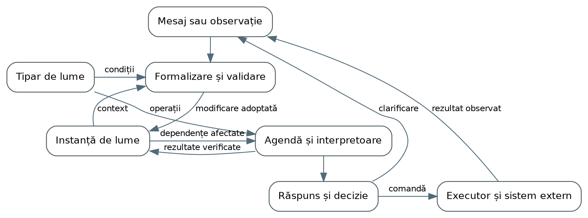
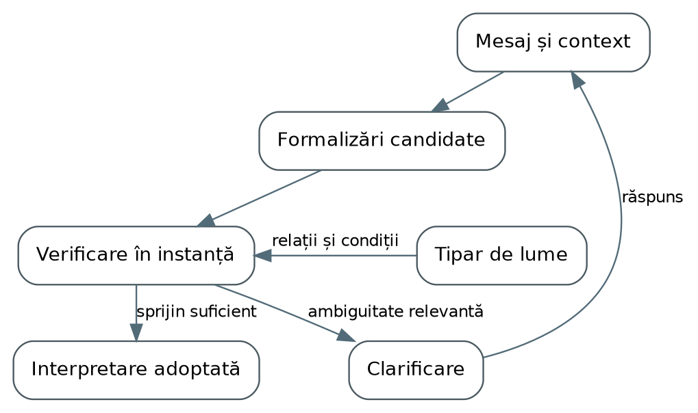
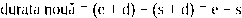
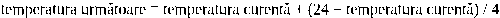
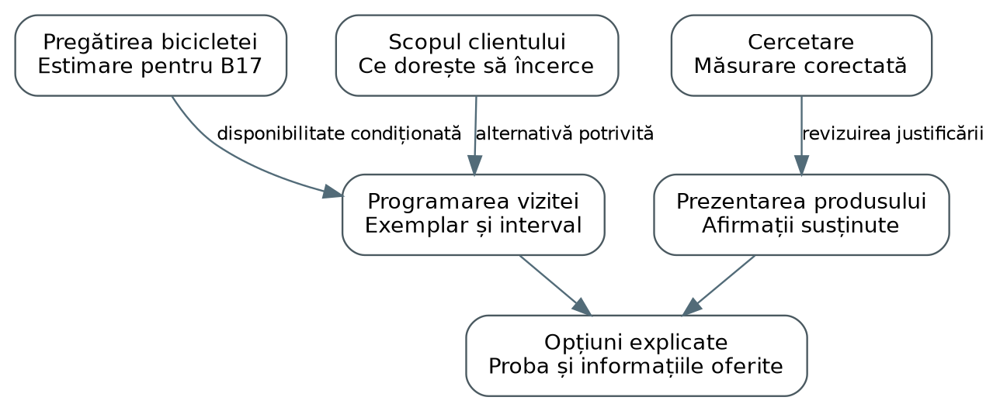

Modele simbolice ale lumii
Modele
simbolice
ale lumii
Cum
păstrează un sistem AI
sensul unei situații
Tipare,
instanțe și raționament
în sisteme neurosimbolice
Ediția
a patra
11 noiembrie 2026
Un asistent ne poate ajuta să pregătim o călătorie, să înțelegem un document sau să organizăm un proiect. Aproape întotdeauna, lucrurile devin interesante după primul răspuns. Schimbăm o dată, retragem o presupunere, revenim la o discuție de ieri ori descoperim că două persoane folosesc același cuvânt cu sensuri diferite. În acel moment, avem nevoie ca sistemul să păstreze situația despre care vorbim și să înțeleagă ce anume s-a schimbat în ea.
Această carte explorează o arhitectură pentru această continuitate. O numim model simbolic al lumii, sau SWM, după expresia engleză Symbolic World Model. Ideea este să legăm limbajul de reprezentări explicite ale situațiilor, astfel încât un sistem să poată urmări relații, calcula consecințe, compara posibilități și formula întrebări relevante. Partea neuronală poate propune ce înseamnă un mesaj. Partea simbolică organizează interpretarea și îi urmărește consecințele. Interpretoarele și codul de execuție transformă descrierile în calcule și, atunci când este cazul, în acțiuni asupra unor sisteme reale.
Firul cărții trece prin lumi diferite. O călătorie ne ajută să vedem dependențele dintre evenimente. O organizație arată de ce relația cu clientul, producția și cercetarea cer reprezentări distincte. O poveste face vizibilă diferența dintre ceea ce s-a întâmplat și ceea ce știe un personaj. Un program ne permite să cercetăm o acțiune înainte de a o executa. Arhitectura prezentată la început este apoi desfăcută în mecanisme: fire și circuite, potrivire, compunere, validare, actualizare și execuție. O clădire conectată la senzori ne arată cum predicțiile se întorc la realitate pentru a fi confruntate cu observațiile. Aceste situații sunt construite pentru explicație; tehnologiile și cercetările discutate sunt identificate în bibliografie.
Două concepte vor ține împreună această diversitate: tiparul de lume, care descrie ceea ce putem reutiliza între situații, și instanța de lume, care păstrează un caz particular. Vom vedea cum aceeași realitate poate participa la mai multe lumi și cum legăturile dintre ele pot fi reprezentate fără să le uniformizăm sensul. Miza este practică: să putem întreba un sistem de ce susține o concluzie, ce ar schimba-o și ce ar trebui să aflăm sau să facem în continuare.
1 Când o conversație are nevoie de o lume 4
2 Mai multe lumi în aceeași realitate 9
3 Cum capătă limbajul o formă precisă 13
4 Raționamentul deschide posibilități 20
5 O lume care își poate schimba părerea 25
6 Întrebarea potrivită la momentul potrivit 30
7 Acțiuni pe care le putem cerceta înainte de a le executa 35
8 Mai multe reprezentări pentru aceeași lume 40
9 Când reprezentarea urmărește lumea reală 45
10 Cum lucrează împreună lumile 51
11 Cum învățăm tipare mai bune 56
12 Lumi în care merită să gândim astfel 61
Surse și lecturi recomandate 65
„Mutăm plecarea pe vineri.” Propoziția are patru cuvinte și pare să ceară o modificare simplă. În spatele ei se află însă o călătorie deja discutată: un tren, o cameră rezervată, o întâlnire și cineva care urma să ne aștepte la destinație. Persoana care primește mesajul înțelege că unele dintre acestea trebuie reconsiderate. Poate răspunde imediat, dar poate și observa ceva ce noi am omis: vineri întâlnirea nu mai este posibilă, deși trenul și hotelul sunt disponibile.
Un asistent AI se întâlnește cu aceeași problemă. Recunoașterea zilei și a verbului „a muta” reprezintă numai începutul. Pentru a ajuta, trebuie să stabilească la ce plecare ne referim, care dintre angajamente depind de ea și dacă solicităm explorarea unei alternative sau modificarea rezervărilor. O singură replică deschide, astfel, trei întrebări legate: ce înseamnă mesajul, ce rezultă din el și ce avem dreptul să schimbăm efectiv.
Aceste întrebări ne conduc spre modelele simbolice ale lumii. Ele pornesc de la nevoia de a întreține o reprezentare a situației, pe care conversația o poate completa și transforma. Câștigul urmărit este continuitatea sensului între ceea ce spune utilizatorul, ceea ce calculează sistemul și ceea ce se întâmplă ulterior.
Dacă am construi acest asistent, unde am pune informația că hotelul fusese ales pentru apropierea de întâlnire? Și ce componentă ar trebui să reacționeze când întâlnirea se mută? Aceste întrebări transformă intuiția într-o arhitectură. Sistemul are nevoie de o memorie explicită a situației, de o descriere a relațiilor pe care le poate interpreta și de componente care execută operații asupra lor. Un răspuns util apare prin colaborarea acestor părți.
Vom numi tipar de lume descrierea reutilizabilă a obiectelor, relațiilor, condițiilor și operațiilor dintr-o familie de situații. Instanța de lume păstrează cazul particular: călătoria discutată, opțiunile sale și informațiile pe care ne bazăm. Tiparul spune, de exemplu, cum verificăm o legătură între două segmente de transport. Instanța spune care sunt segmentele, când au loc și ce durată de transfer cunoaștem. Acestea sunt cele două concepte centrale ale cărții. Interpretoarele și executorii sunt componentele software care le folosesc.
Reprezentarea poate fi organizată prin fire și circuite SOP. Un fir identifică un element și îi descrie proprietățile: o persoană, o întâlnire, o observație sau o operație cerută. Referințele leagă firele într-un circuit. În călătoria noastră, o rezervare trimite la persoana și la segmentul de transport potrivite, iar verificarea participării trimite la sosire și la începutul întâlnirii. Tiparul stabilește sensul acestor legături. Circuitul oferă o structură pe care un program o poate parcurge, interoga și transforma; simpla sa existență nu execută însă nicio rezervare.
Privită în ansamblu, arhitectura are un traseu principal și două întoarceri importante. Un mesaj produce o interpretare propusă, aceasta este verificată în contextul unei instanțe, iar modificarea adoptată declanșează calculele relevante. Dacă lipsește o distincție decisivă, traseul se întoarce în dialog. Dacă este cerută o acțiune externă, traseul trece printr-un executor și revine prin rezultatul observat. Figura arată aceste relații; aceeași aplicație poate realiza mai multe dintre roluri, fără să le confunde responsabilitățile.

Figura 1. Instanța păstrează situația și rezultatele. Clarificarea și efectele externe revin ca intrări pentru un nou ciclu de procesare.
Să urmărim mecanismul folosind mesajul „mutăm plecarea pe vineri”. La intrare păstrăm mesajul și contextul în care a fost primit. Un selector de context caută instanțele plauzibile după discuția activă, persoanele menționate și evenimentele deja legate de ele. Un model neuronal propune că este vorba despre călătoria aflată în discuție, identifică data și interpretează intenția. Rezultatul acestei etape este o propunere de modificare: obiectul vizat, schimbarea cerută, sursa și presupunerile folosite. Nu este încă noua stare a tuturor rezervărilor.
Această propunere este evaluată pe o copie de lucru sau pe o listă de diferențe față de versiunea curentă a instanței. Validatorul verifică dacă obiectul există, dacă noua valoare are sens pentru proprietatea schimbată și dacă referințele conduc la elementele așteptate. Începutul unei întâlniri cere un moment; participantul cere o referință la o persoană; o durată trebuie interpretată în unitatea corectă. Dacă „vineri” poate desemna două date relevante, sistemul păstrează alternativele și cere precizarea care schimbă rezultatul. Validarea nu completează în tăcere ceea ce mesajul nu a stabilit.
După verificările structurale, interpretoarele evaluează condițiile relevante. În cazul nostru, modificarea plecării schimbă sosirea, iar sosirea influențează participarea. Motorul nu trebuie să reia fiecare calcul despre toate călătoriile. El consultă legăturile de dependență și introduce într-o agendă de lucru operațiile afectate. Agenda este lista calculelor care trebuie încă efectuate, fiecare asociat cu datele și versiunea pentru care este cerut. Un interpretor temporal recalculează ora sosirii; un alt calcul verifică marja până la întâlnire. Dacă rezultatul schimbă o concluzie folosită mai departe, acea concluzie pune la rândul ei alte operații în agendă.
Aici trebuie separate două feluri de legături. Faptul că întâlnirea și călătoria se referă la aceeași persoană este o relație semantică. Faptul că evaluarea participării are nevoie de ora sosirii este o dependență de calcul. Numai a doua stabilește că un rezultat trebuie disponibil înaintea altui calcul. Din circuitul care descrie situația construim sau selectăm dependențele cerute de operația curentă. În capitolele următoare vom vedea cum unele calcule pot rula în paralel, cum altele cer o ordine și cum tratăm regulile care se reactivează reciproc.
Rezultatele trebuie să păstreze originea lor. Evaluarea „nu ajungem la timp” este legată de noua sosire, durata transferului și ora întâlnirii. Această justificare permite două operații: explicarea răspunsului și revizuirea lui când una dintre premise se schimbă. În memorie putem păstra firele într-o colecție adresabilă după identificator, un index după tip și proprietăți, plus legăturile inverse care spun unde este folosită fiecare informație. Acestea sunt moduri de organizare a acelorași date. Ele fac posibilă recuperarea rapidă și actualizarea locală, fără să adauge o nouă noțiune de lume.
La capătul acestui traseu, controlul aplicației alege ce fel de rezultat trebuie oferit. Dacă întrebarea privea numai fezabilitatea, prezentăm concluzia și premisele decisive. Dacă există mai multe variante, păstrăm scenariile. Dacă lipsește informația care le separă, formulăm o clarificare. Dacă utilizatorul a cerut efectiv schimbarea, pregătim operația pe care serviciul de rezervări o poate accepta. Alegerea nu este dedusă numai din faptul că un scenariu este posibil: ea depinde și de intenția, preferințele și autoritatea exprimate în interacțiune.
Adoptarea unei modificări în instanță și producerea unui efect în exterior sunt două operații cu rezultate diferite. În memorie putem înregistra imediat decizia „dorim plecarea vineri” și faptul că schimbarea biletului este în așteptare. Executorul trimite cererea serviciului, cu identitatea operației și condițiile necesare. Dacă serviciul confirmă, rezultatul intră ca un nou eveniment și actualizează starea rezervării. Dacă refuză, instanța păstrează rezervarea existentă și motivul refuzului. Dacă răspunsul se pierde, rezultatul rămâne necunoscut până la o verificare; sistemul nu inventează confirmarea din propria intenție.
Memoria persistentă face acest proces continuabil. După închiderea aplicației trebuie să putem recupera instanța, versiunea tiparului, justificările importante și operațiile externe încă neclarificate. Starea curentă poate fi păstrată împreună cu un jurnal al modificărilor relevante. Un calcul început asupra unei versiuni vechi nu este adoptat automat după ce utilizatorul a schimbat din nou data: rezultatul trebuie confruntat cu premisele actuale. Astfel, consistența nu este doar o verificare la încărcare, ci o proprietate urmărită pe parcursul actualizărilor.
Prin această arhitectură, SWM devine partea care păstrează organizarea semantică a activității. Modelul neuronal propune sensuri și recunoaște obiecte. Interpretoarele calculează consecințele pentru descrierile pe care le înțeleg. Controlul aplicației alege următorul pas, iar executorii interacționează cu serviciile sau dispozitivele. Putem începe cu un singur tipar, un depozit de instanțe și câteva operații bine definite. Extinderea adaugă alte tipare și interpretoare prin aceleași puncte de legătură: date identificate, condiții explicite și rezultate care își păstrează sensul.
Plecarea de joi fusese aleasă pentru a ajunge cu o seară înaintea întâlnirii de vineri. Arhitectura urmărește deja efectele unei schimbări de orar; acum apare o schimbare mai profundă, în motivul călătoriei.
O conversație poate modifica și felul în care privim scopul. Utilizatorul adaugă: „Întâlnirea se poate face online; important este să fiu acolo pentru weekend.” Plecarea de joi fusese justificată de o condiție care tocmai și-a pierdut importanța. Un sistem care păstrează justificările poate redeschide alegerea călătoriei fără să considere întregul plan greșit. Hotelul poate rămâne potrivit, transportul de la gară poate necesita altă oră, iar întâlnirea poate trece în altă formă de organizare.
De aici rezultă o observație importantă pentru proiectarea memoriei unui asistent. O amintire utilă conține atât ceea ce am ales, cât și motivul pentru care alegerea avea sens. Dacă motivul se schimbă, memoria poate indica ce merită reconsiderat. Această proprietate este la fel de relevantă într-o analiză de documente sau într-un proiect de cercetare: o concluzie care supraviețuiește după retragerea premisei sale poate deveni mai periculoasă decât o informație uitată.
La această scară, reprezentarea simbolică seamănă cu o bună organizare a muncii intelectuale. Avem obiecte identificabile, afirmații despre ele și relații pe care le putem inspecta. Totuși, scopul este ca aceste relații să poată fi folosite de programe. Sistemul poate urmări dependențele, verifica o condiție temporală sau construi o variantă a planului. Explicația și calculul folosesc aceeași organizare a situației, ceea ce permite ca rezultatul să fie legat de pașii care l-au produs.
Telefonul unei persoane poate conține un calendar, un roman în lucru, mesaje de familie și date despre consumul locuinței. Toate o privesc, dar fiecare cere alte distincții. În calendar contează suprapunerea intervalelor și acordul participanților. În roman contează continuitatea evenimentelor și ceea ce știe fiecare personaj. În locuință contează observațiile senzorilor, evoluția temperaturii și comenzile trimise echipamentelor. Apartenența la aceeași persoană nu oferă, singură, un mod comun de a interpreta toate aceste informații.
Vom folosi cuvântul „lume” pentru o delimitare în care anumite obiecte, relații și schimbări sunt suficiente pentru o familie de întrebări. Lumea unei călătorii ne permite să discutăm trasee, sosiri și legături. Lumea unui roman ne permite să discutăm personaje, evenimente și perspective. Delimitarea este aleasă în funcție de ceea ce vrem să înțelegem sau să facem; ea poate deveni mai bogată când întâlnim o întrebare care cere o distincție nouă.
Un exemplu din lectură face această idee ușor de simțit. Cititorul află că o scrisoare a fost ascunsă, dar personajul principal încă nu știe. Dacă povestea îl face să acționeze pe baza conținutului scrisorii înainte să îl afle, apare o ruptură de continuitate. Pentru a o identifica trebuie să reprezentăm separat evenimentul și accesul personajului la informație. O listă cu faptele din roman ar putea fi corectă și totuși insuficientă pentru această întrebare. Reprezentarea potrivită păstrează și perspectiva din care fiecare fapt poate influența o acțiune.
Într-o locuință întâlnim o dificultate diferită. „Camera trebuie să fie caldă la sosire” exprimă o intenție, temperatura măsurată exprimă o observație, iar ora probabilă a sosirii exprimă o estimare. Sistemul trebuie să le pună în relație pentru a decide când să pornească încălzirea. Dacă trenul întârzie, se schimbă timpul disponibil pentru încălzire. Dacă o fereastră rămâne deschisă, se schimbă condițiile fizice ale predicției. Cele două modificări ajung la aceeași decizie prin relații diferite.
Exemplele ne arată de ce pluralitatea lumilor este utilă. Nu încercăm să înghesuim totul într-un vocabular unic, în care „disponibil”, „cunoscut” și „confirmat” ar avea un singur sens. Construim reprezentări potrivite activității și precizăm legăturile dintre ele. Ora sosirii poate fi comună lumii călătoriei și celei a locuinței, fără ca o regulă despre bilete să devină o regulă despre temperatură.
Această alegere are și un criteriu practic. Merită să distingem lumi atunci când aceeași informație își schimbă sensul operațional, când răspunsurile cer dovezi diferite sau când schimbările urmează reguli diferite. Două întrebări apropiate din același calendar pot folosi aceeași lume. Cercetarea unei ipoteze și confirmarea unei comenzi pot avea nevoie de lumi distincte, chiar dacă privesc același produs. Generalitatea sistemului va veni din felul în care poate organiza și conecta aceste diferențe.
Când pregătim o nouă călătorie, nu redescoperim de fiecare dată că trebuie să ajungem înainte să plece următorul tren. Folosim relații învățate anterior și le aplicăm unor evenimente noi. Când citim un roman nou, presupunem că un personaj își păstrează identitatea între două scene și că informația trebuie să ajungă la el pe o anumită cale. Acest fond reutilizabil poate fi modificat de context: o poveste poate permite călătoria în timp, iar un traseu poate include un transfer organizat după alte reguli. În fiecare caz există ceva general și ceva particular.
Distincția introdusă în arhitectură capătă acum un sens mai larg. Tiparul de lume descrie ceea ce putem reutiliza pentru a interpreta situații și schimbări. Instanța de lume păstrează cazul particular: călătoria discutată acum, romanul pe care îl analizăm sau situația locuinței în această seară. Instanța poate conține informații certe, alternative încă deschise, presupuneri și un istoric. Tiparul permite ca aceste informații să fie puse în relație și folosite în raționament.
Distincția se vede în ceea ce putem schimba. Dacă trenul ajunge la altă oră, actualizăm instanța călătoriei. Dacă tiparul presupunea că orice schimbare de tren are loc în aceeași gară, descoperirea unui transfer prin oraș cere îmbogățirea lui: trebuie să poată reprezenta și deplasarea dintre gări. Durata deplasării concrete rămâne o informație despre locurile și condițiile respective, chiar dacă o folosim în mai multe călătorii. Reutilizarea unei informații nu o transformă automat într-o regulă a lumii.
Tiparul participă activ la înțelegerea instanței. El poate arăta că lipsește durata transferului, că o sosire târzie pune în discuție o întâlnire sau că un personaj nu putea cunoaște încă o informație. Poate orienta o întrebare și poate face vizibilă o consecință care nu apare literal în mesaj. Aici se află interesul arhitecturii SWM: cunoașterea reutilizabilă devine un instrument pentru interpretarea și explorarea unui caz, iar cazul poate aduce motive pentru îmbunătățirea cunoașterii reutilizabile.
Într-un sistem neurosimbolic, modelul neuronal poate propune că „mutăm plecarea” privește o anumită călătorie și o anumită dată. Instanța oferă contextul în care verificăm acea propunere. Tiparul permite calculul consecințelor, iar un serviciu de rezervări poate executa schimbarea dacă aceasta este cerută și admisă. Fiecare componentă contribuie la același fir de sens. Cititorul ar trebui să poată urmări cum a trecut sistemul de la propoziție la alegere și, apoi, la rezultatul observat.
O organizație face această problemă și mai interesantă. Acolo, aceeași conversație poate trece în câteva secunde de la disponibilitatea unei persoane la pregătirea unui produs și la valoarea unei dovezi experimentale. Pentru a înțelege un asemenea dialog, trebuie să vedem mai întâi cum pot exista mai multe lumi în aceeași realitate.
Un client întreabă dacă poate încerca săptămâna viitoare o bicicletă electrică prezentată într-un mesaj al firmei. Calendarul are un interval liber. Echipa care pregătește bicicletele are un exemplar aproape terminat. Cercetătorii au obținut un rezultat promițător pentru o baterie nouă. La prima vedere, informațiile par să se completeze. Dacă asistentul le comprimă în afirmația „produsul este gata”, tocmai informația decisivă poate dispărea: exemplarul pregătit pentru client folosește bateria existentă, iar rezultatul nou privește un prototip diferit.
Niciuna dintre echipe nu a spus neapărat ceva fals. Ele răspundeau la întrebări diferite. Persoana care programează întâlnirea se întreba când pot veni clientul și consultantul. Producția urmărea dacă exemplarul concret poate fi pus la dispoziție. Cercetarea încerca să afle în ce condiții funcționează o anumită variantă tehnică. Asistentul trebuie să păstreze aceste deosebiri pentru a construi un răspuns comun care nu promite mai mult decât susțin informațiile.
În lumea programărilor, o rezervare poate ocupa un interval, poate avea participanți și poate fi confirmată, mutată sau anulată. Întrebarea „putem vineri?” privește compatibilitatea unor calendare și condițiile întâlnirii. Tiparul acestei lumi descrie asemenea relații. Instanța poate cuprinde programul echipei pentru o perioadă, cu mai multe vizite și resursele lor comune; vizita acestui client este un obiect în acea situație. Astfel putem detecta că două vizite cer simultan aceeași persoană. Faptul că bicicleta este fabricată în altă parte devine relevant când disponibilitatea ei condiționează vizita.
În lumea pregătirii produsului, aceeași vizită apare ca termen pentru o cerință: un anumit exemplar trebuie să fie într-o anumită stare. Aici contează identitatea fizică a bicicletei, configurația sa, operațiile efectuate și verificările cerute de procedura firmei. „Gata” înseamnă că acele condiții sunt satisfăcute pentru acel exemplar. O schimbare a consultantului poate să nu influențeze deloc această lume. O schimbare a configurației cerute de client poate să îi schimbe întregul plan.
Lumea cercetării organizează altfel informația. Ea leagă o ipoteză de experimente, condiții de testare și observații. Un rezultat favorabil poate susține afirmația că o variantă merită investigată în continuare. Pentru a deveni relevant pentru vizita clientului, trebuie să știm dacă privește configurația care va fi folosită și ce concluzie permite. Un număr despre autonomia unui prototip, obținut pe un anumit traseu, rămâne legat de acele condiții chiar dacă aceeași familie de produse are un nume comercial comun.
Cele trei lumi nu coincid obligatoriu cu trei departamente. O singură persoană poate lucra în toate. O echipă poate întreține mai multe tipare, iar o aplicație le poate găzdui împreună. Criteriul separării este sensul relațiilor și al operațiilor. „Confirmat” într-un calendar înseamnă acord asupra unei întâlniri; „confirmat” într-o cercetare cere precizarea afirmației și a dovezilor; „confirmat” într-un sistem de execuție poate însemna că un dispozitiv a raportat efectuarea unei comenzi. Un câmp comun cu același nume nu rezolvă aceste diferențe.
Această observație are un precedent important în proiectarea software. Tradiția Domain-Driven Design tratează explicit situațiile în care modele diferite folosesc vocabular asemănător și cere ca relațiile dintre contexte să fie descrise. Într-o analiză despre integrarea unei componente AI, Eric Evans discută tocmai separarea contribuției modelului de limbaj de modelele și responsabilitățile aplicației. [S28] Paralela este utilă pentru SWM: partea neuronală poate ajuta la recunoașterea unei situații, în timp ce sensul unei decizii rămâne legat de contextul în care ea este luată.
O delimitare bună economisește explicații inutile și face vizibile legăturile importante. Nu reprezentăm chimia bateriei în fiecare programare. Păstrăm, în schimb, legătura dintre vizită, configurația promisă și exemplarul disponibil. Dacă discuția ajunge la o afirmație despre performanță, putem urmări dovada în lumea cercetării. Reprezentarea rămâne suficient de bogată pentru întrebările reale, fără ca toate detaliile organizației să devină obligatorii peste tot.
Două calendare pot avea exact aceleași câmpuri și totuși să organizeze activități diferite. Într-unul, o cerere ocupă imediat intervalul. În celălalt, intervalul este ocupat numai după acceptare. Dacă reprezentăm doar câmpurile „început”, „sfârșit” și „participant”, această diferență dispare. Ea reapare când două persoane solicită aceeași oră și sistemul trebuie să decidă ce se întâmplă.
De aceea, tiparul de lume include comportamentul, nu doar forma informațiilor. El spune ce consecințe are acceptarea unei cereri, ce rămâne neschimbat și ce condiții trebuie verificate. Pentru vizita clientului, poate descrie trecerea de la intenție la propunere și apoi la programare confirmată. O instanță concretă poate fi încă la prima etapă. Prezența ei în sistem este folositoare chiar dacă nu sunt cunoscute toate detaliile: putem cerceta alternative și putem identifica exact informația de care depinde pasul următor.
Tiparul poate conține reguli cu temeiuri diferite. Relația dintre durata unei întâlniri și orele ei este o definiție. O procedură care cere prezența unui consultant este o regulă a organizației. O estimare a autonomiei bateriei descrie un fenomen și se confruntă cu observațiile. Aceste reguli pot participa la aceeași decizie, dar nu se schimbă din aceleași motive. O definiție ambiguă cere clarificarea termenilor; o procedură cere o decizie a persoanei responsabile; o predicție care se abate repetat de la măsurări poate cere alți parametri sau un alt model.
Distincția contează când realitatea nu urmează planul. Un consultant poate confirma din greșeală două vizite simultane. Sistemul trebuie să poată reprezenta această situație și să o semnaleze. Regula care ar fi trebuit să împiedice dubla confirmare rămâne utilă, dar nu justifică ștergerea uneia dintre relatări pentru a obține un calendar aparent impecabil. Lumea trebuie să cuprindă și situațiile pe care vrem să le înțelegem, să le reparăm sau să le prevenim.
O instanță se poate transforma în timp fără să își piardă identitatea. Programul urmărit al echipei continuă să existe când mutăm o întâlnire, iar în interiorul lui vizita își poate păstra propria identitate. Putem întreba astfel „de ce am mutat-o?” și „cine a fost informat?”. Dacă vrem numai să comparăm două ore, putem construi două scenarii ale programului, pornite de la aceeași instanță. Fiecare păstrează presupunerea proprie, iar alegerea unuia nu modifică retroactiv istoricul celuilalt.
În sensul acesta, instanța este mai bogată decât o fotografie a stării curente. Ea poate reprezenta ceea ce știm despre caz, ceea ce am presupus și ceea ce încă așteaptă o confirmare. Coerența ei înseamnă că afirmațiile folosite împreună au o interpretare compatibilă cu tiparul. Adevărul lor despre realitate se sprijină pe observații și dovezi. Cele două se întâlnesc în activitatea sistemului: regulile descoperă nepotriviri, iar informația nouă permite alegerea sau revizuirea interpretării.
Imaginați-vă că asistentul află „testul bateriei a reușit” și schimbă automat vizita clientului în „confirmată”. Eroarea se produce la trecerea dintre lumi. Rezultatul experimental poate fi relevant pentru pregătirea unei demonstrații, însă nu stabilește singur disponibilitatea exemplarului sau acordul clientului. Legătura corectă trebuie să spună ce afirmație se transferă, despre ce obiect și pentru ce decizie.
Putem construi această legătură în pași inteligibili. Vizita se referă la o configurație promisă. Un exemplar este pregătit în acea configurație. O anumită verificare privește acel exemplar sau o clasă de exemplare pentru care transferul rezultatului este justificat. Abia apoi informația despre pregătire poate satisface o condiție a vizitei. Când asemenea legături sunt explicite, asistentul poate identifica și ceea ce lipsește: poate că avem un rezultat bun, dar nu știm dacă exemplarul destinat clientului folosește aceeași versiune.
Identitatea este crucială în această trecere. Numele unei familii de biciclete, versiunea unui proiect și numărul unui exemplar fizic desemnează lucruri diferite. Un test efectuat asupra unui prototip nu trebuie asociat automat tuturor produselor cu același nume. În alte domenii, problema reapare sub alte forme: versiunea unui document față de titlul său, persoana față de rolul ocupat, rețeta unui produs față de lotul concret. Sistemul trebuie să păstreze ceea ce este comun și ceea ce rămâne particular.
Uneori compunem tiparele într-unul mai cuprinzător. Pentru a pregăti o vizită, putem lega regulile de calendar de condițiile de disponibilitate ale produsului. Alteori păstrăm lumile distincte și schimbăm numai informațiile necesare. Cercetarea poate continua în propriul ritm, iar producția poate primi o concluzie însoțită de condițiile ei. Alegerea depinde de cât de des trebuie gândite împreună și de responsabilitatea asupra informației. Ambele forme de organizare sunt compatibile cu cele două concepte ale cărții.
Același principiu apare într-o familie care pregătește o vacanță. Calendarul profesional, programul școlar și călătoria nu devin un singur domeniu doar pentru că influențează aceleași date. Aprobarea concediului și disponibilitatea unui zbor sunt condiții diferite. O soluție comună trebuie să le respecte pe amândouă, iar schimbarea uneia trebuie să ajungă la alegerile care depind de ea. Un asistent folositor păstrează aceste legături fără să presupună că are autoritate asupra fiecărui calendar.
O familie vrea să plece în vacanță după terminarea cursurilor și să ajungă înainte de închiderea recepției. Calendarul școlar, transportul și cazarea pot fi descrise corect separat, iar combinația aleasă poate totuși să fie imposibilă. O compoziție folositoare trebuie să permită descoperirea acestei incompatibilități. Reunirea tuturor informațiilor într-un fișier oferă acces la date; legarea condițiilor face posibil raționamentul comun.
Primul pas este să precizăm ce contribuție cerem fiecărui tipar. Din calendar folosim momentul de la care persoanele pot pleca. Din transport folosim locurile, plecările, sosirile și condițiile legăturilor. Din cazare folosim locul și intervalul în care sosirea poate fi acceptată. Aceste contribuții formează interfața prin care compunem lumile: partea declarată a fiecărei descrieri de care celelalte pot depinde. Detaliile despre evaluarea elevilor sau despre administrarea camerelor nu sunt necesare întrebării curente.
Urmează identificarea rolurilor care trebuie puse în corespondență. Persoanele care pleacă trebuie să fie cele cărora li se aplică disponibilitatea din calendar. Sosirea relevantă este cea în locul cazării, după transfer, nu simpla aterizare în oraș. Intervalele trebuie raportate la date și fusuri orare compatibile. Dacă o sursă măsoară transferul în minute și alta în secunde, legătura trebuie să includă conversia. Aceste adaptări sunt operații explicite ale compoziției; asemănarea numelor unor câmpuri nu le înlocuiește.
Odată stabilite legăturile, combinăm condițiile pentru scenariul ales. Plecarea nu poate fi înaintea disponibilității persoanelor. Transferul trebuie să înceapă după sosirea segmentului precedent. Sosirea la cazare trebuie să se încadreze în intervalul acceptat sau să existe o altă procedură aplicabilă. Interpretorul caută valori care satisfac toate aceste condiții împreună. Dacă găsește o combinație, produce un scenariu cu legăturile și premisele folosite. Dacă nu găsește, trebuie să distingă o incompatibilitate demonstrată în domeniul explorat de o căutare oprită înainte de rezolvare.
Tiparul compus include astfel mai mult decât reuniunea descrierilor inițiale. El adaugă relațiile prin care rezultatul unei lumi devine o condiție în alta. „Ajungem la timp pentru cazare” nu aparține izolat nici orarului de transport, nici regulilor recepției. Este o concluzie construită la întâlnirea lor. Ea trebuie să aibă o justificare care traversează aceleași legături. Dacă se schimbă ora zborului, putem găsi concluzia afectată; dacă se schimbă o informație despre camera alăturată, nu avem motiv să refacem traseul.
Compoziția comportamentului cere o precizare suplimentară. Confirmarea hotelului și confirmarea transportului sunt operații distincte, administrate de sisteme diferite. Putem cere ca un plan să conțină ambele confirmări înainte de a fi prezentat drept stabilit, dar această condiție nu le transformă într-o singură operație indivizibilă. Dacă prima reușește și a doua eșuează, instanța trebuie să reprezinte rezultatul parțial. Planul poate prevedea o alternativă sau o anulare conform condițiilor rezervării. Sincronizarea este descrisă și executată printr-un protocol; ea nu apare automat din legarea a două circuite.
La încărcarea tiparului compus verificăm dacă interfețele se potrivesc: rolurile există, tipurile și unitățile sunt compatibile, iar operațiile invocate au interpretoare. La folosirea lui verificăm condițiile cazului concret. Un tipar poate fi bine construit și poate respinge o anumită combinație de zbor și hotel; aceasta este o informație utilă despre instanță. Invers, o nepotrivire între două unități sau două sensuri ale aceleiași proprietăți cere repararea compoziției, înainte de a decide ceva despre călătorie.
Putem folosi această legătură în două moduri. Când aceeași problemă revine frecvent, păstrăm un tipar compus reutilizabil și construim instanțe pentru alte vacanțe. Când lumile au ritmuri și responsabilități independente, păstrăm instanțele distincte și schimbăm numai rezultate prin interfețele stabilite. În ambele cazuri, munca inginerească este aceeași în punctul decisiv: trebuie să știm ce informație trece, ce înseamnă pentru destinatar și ce concluzii sau operații poate influența.
Pluralitatea lumilor devine astfel o resursă de precizie. Ne permite să explicăm de ce o informație este suficientă într-un loc și încă insuficientă în altul. Pentru a transforma această idee într-un sistem, avem nevoie de o formă în care obiectele, referințele și condițiile să poată fi urmărite. Următoarea dificultate este să ajungem la acea formă pornind de la felul firesc, adesea incomplet, în care vorbim.
„Dacă luăm trenul de la opt, ajungem la întâlnire? Păstrează varianta, dar nu schimba biletele.” Un om recunoaște în acest mesaj o întrebare despre un viitor posibil și o limită asupra acțiunii. Vrem să explorăm, apoi să reținem rezultatul. Trenul, întâlnirea și biletele aparțin aceleiași conversații, însă propoziția nu spune că noul plan a fost adoptat. Pentru un asistent, a pierde această diferență ar putea însemna efectuarea unei operații pe care utilizatorul tocmai a exclus-o.
Formalizarea începe prin asemenea alegeri de sens. Abia după ce le-am păstrat putem calcula dacă sosirea este compatibilă cu întâlnirea. Notația pe care o folosim trebuie să facă vizibile alegerile și legăturile dintre ele, astfel încât să poată fi inspectate de un om și folosite de programe. SOP Lang oferă o formă compactă pentru aceste descrieri. Interesul lui în această carte este să ne permită să urmărim trecerea de la mesaj la reprezentare, apoi de la reprezentare la interpretare.
Expresia „trenul de la opt” pare un identificator suficient până când în conversație apar două zile sau două gări. Componenta neuronală poate folosi contextul pentru a propune trenul vizat. Poate recunoaște și că „ajungem” se referă la participanții călătoriei, iar „întâlnirea” la evenimentul discutat anterior. Aceste asocieri trebuie păstrate ca parte a formalizării. Un calcul corect efectuat pentru alt tren răspunde precis unei întrebări pe care utilizatorul nu a pus-o.
Într-o reprezentare utilă putem vedea obiectul ales pentru fiecare referință și rolul fiecărei propoziții. Prima parte a mesajului introduce un scenariu. A doua cere memorarea lui. Ultima exclude schimbarea biletelor. Tiparul călătoriei ajută la interpretare: știm că un segment are plecare și sosire, că un transfer cere timp și că o rezervare efectivă este altceva decât o opțiune. Instanța aduce identitățile concrete și informațiile deja stabilite în conversație.
O verificare simbolică poate descoperi că trenul propus pleacă din alt oraș decât cel al călătoriei. Poate și arăta că două trenuri rămân compatibile cu mesajul. În al doilea caz, un răspuns de clarificare este mai bine întemeiat decât alegerea arbitrară. Puterea verificării vine din relațiile explicite, iar informația despre limbaj rămâne necesară pentru a decide dacă reprezentarea corespunde intenției. Cele două operații se pot ajuta reciproc într-un proces repetat: formalizarea propune, verificarea identifică o nepotrivire, contextul sau utilizatorul o rezolvă.
Cercetarea neurosimbolică a explorat concret această împărțire. The Neuro-Symbolic Concept Learner construiește o reprezentare a obiectelor dintr-o imagine și transformă întrebarea într-un program care operează asupra acelei reprezentări. Percepția, interpretarea întrebării și execuția sunt legate într-un sistem învățat. [S10] Pentru problema noastră, lecția de arhitectură este că o întrebare poate deveni o operație inspectabilă asupra unei situații reprezentate. Un asistent conversațional adaugă apoi continuitatea dintre mesaje, schimbarea informațiilor și consecințele acțiunilor.
Această continuitate cere și o urmă până la mesaj. Dacă întrebarea a fost „am putea?”, sistemul trebuie să poată arăta de ce rezultatul este un scenariu. Dacă utilizatorul corectează „mă refeream la ziua următoare”, referința modificată trebuie să ajungă la calculele dependente. Păstrarea fragmentului de limbaj și a interpretării sale face corecția localizabilă. În acest fel, formalizarea devine o propunere care poate fi examinată și îmbunătățită, în locul unei traduceri care dispare imediat în interiorul sistemului.

Figura 2. Tiparul participă la interpretare, iar o clarificare poate relua verificarea.
Luați două contacte cu același prenume. Într-un text, ambele pot apărea ca „Ana”. Într-o programare trebuie să știm despre care este vorba. De aceea, un identificator este diferit de numele afișat. El permite ca întâlnirea, călătoria și mesajele să se refere la aceeași persoană, chiar dacă numele ei se schimbă sau este comun cu al alteia. Aceasta este prima nevoie pe care o rezolvă forma de bază a unei declarații SOP. [S1]
@ana
person name="Ana"
@tren service label="T1"
date="2027-05-14" departure="08:00"
@calatorie
trip traveler=$ana service=$tren date="2027-05-14"
@intalnire
meeting participant=$ana
date="2027-05-14"
start="11:00"
Fiecare declarație este numită fir. @ana îi dă primului fir un identificator, person precizează tipul său, iar name="Ana" adaugă o proprietate. Referința $ana leagă călătoria și întâlnirea de aceeași persoană, iar $tren leagă acea călătorie de serviciul T1 din ziua indicată. Un ansamblu de fire formează un circuit SOP. Referințele exprimă legături între fire; ele nu impun, prin simpla lor prezență, o ordine de calcul sau de execuție.
Putem înțelege reprezentarea din memorie fără să cunoaștem o bibliotecă: un registru asociază fiecărui identificator un fir, iar firul păstrează tipul și proprietățile sale. Pentru fiecare proprietate există una sau mai multe valori. Unele sunt texte ori numere; altele sunt referințe care pot fi rezolvate în registru. O călătorie nu conține o copie a persoanei, ci o legătură spre ea. Astfel, mai multe călătorii pot privi aceeași persoană fără să creeze persoane noi. Instanța de lume cuprinde acest ansamblu și informațiile necesare interpretării lui, nu doar un singur fir.
Semnul $ contează fiindcă o legătură și un text au utilizări diferite. Referința participant=$ana permite traversarea relației spre persoană. Un șir citat, precum participant="$ana", păstrează doar caracterele respective. Tiparul stabilește unde este necesară o referință și unde este potrivit un text. Nici identificatorii, nici numele de proprietăți nu decid singure semantica; ele fac posibil ca semantica aleasă să fie exprimată fără ambiguitatea unui paragraf liber. Identificatorul este local spațiului în care îl rezolvăm. Un alt circuit poate folosi @ana pentru altă persoană; unirea lor cere o decizie explicită despre identitate.
Să adăugăm datele scenariului. Orele următoare sunt alese pentru exemplu, în aceeași zi și același fus orar. Trenul sosește la 10:20, iar transferul de la gară la locul întâlnirii durează 25 de minute. Pentru calcul folosim numărul de minute de la începutul zilei. Instanța poate păstra și forma obișnuită a orei pentru afișare; conversia trebuie să respecte aceeași convenție în toate valorile folosite.
@sosire
arrival traveler=$ana trip=$calatorie minute=620
@inceput
meeting_start meeting=$intalnire minute=660
@deplasare transfer
from=$sosire to=$inceput duration_minutes=25
Relația from leagă transferul de sosirea relevantă, iar to îl leagă de începutul întâlnirii. Cele 25 de minute nu sunt o durată fără adresă. Dacă în aceeași zi există o altă întâlnire, legăturile ne ajută să evităm folosirea accidentală a transferului ei. În plus, faptul că un fir ocupă mai multe linii ține de lizibilitate. Ordinea temporală este exprimată prin proprietăți și relații, nu dedusă din poziția în fișier.
SOP poate reprezenta și relații cu mai mulți participanți. O declarație poate conține cheia participant de mai multe ori, dacă vocabularul întâlnirii permite această multiplicare. Tiparul trebuie să spună dacă fiecare participant este obligatoriu, dacă acceptarea tuturor este necesară și ce înseamnă un răspuns lipsă. Sintaxa oferă o formă comună, iar diferențele care schimbă comportamentul rămân explicite în interpretare.
Această împărțire este utilă pentru extindere. Un cititor al sintaxei poate recunoaște fire, chei și referințe fără să cunoască fizica unei clădiri sau regulile unei publicații. Un interpretor specializat folosește apoi vocabularul lumii respective. În același format putem descrie un personaj și sursa unei informații, o măsurare și senzorul ei, o întâlnire și participanții ei. Generalitatea notației este infrastructură pentru diversitate, în timp ce tiparul păstrează sensul fiecărui domeniu.
Dar unde păstrăm chiar descrierea acestui tipar? Și el poate fi exprimat printr-un circuit SOP: fire pentru definițiile de tipuri și proprietăți, fire care descriu șabloane de potrivire, reguli, calcule și condiții. Folosim aceeași formă de reprezentare, dar în roluri diferite. Firul care declară că o întâlnire poate avea participanți aparține descrierii tiparului; firul întâlnirii Anei aparține instanței. Declararea unei reguli despre călătorii nu afirmă că o anumită călătorie a avut loc.
Interpretorul pregătește tiparul înainte de a-l folosi. Rezolvă legăturile dintre declarații și verifică dacă regula indică șabloane existente, iar calculul numește o operație disponibilă. Din definițiile proprietăților construiește evidența verificărilor aplicabile fiecărui tip. Din premise construiește indexuri care arată ce reguli trebuie cercetate când apare un fapt de un anumit tip. Pregătește și pașii potrivirii: ce fire sunt căutate, ce variabile trebuie să coincidă și ce calcule sau condiții urmează. Aceasta este compilarea tiparului într-o formă convenabilă procesării; nu transformă automat orice referință în ordine de execuție și nu inventează implementarea operațiilor numite.
O regulă a călătoriei poate cere o sosire, transferul către întâlnirea vizată și ora ei de început. Calculează momentul ajungerii și verifică dacă, împreună cu marja cerută, respectă termenul. Consecința este o evaluare temporală favorabilă pentru acea variantă, legată de datele folosite. Regula rămâne în tipar; evaluarea produsă intră în instanță. Dacă durata lipsește, regula nu produce acea evaluare: lipsa concluziei nu dovedește întârzierea. Astfel, același circuit reutilizabil poate prelucra numeroase instanțe fără să le amestece identitățile sau rezultatele.
Ana poate avea două întâlniri în aceeași zi, iar altcineva poate călători cu același tren. O căutare după cuvintele „tren” și „întâlnire” ar aduna date relevante fără să ne spună care trebuie folosite împreună. Potrivirea simbolică verifică tocmai această legătură. Intrările ei sunt circuitul căutat, circuitul disponibil și regulile de interpretare a tipurilor și valorilor; rezultatul este o colecție de potriviri complete, fiecare cu propriile legături între variabile și valori.
Când lucrăm cu multe călătorii, avem nevoie să găsim informațiile potrivite fără să rescriem fiecare identificator. Aici apar variabilele. În următoarele șabloane de căutare, ?cine desemnează o valoare care trebuie găsită, iar folosirea ei în două locuri cere ca acea valoare să fie aceeași. Semnul ? dinaintea identificatorului declarației arată că avem un fir de căutat, nu afirmarea unui fapt nou.
?persoana_in_drum
trip traveler=?cine date=?zi
?eveniment meeting
participant=?cine date=?zi start=?ora
Motorul începe cu firele de tip călătorie. Dacă are un index, adică un registru care grupează firele după tip ori după o proprietate, nu trebuie să inspecteze toate obiectele lumii. Când găsește călătoria Anei, notează provizoriu că cine este referința $ana, iar zi este data indicată. Această mică asociere se numește substituție: spune cu ce valoare poate fi înlocuită fiecare variabilă în potrivirea curentă. Reține și identitatea firului care a satisfăcut primul șablon, pentru a putea explica de unde provin valorile.
Cu substituția astfel obținută, al doilea șablon caută o întâlnire a aceleiași persoane în aceeași zi. O întâlnire a lui Dan este respinsă chiar dacă începe la ora dorită. O întâlnire a Anei din ziua următoare este respinsă din același motiv: o variabilă deja legată nu poate primi pe ascuns altă valoare. Pentru întâlnirea compatibilă, motorul completează substituția cu ora. Dacă două întâlniri sunt compatibile, rezultă două potriviri, fiecare păstrând identitățile firelor care au satisfăcut șabloanele. Chiar dacă valorile substituite coincid, întâlnirile pot fi distincte; identitățile permit justificarea fiecărui rezultat.
Să presupunem că prima călătorie încercată nu are nicio întâlnire compatibilă. Căutarea revine la alegerea călătoriei, abandonează legăturile provizorii ale acelei încercări și testează următoarea. Această revenire se numește backtracking. Ea trebuie să păstreze separate ramurile: ora găsită pentru o întâlnire nu poate rămâne accidental în substituția alteia. Aceeași disciplină permite potrivirea unor circuite mai mari, cu mai multe condiții comune. Enumerarea este completă când candidații au fost epuizați. Dacă oprim la primul rezultat sau la limita de calcul, ieșirea precizează că pot exista alte potriviri.
Variabilele au un domeniu local de utilizare: numele cine dintr-o altă regulă nu trebuie să devină accidental aceeași necunoscută. Șablonul reprezintă o condiție asupra datelor. A introduce ?ora în el nu modifică ora reală a întâlnirii. Dacă nu obținem nicio potrivire, știm doar că datele disponibile nu satisfac căutarea. Poate lipsi ora, poate fi greșită ziua sau poate să nu existe întâlnirea. Pentru a spune care dintre aceste situații avem, folosim alte verificări și informația despre ce considerăm complet în instanță.
Precizia presupune și o convenție pentru valori. În SOP, potrivirea valorilor literale păstrează forma lor textuală: 5 și 5.0 nu sunt aceeași potrivire, deși o comparație numerică le poate recunoaște egalitatea. Normalizarea datelor sau calculul explicit trebuie să rezolve diferența potrivit sensului urmărit. La fel, două nume egale nu dovedesc identitatea persoanelor. Potrivirea aplică relațiile declarate; nu înlocuiește stabilirea lor.
Referința spre Ana ne spune cine participă la întâlnire. Ea nu ne spune dacă trebuie să verificăm mai întâi orarul trenului sau disponibilitatea sălii. Diferența se poate pierde când desenăm toate relațiile prin săgeți. Pentru a proiecta procesarea, trebuie să distingem trei structuri care pot folosi aceleași fire fără să însemne același lucru.
Graful semantic spune ce reprezintă legăturile: Ana călătorește, trenul aparține variantei discutate, transferul unește sosirea cu întâlnirea. Un graf este aici doar o mulțime de elemente și relații între ele. Graful dependențelor de calcul spune ce valori trebuie cunoscute pentru a obține un rezultat: verificarea temporală citește momentul sosirii, durata transferului, ora întâlnirii și marja cerută. Planul de execuție spune în ce ordine vor fi efectuate operațiile disponibile și care dintre ele pot avea loc independent. El este construit pentru o întrebare și o stare a datelor.
Datele călătoriei sunt acum vizibile, dar răspunsul încă trebuie obținut. Pentru scenariul simplu, adunăm 25 la 620 și obținem 645, adică 10:45. Comparăm cu 660, ora 11:00. Rezultă o marjă de 15 minute. Această concluzie privește timpii și condițiile declarate: transferul folosit este cel dintre sosirea trenului ales și întâlnirea vizată. Dacă dorim o marjă minimă de 20 de minute, același calcul conduce la altă evaluare a variantei.
Pentru a descrie și un calcul, putem folosi fire cu roluri declarate de vocabularul aplicației. Exemplul de mai jos introduce un vocabular didactic: time_check numește o verificare a compatibilității temporale, iar proprietățile sale indică exact datele și condiția folosite. El explică o posibilă semantică; nu depinde de o metodă a unei biblioteci.
@ajungem_la_timp
time_check
arrival=$sosire transfer=$deplasare
deadline=$inceput
minimum_margin_minutes=15
Interpretorul acestei declarații trebuie să rezolve referințele și să verifice că transferul pleacă de la sosirea indicată și ajunge la evenimentul indicat. Apoi citește valorile în unități compatibile și verifică relația „sosire plus transfer plus marjă minimă este cel mult începutul întâlnirii”. Pentru valorile noastre, 620 plus 25 plus 15 este 660, deci condiția este îndeplinită exact la limită. Un rezultat explicabil păstrează relația, valorile și originea lor. Când durata transferului devine 30 de minute, putem vedea de ce concluzia se schimbă fără să reinterpretăm toate firele lumii.
Un alt interpretor ar putea trata durata transferului drept o necunoscută și ar deduce că trebuie să fie de cel mult 25 de minute pentru a respecta marja aleasă. Aceeași descriere a relației poate servi astfel unei evaluări concrete sau unei căutări de condiții. Pentru această reutilizare, semantica trebuie să fie precizată suficient de bine încât interpretoarele să trateze aceleași valori, aceleași limite și același sens al rezultatului.
Cum obținem concret planul de calcul? Pornim de la rezultatul cerut și consultăm contractul operației: ce citește, ce produce și în ce condiții este aplicabilă. Rezolvăm referințele, identificăm intrările existente și căutăm operații care pot furniza intrările lipsă. Operațiile fără dependențe nerezolvate pot fi evaluate; rezultatele lor deblochează alte operații. Dacă lipsește durata transferului și nu există un mod acceptat de a o obține, verificarea rămâne în așteptare cu această lipsă identificată. Nu o evaluăm ca și cum durata ar fi zero.
Un circuit semantic poate avea legături circulare perfect obișnuite: persoana indică organizația din care face parte, iar organizația își enumeră membrii. Acest lucru nu împiedică citirea datelor. Un ciclu de calcul cere însă o interpretare: dacă rezultatul A depinde de B, iar B de A, ordonarea singură nu ajunge. Avem nevoie de o regulă explicită de rezolvare, de o iterație justificată sau de oprirea cu dependența nerezolvată. Simplul desen al circuitului nu decide această alegere. În arhitectura propusă, contractele operațiilor fac posibilă separarea dintre o relație de sens și o dependență care blochează calculul.
O publicație digitală pregătește un articol ilustrat. Circuitul editorial descrie textul, imaginile alese și poziția lor în pagină. Un alt circuit descrie fișierele de imagine, versiunile și aprobările de utilizare. Ambele pot vorbi despre „fotografia de pe copertă”, dar această expresie nu este suficientă pentru a le uni: alegerea editorială și aprobarea privesc roluri diferite, iar fișierul poate fi înlocuit între timp.
Intrările compunerii sunt cele două circuite și o declarație a legăturilor permise între ele. Mai întâi păstrăm identitățile separate. Dacă ambele folosesc identificatorul local foto, îl rezolvăm împreună cu spațiul din care provine: editorial sau imagini. Dacă importăm firele într-un registru comun, atribuim nume distincte și rescriem consecvent referințele interne. Nu schimbăm doar etichetele firelor, lăsând legăturile să indice vechile nume.
Apoi declarăm interfața, adică informația pe care fiecare circuit o oferă și o așteaptă. Punctele acestei interfețe pot fi numite porturi: nu sunt un nou fel de obiect al lumii, ci locuri declarate de conectare. Circuitul editorial oferă identificarea fișierului, versiunea aleasă și utilizarea propusă. Circuitul aprobărilor oferă o evaluare pentru acea combinație și sursa ei. O mapare precizează că imaginea selectată în articol corespunde fișierului și versiunii din celălalt circuit. Numele afișat al fotografiei poate ajuta căutarea, dar maparea adoptată se bazează pe identificarea verificată.
Procesorul verifică apoi compatibilitatea interfeței: este vorba despre aceeași versiune, despre același tip de utilizare și despre o evaluare încă valabilă pentru condițiile declarate? Dacă aprobarea privește versiunea anterioară, compunerea produce o condiție neacoperită. Nu transferă automat răspunsul asupra noului fișier. Dacă evaluarea este favorabilă, rezultatul poate debloca verificarea editorială corespunzătoare; nu publică articolul. Ieșirea compunerii este un ansamblu conectat, cu mapări inspectabile și condiții satisfăcute ori rămase deschise.
Acesta este un contract de arhitectură, nu un efect ascuns al semnului $. SOP poate purta firele și relațiile acestei descrieri; aplicația trebuie să definească semantica interfeței și operațiile care o verifică. Compunerea modulelor unui tipar și conectarea a două instanțe independente sunt, de asemenea, operații diferite. În primul caz reutilizăm reguli și vocabular; în al doilea stabilim corespondențe între situații concrete. O prefixare a numelor previne coliziunile, dar nu dovedește că două reprezentări privesc același lucru.
Sistemul poate citi perfect „transfer de 25 de minute” și totuși folosi transferul dintre alte două locuri. De aceea, validarea nu este o singură întrebare la care răspundem cu da sau nu. Ea urmărește straturi diferite de corectitudine, fiecare cu propriul rezultat și cu propria posibilitate de reparare.
Pornim de la textul propus, instanța vizată și versiunea tiparului folosit. Citirea sintactică verifică dacă declarațiile pot fi reconstruite: există identificator și tip, valorile sunt închise corect între ghilimele, proprietățile au forma așteptată. Rezultatul este un circuit candidat. O eroare aici indică un fragment care nu poate fi citit; nu este încă o contradicție despre călătorie.
Urmează verificarea identităților și a referințelor. Fiecare identificator trebuie să fie neambiguu în spațiul lui, iar legăturile interne trebuie să ajungă la firele potrivite. Dacă sosirea indică o călătorie care nu a fost încă identificată, reținem această lipsă fără să inventăm obiectul. Tiparul poate apoi verifica tipurile, proprietățile admise și numărul de valori: participantul trebuie să refere o persoană, iar o oră de început unică nu poate avea două valori incompatibile tratate simultan ca definitive.
Verificarea semantică a calculului merge mai departe. Sosirea și începutul întâlnirii trebuie raportate la aceeași convenție temporală; durata trebuie convertită explicit dacă sursa o exprimă în secunde. Numele duration_minutes ajută cititorul, dar nu execută conversia. Verificăm și capetele transferului, data călătoriei, precum și condiția cerută de utilizator. O valoare absentă conduce la o întrebare deschisă. Date suficiente care încalcă relația temporală conduc la un rezultat negativ al verificării. Unități incompatibile fac operația neaplicabilă până la corectarea intrărilor; nu dovedesc că persoana va întârzia.
Validarea față de tipar nu demonstrează că datele sunt adevărate. Un orar vechi poate trece toate verificările structurale. De aceea, arhitectura păstrează și sursa, momentul observației sau al comunicării și statutul informației. Dacă două surse susțin ore diferite, conflictul trebuie localizat și reprezentat înainte de alegerea uneia. Într-un scenariu putem explora fiecare alternativă. În situația folosită pentru o comandă, politica aplicației stabilește ce dovezi sunt suficiente și ce confirmare mai lipsește.
Acceptarea depinde și de operația cerută. Dacă aflăm că Ana a confirmat deja două întâlniri care se suprapun, instanța trebuie să poată înregistra situația și abaterea de la regula programării. O interdicție asupra confirmărilor viitoare nu poate șterge ceea ce s-a întâmplat. Păstrăm relatarea cu sursa ei; pentru adoptarea concluziei că ambele confirmări sunt reale, evaluăm dovezile; pentru o nouă comandă de confirmare, verificăm separat condițiile de autorizare și compatibilitate. Reprezentarea faptelor, justificarea concluziilor și acceptarea acțiunilor nu au aceeași condiție de reușită.
Rezultatul validării este, așadar, o descriere utilizabilă în scopul declarat ori un diagnostic care arată ce îi limitează folosirea. Părțile unei modificări declarate împreună sunt verificate și adoptate coerent, dar instanța poate rămâne incompletă. Noua sosire poate fi înregistrată chiar dacă durata transferului lipsește; ceea ce rămâne blocat este verdictul de fezabilitate. Adoptarea coerentă a schimbării și completitudinea răspunsului sunt condiții diferite. Sintaxa SOP, potrivirea și mecanismele de reguli oferă piese pentru această construcție. Separarea surselor, a scenariilor, a versiunilor și a autorizării acțiunilor ține de contractul sistemului pe care îl proiectăm în jurul lor.
Ce păstrăm din mesajul inițial? Întreaga verificare aparține scenariului trenului de la opt. Sistemul poate salva acel scenariu împreună cu rezultatul și îl poate prezenta ulterior utilizatorului. Biletele existente rămân reprezentate în situația acceptată până când este cerută și realizată o schimbare. Forma simbolică ne permite să urmărim ambele situații, iar dialogul stabilește ce operație dorim asupra lor.
Din acest punct, reprezentarea începe să răspundă la întrebări care depășesc calculul unei singure variante. Putem căuta alt tren, putem modifica marja dorită sau putem afla ce informație ne-ar permite să alegem între două trasee. Înțelegerea limbajului a deschis problema; raționamentul poate explora spațiul pe care tiparul și instanța îl fac precis.
O invitație la o conferință poate părea o problemă rezolvată în clipa în care am găsit un tren. Ajungem în oraș la 18:10, prezentarea începe la 19:00, iar gara este la douăzeci și cinci de minute de sală. Avem timp. Apoi citim mai atent mesajul organizatorului: vorbitorii trebuie să fie prezenți cel târziu la 18:45 pentru verificarea sunetului. Itinerarul rămâne posibil, dar marja lui reală este de zece minute. Dacă întâlnirea precedentă ne împiedică să luăm acel tren, următoarea sosire, la 18:25, schimbă problema. Acum contează dacă putem ajunge la sală în cincisprezece minute sau dacă avem nevoie de cele douăzeci și cinci estimate inițial.
Am pornit de la o propoziție, „pot să particip?”, și am ajuns la un ansamblu de relații între timp, deplasare și obligații. Raționamentul începe când folosim aceste relații pentru a distinge ceea ce este posibil de ceea ce trebuie să fie adevărat, pentru a căuta o cale până la un scop sau pentru a înțelege de ce planul a eșuat. Un SWM face situația accesibilă acestor operații. Fiecare dintre ele privește aceeași instanță dintr-un unghi diferit, iar alegerea unghiului contează la fel de mult ca viteza calculului.
Să ne imaginăm că asistentul propune trenul care ajunge la 18:10. Propunerea are o justificare ușor de urmărit: sosirea, durata transferului și ora cerută de organizator. Ajungem la sală la 18:35, înaintea limitei de 18:45. Am demonstrat că un anumit itinerar respectă condițiile reprezentate. Cititorul poate verifica rezultatul și poate vedea imediat ce informație l-ar schimba. Dacă transferul durează patruzeci de minute, același tren nu mai satisface cerința.
Din existența acestui itinerar nu rezultă că trebuie să îl alegem. Poate exista un tren mai devreme, o legătură cu alt mijloc de transport sau o participare la distanță acceptată de organizator. Întrebarea despre posibilitate este închisă de o singură variantă verificată. Întrebarea despre necesitate cere să știm dacă toate variantele admise au o anumită proprietate. Iar întrebarea despre preferință mai cere ceva: ce apreciem la variantele posibile. Costul, timpul petrecut pe drum și riscul unei întârzieri pot conduce la alegeri diferite, chiar când toate respectă ora de sosire.
Această deosebire apare în conversații mult mai des decât sugerează termenii logici. „Ai putea pleca la patru” este o propunere. „Trebuie să pleci până la patru” afirmă o condiție pentru atingerea scopului. Un asistent care le confundă poate transforma prima soluție găsită într-o obligație aparentă. Reprezentarea simbolică oferă locul în care întrebarea exactă poate fi păstrată: căutăm o posibilitate, verificăm o necesitate sau comparăm opțiuni după un criteriu declarat.
Deducția urmărește consecințele informațiilor acceptate. În cazul călătoriei, relația dintre sosire și transfer permite calcularea orei la care ajungem la sală. O constrângere exprimă ceea ce trebuie respectat: acea oră să fie cel târziu 18:45. Aceeași relație poate fi folosită și în sens invers. Dacă știm că transferul durează douăzeci și cinci de minute, deducem că trebuie să ajungem în gară cel târziu la 18:20. Nu am învățat o nouă regulă pentru această întrebare; am folosit aceeași relație având alte valori cunoscute.
Cum ajunge un motor la aceste consecințe fără să recitească permanent întreaga lume? În interiorul motorului de deducție putem folosi o agendă de fapte noi care așteaptă să fie prelucrate. În exemplul nostru, intrările sunt sosirea trenului, durata transferului și termenul organizatorului, fiecare legată de călătoria și evenimentul potrivit. Un index arată ce reguli folosesc fiecare fel de fapt. Când sosirea intră în agendă, motorul caută regulile relevante și completează premisele lor din instanță. Numele variabilelor sunt înlocuite consecvent: transferul trebuie să pornească din gara acelei sosiri și să ducă la sala acelei conferințe.
După potrivire, interpretorul temporal verifică unitățile și calculează 18:10 plus douăzeci și cinci de minute. Înregistrează sosirea la sală la 18:35 împreună cu regula și premisele folosite. Faptul nou intră în agendă și poate activa comparația cu 18:45. Dacă același fapt exista deja, păstrăm eventual noua justificare, fără să îl introducem iar ca noutate. Calculul invers cere un interpretor care știe să rezolve relația temporală; simpla inversare a unei reguli de forma „dacă, atunci” nu ar justifica același rezultat.
Agenda goală înseamnă că regulile acestui calcul nu mai adaugă informație: am ajuns la un punct fix. Oprirea este garantată pentru această schemă dacă mulțimea faptelor posibile și a regulilor este finită, potrivirile și operațiile individuale se termină, iar regulile sunt monotone, adică doar adaugă consecințe fără să le retragă. Fiecare fapt din agendă trebuie prelucrat, iar justificările repetate se păstrează o singură dată ca legături, fără enumerarea tuturor arborilor posibili de demonstrație. Un ciclu între reguli nu produce atunci lucru nou la nesfârșit. Dacă regulile pot construi obiecte ori valori noi nelimitat, finitudinea dispare. Regulile care folosesc absența unei informații au nevoie, la rândul lor, de o semantică separată: o informație adăugată ulterior le poate schimba rezultatul.
Stabilitatea calculului nu înseamnă că am aflat tot. Dacă durata transferului lipsește, relația rămâne nerezolvată, cu premisa lipsă identificată. Dacă două surse dau ore incompatibile pentru aceeași sosire, motorul păstrează conflictul și condiționează concluziile de varianta folosită, în loc să producă o singură oră aparent certă. Ieșirea include astfel consecințele justificate și întrebările încă deschise. O limită de timp produce o oprire declarată, distinctă de punctul fix.
Putem lăsa și unele valori deschise. Dacă trenul ajunge la 18:25, durata transferului trebuie să fie de cel mult douăzeci de minute. Acesta este deja un răspuns util: explică de ce transferul obișnuit de douăzeci și cinci de minute nu ajunge și precizează ce ar trebui să ofere o alternativă. Sistemul a transformat o întrebare vagă despre participare într-o condiție verificabilă. Când această condiție poate fi transmisă unui serviciu de rutare sau utilizatorului, raționamentul produce o etapă concretă a rezolvării.
La organizarea unui eveniment, relațiile se înmulțesc. Un invitat este disponibil numai dimineața, o sală permite demonstrația tehnică, iar doi vorbitori folosesc același echipament. Atribuirea unui interval unei sesiuni restrânge opțiunile celorlalte. Unele consecințe apar prin propagarea condițiilor, fără explorarea tuturor programelor. Dacă demonstrația poate avea loc numai în sala cu proiector și acea sală este liberă doar după prânz, o parte din program este deja determinată.
Există însă situații în care fiecare pereche de condiții pare compatibilă, dar ansamblul nu încape. Trei sesiuni care au fiecare nevoie de o sală întreagă nu pot fi plasate în două intervale fără suprapunere, dacă aceeași sală este singura admisă. De aceea, un solver verifică relațiile împreună. Când nu găsește o soluție, rezultatul poate deveni inteligibil prin identificarea condițiilor care se blochează reciproc. Organizatorul află atunci ce alegere reală are de făcut: adaugă un interval, schimbă sala sau renunță la o cerință.
Pentru această problemă, intrarea solverului poate fi foarte concretă: câte o variabilă pentru intervalul fiecărei sesiuni, lista valorilor admise și condiția că două sesiuni nu ocupă simultan sala. Propagarea elimină opțiunile care nu mai pot respecta condițiile. Dacă rămân alternative, solverul alege provizoriu una și continuă. Un domeniu gol arată că acea alegere nu poate fi completată; calculul revine la alegerea anterioară și încearcă alta. O atribuire completă, verificată, este o soluție. Epuizarea tuturor alternativelor din domeniul finit dovedește incompatibilitatea problemei formulate; expirarea bugetului de căutare lasă rezultatul necunoscut. Propagarea singură poate ajunge într-o stare stabilă fără să fi găsit o soluție și fără să fi dovedit că există una.
Un articol este scris, dar încă nu poate fi publicat. Unele afirmații trebuie verificate în documentele originale, ilustrația așteaptă confirmarea autorului, iar redactorul vrea să vadă forma finală. Cererea „publică-l mâine” exprimă un scop, fără să precizeze toate acțiunile care îl pot face realizabil. Un plan folositor trebuie să identifice ce lipsește, ce poate fi obținut în paralel și ce rezultat trebuie să existe înainte de pasul următor. În acest caz, ordinea operațiilor influențează chiar sensul afirmației „articol verificat”.
Să stabilim regula publicației din exemplu: versiunea trimisă publicului trebuie să fie aceeași versiune pentru care au fost confirmate verificările cerute și acordul editorial. Aceste condiții descriu scopul mai precis decât eticheta generică „gata”. O acțiune de verificare poate produce o confirmare legată de versiunea examinată sau poate identifica o problemă care cere modificarea textului. O acțiune de editare produce o versiune nouă. Publicarea face acea versiune accesibilă cititorilor. Fiecare verb schimbă astfel o parte identificabilă a situației.
Planificarea simbolică folosește descrieri ale acțiunilor prin precondiții și efecte. STRIPS a făcut din această organizare un reper al domeniului: un plan este cercetat urmărind ce devine adevărat după fiecare pas și ce condiții sunt necesare pentru a-l continua. [S3] Într-un SWM, tiparul precizează sensul operațiilor relevante, iar instanța arată versiunea curentă a articolului, confirmările existente și problemele deschise. Planificatorul poate porni de la această situație și poate căuta o succesiune care satisface condițiile publicării.
Un planificator pentru articol poate păstra o frontieră de situații încă neexplorate. Fiecare conține versiunea textului, confirmările, acțiunile care au condus acolo și costul lor estimat. Dintr-o situație, motorul selectează operațiile ale căror precondiții sunt îndeplinite și aplică efectele într-o copie de lucru. Rezultă situații succesoare; legăturile către predecesori permit reconstruirea planului când este atins scopul. O evidență a stărilor deja analizate evită repetarea acelorași căutări, cu condiția să includă toate diferențele relevante pentru continuare, inclusiv versiunea și timpul disponibil.
Costul poate ordona explorarea: preferăm o cale mai scurtă ori mai ieftină potrivit criteriului declarat. Prima cale găsită este doar realizabilă dacă metoda de căutare nu garantează și optimalitatea. Pentru o cerere de acord, succesorii trebuie să păstreze separat acceptarea, refuzul și lipsa răspunsului; numai o confirmare observată permite adoptarea succesului în instanța efectivă. Atingerea scopului pe ramura acceptării dovedește numai existența unei evoluții favorabile. Pentru un plan care acoperă toate rezultatele declarate, verificăm continuarea după fiecare răspuns; ramurile fără continuare rămân riscuri sau cereri de decizie. Planul rezultat descrie operații posibile și ramurile lor, iar executarea începe printr-o decizie distinctă.
Să presupunem că verificarea surselor descoperă o dată greșită și cere schimbarea unui paragraf. Textul revizuit devine noua versiune de lucru. Confirmările anterioare trebuie reevaluate după ceea ce acopereau: verificarea unei ilustrații neschimbate poate rămâne relevantă, în timp ce acordul asupra sensului paragrafului modificat trebuie obținut din nou. Un plan care tratează toate confirmările ca proprietăți ale titlului articolului ar putea publica o versiune pe care nimeni nu a verificat-o. Reprezentarea versiunilor face vizibilă dependența dintre operație și obiectul exact asupra căruia a fost efectuată.
Unele activități pot avansa în paralel. Obținerea ilustrației și verificarea unei surse independente nu trebuie să se aștepte reciproc. În schimb, aprobarea formei finale depinde de integrarea contribuțiilor care o modifică. Dacă un autor schimbă concluzia în timp ce redactorul verifică o copie mai veche, nu avem două operații care se reunesc automat într-un rezultat valid. Trebuie identificată diferența dintre copii și trebuie stabilit ce parte a verificării mai poate fi folosită. Paralelismul util rezultă din independența efectelor, nu din simplul fapt că două persoane pot lucra simultan.
Planul poate include și rezultate care nu sunt sub controlul sistemului. „Cere acordul autorului” este o acțiune pe care asistentul o poate iniția; „obține acordul” depinde și de răspuns. O descriere realistă păstrează posibilitatea refuzului sau a unei cereri de modificare. Poate pregăti o variantă fără ilustrație, poate propune amânarea ori poate cere o decizie editorială. Raționamentul asupra planului devine astfel o explorare a ceea ce se poate face după fiecare rezultat, în locul unei succesiuni care presupune că toate cererile vor reuși.
Mai multe planuri pot satisface scopul. Unul păstrează toate materialele și publică mai târziu; altul reduce conținutul la partea deja verificată și respectă termenul inițial. Alegerea cere criterii pe care organizarea acțiunilor nu le inventează: ce afirmații sunt esențiale, ce termen este ferm și ce schimbări poate aproba utilizatorul. Sistemul poate arăta efectul fiecărei alegeri și poate identifica punctul în care are nevoie de o preferință sau de o autoritate externă. Planul devine o explicație a drumului până la scop, inclusiv a deciziilor încă deschise.
Explorarea are și un domeniu. Dacă luăm în considerare numai publicarea integrală până mâine, putem găsi că nu există o cale în condițiile curente. Această concluzie nu exclude o ediție mai scurtă sau o publicare ulterioară. La fel, oprirea căutării după un anumit timp nu dovedește imposibilitatea. Instanța problemei poate păstra condițiile analizate și variantele încă deschise, astfel încât să continuăm munca după o clarificare. Când unul dintre pașii așteptați eșuează, apare apoi o întrebare nouă: ce anume explică rezultatul și ce merită verificat înainte de schimbarea planului?
Uneori întâlnirea a fost ratată, deși itinerarul părea fezabil. Acum întrebarea s-a schimbat. Nu mai căutăm o succesiune de acțiuni către un scop, ci ceea ce ar putea explica un rezultat deja observat. Trenul a întârziat, durata transferului a fost estimată greșit sau mesajul organizatorului privea altă sală? Fiecare ipoteză descrie o posibilă completare a istoriei. O explicație devine interesantă când putem arăta ce observație ar sprijini-o și ce observație ar elimina-o.
Aceasta este miza abducției. Pornim de la un efect și căutăm premise care, împreună cu tiparul, l-ar face inteligibil. Într-o locuință, un consum neobișnuit de energie poate fi compatibil cu o temperatură exterioară mai scăzută, cu o fereastră rămasă deschisă sau cu o modificare a programului de încălzire. Tiparul spune ce relații sunt admise între asemenea condiții și consum; instanța păstrează observațiile disponibile. Sistemul poate organiza explicațiile fără să aleagă arbitrar una dintre ele drept istorie reală.
O informație temporală poate separa ipotezele. Dacă programul de încălzire a fost schimbat după intervalul în care a crescut consumul, acea schimbare nu explică singură creșterea anterioară în modelul analizat. Dacă senzorul ferestrei a rămas închis, ipoteza ferestrei deschise cere fie o altă fereastră, fie o problemă a senzorului. Astfel de pași aduc precizie investigației. Numărul ipotezelor poate crește, dar fiecare extindere trebuie să păstreze legătura cu observația pe care încearcă să o explice.
Revenind la întâlnirea ratată, putem construi o căutare abductivă cu intrări explicite: observația de explicat, faptele acceptate și o familie declarată de ipoteze admisibile. Pentru fiecare candidat, motorul creează un scenariu, adaugă ipoteza și verifică atât compatibilitatea cu faptele, cât și dacă regulile produc efectul observat. O întârziere de cinci minute nu explică singură ratarea termenului în itinerarul care avea zece minute marjă. O sosire reală consemnată la 18:10 elimină, în acel scenariu, explicația prin întârzierea trenului. Candidații rămași sunt explicații posibile; preferarea unuia după cost sau simplitate nu îl transformă în fapt. Dacă familia cercetată a fost epuizată și fiecare candidat a fost respins prin verificare, ieșirea este „nicio explicație în această familie”. Dacă explorarea se oprește ori verificarea unui candidat rămâne nerezolvată, raportăm căutarea incompletă și candidații încă deschiși. O observație nouă poate elimina candidați ori poate justifica extinderea familiei.
Un exemplu de cercetare arată și mai clar valoarea acestei organizări. Două experimente care trebuiau să repete aceeași procedură produc rezultate diferite. Reprezentarea poate face vizibile diferențe de temperatură, eșantion sau versiune a instrumentului. Dacă mai multe explicații rămân compatibile, următorul experiment poate fi ales tocmai pentru a le separa. O instanță de lume devine astfel un suport pentru investigație: nu doar consemnează rezultatul, ci păstrează întrebările deschise și dependența lor de dovezi.
Există o diferență între a explica un rezultat și a prezice efectul unei intervenții. Faptul că observăm consum mare în zilele reci poate ajuta o prognoză. Pentru a decide ce se întâmplă dacă schimbăm programul de încălzire, avem nevoie de un model al efectului acelei schimbări, în condițiile relevante. O simplă asociere între două valori nu precizează ce se păstrează și ce se modifică atunci când intervenim. În același fel, rezolvarea unei ecuații în sens invers ne poate da o valoare lipsă, fără să identifice mecanismul care a produs-o.
Deducția, planificarea și căutarea unei explicații pot coopera în aceeași conversație. Sistemul deduce că itinerarul inițial nu mai satisface ora cerută, caută un plan alternativ și propune o verificare pentru cauza întârzierii. Fiecare rezultat își păstrează rolul: consecință a unor premise, posibilitate explorată sau ipoteză despre un eveniment. Când apare o informație nouă, aceste roluri ne spun și ce trebuie revizuit. Un model al lumii devine cu adevărat folositor atunci când poate continua să gândească după ce situația l-a obligat să își schimbe răspunsul.
Un raport despre un program educațional afirmă că metoda a fost încercată în cinci școli. Echipa care pregătește extinderea proiectului folosește această informație pentru a susține că experiența acoperă mai multe contexte. Apoi apare o rectificare: au fost cinci clase din aceeași școală. Rezultatele observate pot rămâne importante, dar unul dintre motivele invocate pentru extindere trebuie reexaminat. Corectarea cuvântului „școli” nu este suficientă dacă prezentarea proiectului și recomandarea finală continuă să se sprijine pe diversitatea unor locuri care nu au fost studiate.
Pentru un asistent care lucrează cu documente, dificultatea este să urmărească traseul informației până la consecințe. Ce afirmație a fost corectată, unde a fost folosită și ce concluzii mai au sprijin? Un SWM poate organiza această urmă prin obiecte, surse și dependențe explicite. Memoria devine capabilă să păstreze valoarea observațiilor și, în același timp, să revizuiască interpretarea care le depășea. Puterea reprezentării apare în felul în care face inteligibilă diferența dintre răspunsul de ieri și cel de astăzi.
În dosarul actual, programul apare într-o singură școală. Acest rezultat poate proveni din rectificarea raportului inițial: participase de la început o singură instituție, cu mai multe clase. Dar aceeași valoare curentă ar putea apărea și într-un alt proiect, în care cinci școli au participat inițial, iar patru s-au retras ulterior. În primul caz corectăm cunoașterea noastră despre activitate. În al doilea înregistrăm un eveniment care a schimbat activitatea. Un câmp cu numărul curent al școlilor nu permite, singur, deosebirea celor două istorii.
Diferența influențează ceea ce putem afirma despre experiența acumulată. Dacă participarea fusese raportată greșit, concluzia despre mai multe contexte își pierde acea premisă. Dacă școlile s-au retras după ce au participat, observațiile culese în ele pot continua să susțină afirmații despre perioada respectivă, în condițiile studiului. Totodată, motivele retragerii pot deveni informații relevante pentru continuarea proiectului. Instanța trebuie să lege datele de instituțiile și momentele potrivite, astfel încât schimbarea situației curente să nu șteargă sau să inventeze trecutul.
O decizie anterioară trebuie înțeleasă și în raport cu informația disponibilă atunci. Putem păstra formularea veche a raportului, faptul că ea a fost folosită într-o recomandare și rectificarea care a înlocuit-o. Noua analiză poate arăta că recomandarea avea o premisă greșită, fără să prezinte situația ca și cum asistentul ar fi cunoscut de la început informația corectă. Această urmă este utilă pentru îmbunătățirea procesului: poate arăta unde trebuia verificată o sursă sau unde o formulare ambiguă a fost transformată într-o afirmație prea puternică.
Pentru a realiza această urmărire, putem da fiecărei afirmații o identitate proprie. Înregistrarea ei precizează obiectul despre care vorbim, proprietatea sau relația afirmată, valoarea și intervalul descris. Leagă apoi conținutul de sursă, de momentul în care l-am primit și de instanța în care îl folosim. „Cinci școli au participat în semestrul trecut” și „o școală participă acum” pot coexista fără conflict. În schimb, două numere diferite atribuite aceleiași participări, aceleiași perioade și aceleiași definiții a școlii participante cer verificare. Compararea începe cu această identificare a întrebării comune.
Înregistrarea indică și rolul afirmației: observație, relatare dintr-un document, estimare sau ipoteză de lucru. Precizează dacă o folosim în situația adoptată ori într-un scenariu explorat. O estimare că vor participa cinci școli și raportul că a participat una nu sunt două măsurători rivale; diferența lor poate fi chiar rezultatul pe care vrem să îl explicăm.
Sursa și adoptarea afirmației se păstrează separat. Raportul poate continua să conțină cifra cinci, deși sistemul nu o mai folosește drept premisă pentru recomandarea curentă. La rectificare, legăm înregistrarea nouă de afirmația pe care o înlocuiește și de perioada corectată. Închidem utilizarea vechii valori pentru acea analiză, păstrând istoria adoptării ei. Astfel putem răspunde atât la „ce știm acum despre semestrul trecut?”, cât și la „pe ce informație s-a bazat recomandarea de atunci?”. O actualizare retrospectivă schimbă primul răspuns fără să rescrie al doilea.
În conversație, verbele și contextul oferă adesea indiciul decisiv. „Am raportat greșit”, „s-au retras”, „am aflat abia acum” și „au rămas” pot cere operații diferite asupra reprezentării. Componenta neuronală propune interpretarea mesajului, iar tiparul stabilește sensul unei corecții, al unui eveniment nou sau al unei ipoteze. Dacă replica „a rămas o singură școală” nu permite alegerea, o întrebare locală poate preveni o istorie falsă: s-a schimbat participarea sau corectăm evidența pe care o aveam?
Ordinea primirii documentelor poate crea o confuzie asemănătoare. O anexă redactată înaintea rectificării poate ajunge astăzi, după versiunea corectată a raportului. Dacă sistemul adoptă automat ultimul fișier primit, poate reintroduce eroarea tocmai eliminată. Trebuie să știm când a fost redactat documentul, ce perioadă descrie și dacă a fost înlocuit pentru afirmația pe care o folosim. Un document vechi poate rămâne sursa potrivită pentru descrierea unei etape trecute, chiar dacă altul reprezintă situația actuală. Actualitatea unei informații se stabilește în raport cu întrebarea, nu doar cu poziția fișierului în lista mesajelor.
Putem vedea și de ce o valoare curentă nu este întreaga instanță. Un proiect aflat astăzi „în lucru” poate proveni dintr-un început normal sau din redeschiderea unei lucrări considerate încheiate. În al doilea caz pot exista obligații de verificare, persoane care trebuie informate și concluzii care depindeau de încheiere. Instanța reprezintă continuitatea cazului, inclusiv istoricul relevant pentru ceea ce putem face în continuare. Ce păstrăm din acel istoric este o decizie de modelare ghidată de întrebări, nu o obligație de a arhiva fiecare detaliu posibil.
Într-un raport despre pregătirea unui eveniment citim: „Sala poate fi folosită pentru transmisie online.” Concluzia se sprijină pe existența unei conexiuni de rețea potrivite și a echipamentului necesar. Mai târziu aflăm că rețeaua va fi oprită pentru mentenanță. Raportul nu poate fi actualizat corect doar schimbând starea conexiunii. Trebuie găsite concluzia despre transmisie, planul care o folosea și mesajele care o prezentau ca pe o opțiune confirmată.
O justificare face vizibile aceste legături. Ea poate spune că o concluzie a fost obținută din anumite informații, printr-o anumită regulă. Sistemele de menținere a justificărilor au studiat tocmai relația dintre premise, concluzii și revizuire; lucrarea lui Jon Doyle este un reper al acestei direcții. Ideea utilă pentru SWM este că explicația poate servi și drept structură pentru actualizare. Când o premisă se schimbă, avem un punct de pornire pentru identificarea consecințelor afectate. [S4]
În proiectarea noastră, justificarea primește propria înregistrare: indică versiunea regulii, afirmațiile folosite ca premise și concluzia rezultată. Pentru transmisie, o justificare poate cere împreună conexiunea fixă și echipamentul potrivit; alta poate cere conexiunea mobilă și același echipament. Premisele dintr-o justificare trebuie satisfăcute împreună, iar justificările oferă căi alternative. Un index invers permite găsirea rapidă a tuturor justificărilor care folosesc o anumită afirmație. Referințele obișnuite dintre obiecte nu înlocuiesc acest index: faptul că sala are o adresă nu înseamnă că orice concluzie despre sală depinde de adresă.
Situația devine interesantă când există mai multe căi de sprijin. Sala poate permite transmisia prin conexiunea proprie sau printr-un echipament mobil disponibil și adecvat. Retragerea primei posibilități nu anulează automat concluzia generală. Ar trebui să retragă numai justificarea bazată pe acea posibilitate, apoi să verifice dacă alternativa rămâne valabilă. Un sistem care șterge mecanic toate concluziile legate de prima premisă poate pierde rezultate încă susținute. Un sistem care nu retrage nimic poate păstra rezultate rămase fără sprijin.
Putem urmări efectiv retragerea. Evenimentul de mentenanță modifică disponibilitatea conexiunii pentru intervalul vizat. Indexul trimite justificarea transmisiei într-o agendă de reevaluare. Interpretorul verifică premisele ei și marchează acea cale ca indisponibilă. Consultă apoi celelalte justificări ale concluziei: dacă echipamentul mobil rămâne disponibil și adecvat, concluzia supraviețuiește, cu o explicație schimbată. Dacă pierde toate căile, este retrasă din concluziile adoptate, iar dependenții ei ajung, la rândul lor, în agendă. Ieșirea procesului este diferența dintre situația anterioară și cea revizuită: concluzii păstrate, retrase sau încă de verificat, fiecare cu motivul ei.
Nici un cerc de afirmații nu oferă, prin simpla lui existență, o bază independentă. Dacă un document spune că evenimentul este confirmat pentru că sala este rezervată, iar altul spune că sala este rezervată deoarece evenimentul apare confirmat, trebuie găsit actul sau mesajul care a stabilit efectiv rezervarea. Legăturile pot descrie circulația unei informații fără să arate de unde a venit. Proveniența și justificarea lucrează împreună: prima urmărește sursele și transformările, a doua arată felul în care informația susține o concluzie.
Un simplu contor al justificărilor ar rata acest caz: fiecare afirmație ar mai avea sprijin în cealaltă. Pentru reguli care adaugă concluzii din premise pozitive într-un domeniu finit de afirmații posibile, o soluție clară este să reevaluăm subgraful afectat de retragere. Îl identificăm urmărind indexul de la premisa retrasă spre justificări și concluziile lor, fără să vizităm de două ori aceeași identitate. Suspendăm sprijinul derivat din interiorul lui, păstrăm premisele de bază încă adoptate și sprijinul valid din afară, apoi reconstruim consecințele până când nu mai apare nimic nou. Un ciclu fără bază nu se reactivează singur. Publicăm schimbările după această stabilizare. Regulile care folosesc absența unei informații au nevoie, suplimentar, de condițiile explicite ale evidenței complete; aceeași procedură nu le stabilește automat sensul.
Conflictele dintre surse cer uneori o clarificare a sensului înainte de alegerea unui câștigător. Pagina unui spectacol anunță ora 18:00, iar biletul indică 19:00. Poate fi o eroare, dar poate fi și diferența dintre deschiderea accesului și începutul spectacolului. Dacă modelul păstrează doar proprietatea generică „ora evenimentului”, două informații compatibile pot părea contradictorii. Introducerea celor două roluri temporale schimbă tiparul în mod justificat: face loc unei distincții de care avem nevoie pentru a interpreta corect ambele surse.
Alte conflicte sunt reale. Două confirmări pot indica ore diferite pentru aceeași sesiune. Instanța poate păstra ambele relatări, cu autor, moment și obiectul la care se referă, în timp ce aplicația cere o confirmare sau aplică o regulă explicită de autoritate. Chiar și atunci, răspunsul poate depinde de scop. Pentru a alege ziua călătoriei, diferența dintre ore poate fi nerelevantă. Pentru a rezerva un transfer, ea trebuie rezolvată sau păstrată sub forma unor variante.
În evaluare, lipsa sprijinului și existența unui sprijin incompatibil trebuie să producă rezultate distincte. Dacă ora nu este cunoscută, verificarea transferului rămâne în așteptarea unei premise. Dacă există două ore disputate, putem calcula două variante, păstrând conflictul vizibil. Dacă o regulă privește alt tip de eveniment, ea este neaplicabilă acelui caz. Niciunul dintre aceste rezultate nu înseamnă că transferul a fost demonstrat imposibil. Interpretorul întoarce atât starea verificării, cât și afirmația, conflictul sau condiția de aplicare care explică oprirea.
Pentru afirmația „conexiunea este disponibilă în intervalul evenimentului” putem păstra separat sprijinul favorabil și sprijinul explicit împotrivă. Lipsa ambelor lasă răspunsul necunoscut; prezența ambelor deschide un conflict de rezolvat. O dovadă a indisponibilității este altceva decât absența unei confirmări. Regula de decizie precizează ce poate folosi din fiecare situație, iar conflictul local nu autorizează concluzii fără legătură cu el.
Un sistem capabil să mențină asemenea diferențe nu trebuie să își uniformizeze forțat toate informațiile. El poate spune ce este adoptat pentru o anumită operație, ce rămâne disputat și ce concluzii sunt comune tuturor variantelor. Coerența se obține prin reprezentarea corectă a rolurilor și dependențelor. O relatare despre o încălcare a programului poate fi păstrată tocmai pentru a explica de ce realitatea s-a îndepărtat de plan.
Mai există o situație care poate trece ușor neobservată: o informație lipsește. În documentele primite nu apare confirmarea unui invitat. Dacă lucrăm cu o colecție parțială de mesaje, absența poate însemna că răspunsul a sosit prin alt canal. Dacă sistemul de înscriere este sursa desemnată să înregistreze toate confirmările, lipsa înregistrării are un sens operațional precis în acel sistem. Tiparul trebuie să arate în ce condiții evidența este considerată completă pentru întrebarea pusă. Astfel, aplicația poate decide să păstreze locul provizoriu, să trimită o reamintire sau să ceară verificarea altui canal, fără să transforme automat tăcerea în refuz.
Observăm aici o diferență între cunoaștere și politică. Organizatorul poate stabili că se tipăresc ecusoane numai pentru persoanele confirmate în registru. Regula permite o decizie chiar când nu cunoaștem toate intențiile invitaților. Ea nu demonstrează că persoanele absente din registru nu vor veni. Când una dintre ele apare la eveniment, instanța trebuie să poată înregistra sosirea și să deschidă problema practică a ecusonului. O descriere care păstrează aceste roluri separate rămâne folositoare tocmai când situația reală depășește ceea ce fusese pregătit.
Prognoza spune că există o probabilitate de ploaie, iar organizatorul trebuie să decidă dacă mută evenimentul în interior. Un procent poate părea forma cea mai simplă a răspunsului. Totuși, decizia depinde de ceea ce descrie acel procent: ploaie în ce interval, în ce loc și peste ce intensitate? Pentru o întâlnire de douăzeci de minute și pentru un concert de trei ore, aceeași prognoză poate avea implicații diferite. Instanța trebuie să lege estimarea de evenimentul despre care întreabă utilizatorul.
Înainte de probabilitate există și alte forme de necunoaștere. Putem să nu fi identificat încă locul evenimentului. Putem cunoaște două date posibile, fără să avem motiv să atribuim fiecăreia șanse egale. Putem avea o temperatură măsurată cu o anumită toleranță. Putem avea o estimare statistică a întârzierii unui tren. Aceste reprezentări cer operații diferite. O listă de alternative spune ce variante păstrăm; un interval delimitează valori; o distribuție probabilistică adaugă informație despre felul în care sunt ponderate rezultatele.
Și încrederea în formalizare privește altă întrebare decât încrederea în conținut. Un model de limbaj poate recunoaște cu încredere că mesajul „probabil ajung la șase” se referă la ora sosirii. Această reușită nu transformă sosirea la șase într-un fapt sigur. Sistemul a identificat corect o estimare exprimată de o persoană. Pentru raționament, trebuie păstrate atât sensul mesajului, cât și incertitudinea pe care mesajul o comunică.
Dependența dintre surse este la fel de importantă. Trei site-uri pot afișa aceeași oră pentru că au preluat informația dintr-un singur anunț. Numărarea lor ca trei confirmări independente ar crește artificial încrederea. Într-o analiză de documente, proveniența permite recunoașterea acestei origini comune. Într-un sistem de observație, doi indicatori pot proveni din același senzor. Câte surse avem și câte observații independente avem sunt întrebări distincte, cu efect direct asupra calculelor probabilistice.
De aceea, o estimare păstrată în instanță trebuie să indice ce eveniment măsoară, modelul care a produs-o și condițiile folosite. Când o condiție se schimbă, trimitem estimarea spre recalculare sau o marcăm drept neactualizată. Îmbinarea a două estimări cere un interpretor care cunoaște relația dintre evenimente și dependența datelor. Dacă această relație lipsește, putem păstra estimările separat și explica ce nu putem combina încă. Adunarea unor scoruri de încredere nu poate înlocui modelul probabilistic lipsă.
Un exemplu simplu poate arăta când un număr probabilistic este bine definit. Presupunem că singura incertitudine relevantă pentru participarea la o întâlnire este dacă trenul ajunge cel târziu la 18:20. Un model evaluat pentru acel context atribuie evenimentului probabilitatea 0,8, iar transferul de douăzeci și cinci de minute este tratat ca fix. Dacă prezența până la 18:45 este posibilă exact când această condiție de sosire este îndeplinită, probabilitatea modelată a reușitei este 0,8. Dacă adăugăm incertitudine despre transfer sau despre schimbarea sălii, trebuie extins și modelul, fiindcă am schimbat evenimentul a cărui probabilitate o calculăm.
Evaluarea acestor estimări este empirică. Când sistemul atribuie 0,8 multor evenimente comparabile, ne așteptăm ca ele să se producă aproximativ în proporția indicată. Aceasta este ideea calibrării. Ea leagă un număr de comportamentul observat, într-un domeniu și pe o perioadă relevante. Un scor produs de un model devine o informație pentru decizie prin definiția și evaluarea lui, nu prin numărul de zecimale afișate.
Decizia finală mai depinde de consecințe și preferințe. O persoană poate accepta un risc de întârziere pentru o vizită fără oră fixă și poate prefera o plecare mai devreme înaintea unei prezentări. SWM poate păstra criteriul ales și explica ce estimări au fost folosite. Când apare o prognoză nouă sau se schimbă scopul, sistemul poate reveni la decizia potrivită. Uneori informația disponibilă este deja suficientă; alteori lipsește un detaliu care separă două alegeri. A recunoaște această diferență este începutul unui dialog care merită purtat.
„Alege o sală în care să încăpem toți.” Asistentul ar putea cere imediat numărul participanților, ora, bugetul, echipamentul dorit, accesul la transport și preferințele pentru lumină naturală. Toate pot fi informații utile. Totuși, dacă singura alegere urgentă este între o sală cu douăzeci de locuri și una cu cincizeci, iar utilizatorul a spus deja că vor veni cel puțin treizeci de persoane, putem deja elimina sala mică. Pentru cea de cincizeci de locuri mai trebuie să verificăm limita superioară a grupului, dar conversația a avansat: o opțiune a fost exclusă pe baza informației existente.
Valoarea unui asistent se vede și în lucrurile pe care nu ne obligă să le explicăm din nou. Pentru aceasta, sistemul trebuie să păstreze scopul, informația deja stabilită și relația dintre necunoscute și opțiunile rămase. Un SWM poate face aceste legături inspectabile. Întrebarea potrivită nu este neapărat cea despre câmpul cel mai gol, ci aceea al cărei răspuns permite conversației să avanseze în direcția cerută de utilizator.
Organizăm o seară de proiecție urmată de o discuție. O sală este disponibilă până la ora 21:00, alta până la 23:00. Filmul durează nouăzeci de minute, iar începerea este propusă pentru 19:00. Dacă utilizatorul vrea doar proiecția, prima sală poate fi suficientă. Dacă vrea și o discuție de o oră, aceeași sală nu mai acoperă programul. Durata discuției a devenit o necunoscută care schimbă alegerea. Întrebarea „Cât vrei să păstrăm pentru discuție?” apare din structura situației, nu dintr-o listă fixă de câmpuri obligatorii.
Putem urmări raționamentul pas cu pas. Instanța păstrează ora de început, durata filmului, intervalele sălilor și faptul că există o activitate după film. Tiparul spune cum se leagă activitățile succesive și cum verificăm încadrarea într-un interval. Sistemul explorează valori relevante pentru durata încă necunoscută. Cu douăzeci de minute de discuție, finalul este la 20:50; cu șaizeci de minute, la 21:30. O condiție este îndeplinită într-o variantă și încălcată în cealaltă. Întrebarea are astfel o justificare pe care asistentul o poate exprima simplu: sala de până la nouă depinde de cât durează discuția.
Cum transformăm această observație într-un mecanism care alege întrebări? Pornim de la operația cerută acum: vrem să aflăm dacă putem păstra sala disponibilă până la 21:00. Un mesaj precum „să fie și o discuție scurtă” poate conduce la mai multe interpretări candidate. Ele păstrează sursa expresiei, activitatea la care se referă și duratele compatibile cu informația disponibilă. O propunere a modelului neuronal rămâne candidat până când condițiile instanței sau un răspuns o susțin; sistemul poate păstra și faptul că lista interpretărilor este încă incompletă.
Să presupunem că intervalul plauzibil rămas este de la douăzeci la șaizeci de minute. Interpretorul verifică opțiunile pentru aceste alternative și le grupează după răspunsul la întrebarea curentă. Filmul se termină la 20:30, deci orice durată de cel mult treizeci de minute păstrează prima sală fezabilă; o durată mai mare o exclude. Nu trebuie să simulăm separat fiecare minut. Condiția temporală ne dă pragul care separă două grupuri. Sala de până la 23:00 poate găzdui ambele grupuri, în condițiile analizate. Dacă utilizatorul dorește doar o sală fezabilă și acceptă această a doua opțiune, durata exactă poate să nu mai fie necesară pentru alegere.
Întrebările candidate se construiesc din diferențele care separă aceste rezultate. „Discuția va depăși treizeci de minute?” este suficientă pentru prima sală; „va dura douăzeci sau douăzeci și cinci?” separă două situații cu același rezultat și nu ajută acea decizie. Gruparea depinde astfel de scop. Dacă trebuie publicată ora exactă de încheiere, douăzeci și douăzeci și cinci devin răspunsuri diferite, iar clarificarea mai precisă capătă valoare. Păstrăm atât alternativele, cât și întrebarea pentru care le-am considerat echivalente.
Nu este nevoie ca fiecare întrebare să vină cu demonstrația completă. Utilizatorul are nevoie, de obicei, de motivul local al clarificării. „Vrei să păstrăm o oră pentru discuție? În acest caz trebuie sala disponibilă mai târziu.” Explicația arată de ce contează răspunsul și permite corectarea scopului. Utilizatorul poate spune că discuția este opțională sau că evenimentul poate începe la 18:30. Clarificarea nu doar completează o valoare; poate schimba felul în care este formulată problema.
Costul informației contează. Numărul aproximativ de invitați poate fi cunoscut imediat, în timp ce confirmarea tuturor participanților poate dura câteva zile. Dacă ambele valori plauzibile conduc la aceeași sală, putem avansa fără numărul exact. Dacă opțiunile se schimbă la un prag apropiat, estimarea devine importantă. Un sistem poate alege să consulte o evidență existentă, să păstreze o rezervă sau să ceară utilizatorului o decizie despre risc. Întrebarea este una dintre acțiunile disponibile pentru reducerea incertitudinii.
Pentru a compara clarificările, estimăm câtă diferență ar face răspunsurile lor și cât efort cer. Dacă avem probabilități justificate pentru răspunsuri, putem calcula reducerea așteptată a unei pierderi definite, precum alegerea unei săli nepotrivite. În lipsa lor, putem folosi un criteriu declarat mai simplu: preferăm întrebarea accesibilă care separă alternativele cu consecințele cele mai importante. Nu atribuim automat șanse egale variantelor. Oprirea are și ea o condiție: există cel puțin o interpretare rămasă, iar toate permit același răspuns la cererea curentă, utilizatorul a ales o opțiune condițională sau informația necesară nu poate fi obținută acum. Dacă interpretările acoperă numai o parte a posibilităților încă admise, răspunsul rămâne condiționat de acea acoperire. Când lipsește informația decisivă, întoarcem opțiunile și condiția nerezolvată. Eliminarea tuturor candidaților cere o clarificare sau extinderea căutării, nu produce un răspuns comun. Epuizarea timpului de căutare nu dovedește că am găsit toate interpretările.
Există și clarificări care previn o acțiune asupra obiectului greșit. „Mut-o pe vineri” poate privi întâlnirea, călătoria sau rezervarea sălii. Dacă discuția curentă și referințele recente identifică fără echivoc întâlnirea, întrebarea suplimentară poate fi inutilă. Dacă două obiecte rămân plauzibile și modificarea produce efecte externe, diferența trebuie rezolvată înainte de comandă. Tiparul și instanța oferă criterii suplimentare pentru interpretare: o sală se rezervă într-un interval, o călătorie are plecare și sosire, iar o întâlnire are participanți care trebuie informați.
Uneori toate interpretările conduc la aceeași informație cerută, chiar dacă referința nu este complet rezolvată. Dacă utilizatorul întreabă numai dacă vineri este zi lucrătoare în calendarul deja stabilit al proiectului, poate fi suficient să răspundem la acea întrebare. Dacă cere să trimitem invitația, identificarea evenimentului devine obligatorie. Suficiența unei interpretări depinde de operație. Un dialog eficient păstrează ceea ce a fost clarificat și recunoaște momentul în care o nouă acțiune cere mai multă precizie.
În aceeași conversație putem discuta despre eveniment, apoi despre o călătorie și apoi despre un text pe care vrem să îl publicăm. Când revenim cu „pentru vineri, rămâne varianta de mai devreme”, intenția se sprijină pe un context care poate să nu fie în ultimele două mesaje. Un rezumat cronologic ajută, dar este insuficient dacă nu știm ce opțiuni erau încă deschise, ce fusese ales și ce s-a schimbat între timp. Pentru continuitate avem nevoie de acces la situațiile discutate, cu starea lor relevantă.
O implementare poate întreține un registru al instanțelor discutate, căutabil după obiecte, participanți, scop și referințe la mesaje. Fiecare intrare indică versiunea tiparului folosit, scenariul adoptat, alternativele păstrate și întrebările rămase. La revenire, sistemul găsește instanțele compatibile cu replica și verifică referințele; dacă două rămân plauzibile pentru operația cerută, clarifică identitatea. După identificare, reia justificările afectate de informațiile sosite între timp. „Varianta de mai devreme” poate fi regăsită corect și totuși să nu mai fie fezabilă.
Și răspunsul la o întrebare are nevoie de adresă. Când întrebăm despre durata discuției, păstrăm legătura cu evenimentul, scenariul și starea în care întrebarea a fost formulată. Dacă răspunsul „douăzeci de minute” sosește după ce proiecția a fost mutată, îl aplicăm activității identificate și recalculăm în noua situație. Nu reactivăm automat vechea alegere de sală. Astfel, memoria dialogului devine un mecanism de reluare a lucrului, inclusiv atunci când clarificarea și schimbarea lumii se petrec în paralel.
Subiectele conversației pot folosi lumi diferite sau pot privi părți ale aceleiași lumi. Organizarea unui eveniment și publicarea invitației împart unele identități și date, dar au operații diferite. În prima discuție alegem un interval și o sală. În a doua verificăm formularea, informațiile aprobate și momentul publicării. Confirmarea unui text nu confirmă automat rezervarea sălii. În sens invers, rezervarea sălii nu stabilește că toate informațiile pot fi publicate. Instanțele legate păstrează împreună ceea ce este comun și separat ceea ce are alt rol.
O schimbare de subiect nu trebuie să înghețe realitatea. În timp ce discutăm textul, sala poate deveni indisponibilă. Când revenim la organizare, asistentul ar trebui să poată spune că alegerea discutată era valabilă atunci, dar a pierdut una dintre condiții. Reluarea dialogului cere astfel două recuperări: unde am rămas în deliberare și care este starea actuală a lucrurilor de care depindea. Această distincție devine importantă în aplicațiile folosite pe parcursul mai multor zile, unde conversația și activitatea reală au ritmuri diferite.
Cercetarea despre grounding în comunicare, asociată cu Herbert Clark și Susan Brennan, privește modul în care participanții stabilesc o înțelegere comună suficientă pentru scopul conversației. Această idee oferă un reper util pentru asistenți: sensul adoptat se construiește prin contribuții și confirmări, în condițiile activității. [S15] Într-o aplicație, putem urmări ce interpretare a fost propusă, ce corecție a dat utilizatorul și ce informație a devenit bază pentru pasul următor.
De exemplu, asistentul poate spune: „Am înțeles că mutăm discuția de după film, nu proiecția.” Utilizatorul răspunde: „Le mutăm pe amândouă.” Această replică nu adaugă doar un fapt despre două activități; corectează domeniul operației. Dacă sistemul păstrează legătura dintre mesaj și interpretare, poate modifica ambele elemente și reevalua dependențele lor. Dacă păstrează numai forma finală a unei instrucțiuni, riscă să uite ce anume a fost corectat și de ce alte concluzii au nevoie de actualizare.
Într-o conversație cu mai mulți participanți, lucrurile devin și mai interesante. Faptul că organizatorul a confirmat noua oră nu dovedește că invitații au primit-o. Un SWM poate reprezenta confirmarea programului și starea comunicării către participanți ca relații diferite. Astfel, întrebarea „mai avem ceva de făcut?” poate primi un răspuns despre invitațiile rămase, chiar când programul în sine este stabilit. A ști ceva despre eveniment și a ști că ceilalți au fost informați sunt capacități distincte ale contextului comun.
Continuitatea bună se vede în detalii foarte concrete. Sistemul reia opțiunile aflate încă în discuție, folosește identitățile potrivite și verifică ipotezele devenite vechi. Utilizatorul nu trebuie să recite întreaga conversație pentru a continua. În acest sens, reprezentarea lumii este și un instrument al cooperării: păstrează lucrurile pe care participanții se pot baza și face vizibile diferențele care merită aduse din nou în dialog.
Utilizatorul spune că sala este liberă până la 21:00. Mai târziu adaugă că ultimele treizeci de minute trebuie păstrate pentru curățenie. Până atunci, tiparul simplu trata ora de închidere ca pe limita până la care publicul putea rămâne. Acum descoperim o distincție necesară: sfârșitul activității cu publicul și sfârșitul folosirii sălii. O nouă valoare într-un câmp vechi ar ascunde această diferență. Tiparul trebuie să poată reprezenta și timpul necesar după eveniment.
Aceasta este o formă de învățare prin dialog. Un caz concret arată că descrierea reutilizabilă nu separa două situații care trebuie să producă răspunsuri diferite. Putem propune o extindere prin activitatea de curățenie și relația ei cu programul. O verificăm apoi pe alte cazuri: unele săli includ serviciul, altele cer eliberarea completă, iar unele evenimente au pregătire suplimentară înainte de accesul publicului. Tiparul devine mai expresiv pentru o nevoie identificată, fără să transforme fiecare observație într-o regulă universală.
Noua distincție schimbă și răspunsul de la începutul capitolului. Filmul pornit la 19:00 se termină la 20:30. Dacă sala trebuie eliberată la 21:00 și curățenia ocupă ultimele treizeci de minute, nu mai rămâne timp pentru discuția de douăzeci de minute pe care o considerasem fezabilă. Asistentul poate explica exact de ce s-a schimbat concluzia și poate propune o începere mai devreme ori sala disponibilă până la 23:00. Îmbunătățirea tiparului a produs o consecință în instanță, iar dialogul poate continua de la această consecință, fără a ascunde premisa care lipsea din prima analiză.
Contează și autoritatea informației. „Eu prefer să avem o jumătate de oră” exprimă o preferință a organizatorului. „Contractul acestei săli prevede o jumătate de oră” descrie o condiție a cazului. „Toate evenimentele noastre păstrează cel puțin o jumătate de oră” poate exprima o regulă a organizației. Asemănarea numerică nu le face echivalente. În dialog, o întrebare despre sensul afirmației poate fi mai importantă decât precizia valorii. Instanța și tiparul trebuie modificate în locul potrivit.
Asistentul are astfel două activități care se influențează reciproc. Una urmărește situația: ce informație este veche, ce referință este ambiguă, ce condiție lipsește. Cealaltă alege ce merită făcut în continuare: o întrebare, o verificare, explorarea unei variante sau executarea unei comenzi. Distincția dintre monitorizare și control, formulată de Nelson și Narens într-un cadru despre metamemorie, oferă un punct de comparație pentru această organizare. [S16] În arhitectura SWM, cele două pot fi evaluate separat: sistemul poate detecta corect o incertitudine și totuși să aleagă o întrebare puțin utilă.
Putem observa acest lucru într-un dialog în care numărul participanților este încă aproximativ, dar toate sălile rămase îi pot găzdui. Detectarea necunoscutei este corectă. Insistența asupra numărului exact poate întârzia însă alegerea informației decisive, cum ar fi accesul la proiector. Un mecanism bun de control urmărește efectul clarificării asupra scopului curent și costul obținerii ei. Poate decide și că este momentul să prezinte două opțiuni condiționale, lăsând utilizatorului o alegere care ține de preferințe.
O conversație matură poate rămâne utilă chiar când unele lucruri nu se închid. Dacă nu știm când se termină o întâlnire anterioară, putem pregăti două itinerarii și stabili ce informație va selecta unul dintre ele. Dacă durata discuției după film rămâne flexibilă, putem descrie programul care încape în fiecare sală. Instanța păstrează această structură a deciziei, iar revenirea ulterioară nu mai cere reconstruirea ei din fragmente de text.
În acest punct, întrebările nu mai sunt doar instrumente pentru colectarea datelor. Ele participă la construirea unei reprezentări comune, la revizuirea regulilor folosite și la alegerea acțiunilor. După ce utilizatorul spune „alegem această variantă”, apare o responsabilitate nouă: operația care va fi executată trebuie să păstreze sensul variantei explorate. Reprezentarea și dialogul ne-au adus până la o decizie inteligibilă. Următorul pas este să cercetăm acțiunea însăși, înainte ca ea să schimbe lumea urmărită.
Cu o seară înaintea unei conferințe, unul dintre invitați anunță că va ajunge mai târziu. Organizatorul cere asistentului să mute programul cu zece minute. Pe ecran, schimbarea pare modestă: aceleași persoane, aceleași prezentări, aceleași pauze. Totuși, ultima intervenție ar urma să se termine după ora la care sala trebuie eliberată. Un sistem care execută fidel adunarea poate produce un program imposibil de respectat.
Situația conține două întrebări, ale căror răspunsuri ne spun lucruri diferite despre aceeași acțiune. Ce proprietăți păstrează operația „mută tot programul cu zece minute”? În ce condiții poate fi aplicată acea operație în cazul de față? Prima întrebare privește forma transformării. A doua privește relația transformării cu lumea în care vrem să o folosim. Când descriem suficient de precis o acțiune, putem cerceta ambele întrebări înainte de a modifica vreo rezervare sau de a trimite invitaților un mesaj.
Această posibilitate schimbă rolul unui model simbolic. Tiparul de lume devine un loc în care acțiunile pot fi examinate, comparate și corectate. Instanța concretă oferă datele unei verificări, dar aceeași descriere poate fi folosită pentru o întreagă familie de situații. Aici întâlnim execuția simbolică și interpretarea algebrică: tehnici care ne permit să întrebăm ce face un program înainte de a-i încredința schimbarea unei lumi.
În programul conferinței, prima prezentare ocupă intervalul 9:00–9:40, iar a doua intervalul 9:45–10:15. Sala trebuie eliberată la 10:20. Dacă deplasăm ambele intervale cu zece minute, obținem 9:10–9:50 și 9:55–10:25. Pauza dintre prezentări este în continuare de cinci minute, iar duratele lor au rămas patruzeci și treizeci de minute. Aritmetica este corectă. Nepotrivirea apare la întâlnirea cu o altă condiție: dreptul de utilizare a sălii se încheie la 10:20.
Pentru a înțelege de ce s-au păstrat unele relații, putem renunța temporar la orele concrete. Numim s începutul unei prezentări, e sfârșitul ei și d deplasarea cerută. Toate sunt exprimate în minute față de același reper temporal. Acțiunea produce un început s + d și un sfârșit e + d. Durata de după mutare se calculează astfel:

Deplasarea se anulează din expresie. Am arătat că durata rămâne aceeași pentru toate valorile pentru care am definit operația, nu doar pentru exemplul conferinței. Putem face același lucru pentru pauza dintre două prezentări. Dacă prima se termină la e₁ și a doua începe la s₂, pauza inițială este s₂ − e₁. După deplasarea comună, ea devine (s₂ + d) − (e₁ + d), adică aceeași diferență. Ca urmare, o pauză suficientă rămâne suficientă atunci când deplasăm ambele evenimente în același fel.
Aceasta este o interpretare algebrică a acțiunii. În loc să înlocuiască imediat toate simbolurile cu numere, interpretorul construiește expresii și aplică reguli asupra lor. O proprietate a rezultatului devine o relație pe care o putem simplifica. Operația este deosebit de folositoare atunci când vrem să verificăm o regulă reutilizabilă: aceeași funcție de reprogramare va fi folosită pentru multe conferințe, cursuri sau întâlniri, iar o eroare în descrierea ei s-ar repeta în fiecare instanță.
Un mic defect al programului ar putea modifica numai ora de început, lăsând sfârșitul neschimbat. În acel caz, durata rezultată ar fi e − (s + d), adică durata inițială minus deplasarea. Pentru prima prezentare, o întârziere de zece minute ar transforma patruzeci de minute în treizeci. Analiza simbolică face vizibilă greșeala înainte de alegerea unui exemplu. Exemplul numeric o traduce apoi într-o consecință pe care organizatorul o înțelege imediat: invitatul a pierdut un sfert din timpul său.
În tipar, mutarea unui program are însă mai multe obligații decât păstrarea duratei. Evenimentele trebuie să rămână în intervalul disponibil al sălii, participanții trebuie să poată veni, iar o transmisiune programată poate avea propriul orar. Algebra ne ajută tocmai pentru că permite separarea acestor aspecte. Relațiile interne păstrate de transformare pot fi demonstrate o singură dată pentru fragmentul analizat. Condițiile care depind de cazul concret sunt verificate pe instanța curentă.
Putem determina chiar deplasarea maximă admisă de sală. Ultima prezentare se termină inițial la 10:15, iar sala este disponibilă până la 10:20. Din condiția „sfârșitul nou cel mult 10:20” rezultă că deplasarea poate fi de cel mult cinci minute. Sistemul poate răspunde: „Zece minute depășesc rezervarea sălii; cinci minute păstrează această condiție. Pentru o mutare mai mare trebuie prelungită rezervarea sau schimbată durata programului.” Explicația oferă o opțiune reală de intervenție, legată de motivul exact al blocajului.
Proprietatea verificată are un domeniu precis. Am lucrat cu durate și momente pe aceeași axă temporală. Dacă schimbăm ziua unei întâlniri folosind ore locale, o trecere la ora de vară poate cere o regulă suplimentară despre fusul orar. Acesta este un exemplu de alegere a reprezentării în funcție de întrebare: minutele scurse și ora afișată pe ceas au relații diferite. Tiparul potrivit le face explicite acolo unde pot schimba rezultatul.
Să presupunem că organizatorul acceptă mutarea cu cinci minute, dar sala este administrată de un serviciu extern. O implementare grăbită ar putea anula rezervarea veche și abia apoi ar încerca să creeze rezervarea nouă. Dacă între timp altcineva ocupă intervalul dorit, organizatorul rămâne fără ambele variante. Aritmetica programului nu conține nicio eroare; greșeala se află în ordinea operațiilor și în tratarea unui refuz.
Execuția simbolică permite examinarea unor asemenea drumuri printr-un program. În loc să ruleze cu un singur set de răspunsuri concrete, interpretorul păstrează simboluri pentru valorile încă necunoscute și separă traseele la condiții. Fiecare traseu este însoțit de premisele care îl fac posibil. Ideea apare în lucrarea clasică a lui James C. King despre execuția simbolică și testarea programelor. [S12] Pentru exemplul nostru, un răspuns de succes al serviciului de rezervări conduce pe un traseu, iar un refuz conduce pe altul.
Ca să construim acest interpretor, trebuie să știm ce poartă cu sine un drum. Propunem o stare de analiză care păstrează punctul curent din program, valorile simbolice ale variabilelor, obiectele modelate și condiția de drum. Această ultimă expresie reunește toate cerințele care trebuie să fie adevărate pentru a ajunge acolo. Într-o analiză a cererilor de mutare, deplasarea d poate începe cu domeniul de la zero la zece minute. După actualizarea programului, sfârșitul ultimei prezentări este expresia „10:15 plus d”; starea păstrează expresia, fără să aleagă încă o valoare pentru d.
La testul privind disponibilitatea sălii, interpretorul creează două stări. Prima adaugă la condiția de drum cerința d cel mult cinci; cealaltă adaugă cerința d mai mare decât cinci. Fiecare copie continuă cu instrucțiunile ramurii sale. Dacă prima ramură ar conține ulterior un test care cere d mai mare decât șapte, acea continuare ar impune simultan d cel mult cinci și d mai mare decât șapte. Un verificator de satisfiabilitate poate stabili că nu există o valoare care să respecte ambele condiții, astfel încât interpretorul elimină continuarea imposibilă.
Putem urmări defectul pas cu pas. La început există o rezervare confirmată. Programul o anulează, deci în starea intermediară nu mai avem acel angajament. Cere apoi intervalul nou. Pe traseul în care cererea este refuzată, programul se termină fără rezervare. Acest traseu satisface condițiile descrise: rezervarea inițială exista, anularea a reușit, iar noul interval nu era disponibil. El contrazice însă proprietatea dorită: o reprogramare nereușită trebuie să păstreze rezervarea inițială.
Rezultatul analizei poate fi prezentat sub forma unui contraexemplu, cu stări și răspunsuri concrete. Pentru un dezvoltator, acesta arată ramura care trebuie schimbată. Pentru un proiectant al tiparului, arată că verbul „reprogramează” ascunde un angajament mai bogat decât două instrucțiuni succesive. Pentru utilizator, justifică un comportament inteligibil: asistentul păstrează varianta confirmată până când poate stabili ce înlocuire este posibilă în condițiile serviciului folosit.
Contraexemplul poate fi căutat printr-o întrebare precisă adresată solverului: există valori care satisfac condiția drumului și încalcă proprietatea cerută la ieșire? În exemplul rezervării, valorile includ răspunsurile operațiilor externe. Combinația „anulare acceptată, rezervare nouă refuzată” lasă rezervarea inițială absentă și satisface această întrebare. Solverul poate furniza valorile care fac eroarea realizabilă în model. Dacă serviciul real nu admite acea combinație, contractul său trebuie să o excludă explicit. Un răspuns imaginar al unui serviciu nu poate deveni contraexemplu executabil numai fiindcă l-am numit simbol.
Verificatorul poate răspunde și că problema rămâne necunoscută, de exemplu când operațiile depășesc fragmentul pe care îl poate decide sau când expiră timpul de calcul. Interpretorul păstrează atunci ramura drept nerezolvată. O ramură se încheie când programul ajunge la o ieșire, la o eroare ori la limita explicită a explorării. Dacă programul are bucle sau numeroase interacțiuni, numărul drumurilor poate crește fără o limită utilă. Analiza livrează atunci drumurile verificate, contraexemplele găsite și ce a rămas neexplorat. Absența unui contraexemplu în această colecție nu este o demonstrație pentru toate execuțiile.
O rezolvare poate utiliza operația atomică de modificare oferită de serviciu, dacă aceasta există și are contractul necesar. În alt sistem, poate fi nevoie de o rezervare temporară a noului interval, urmată de confirmare și de eliberarea celui vechi. Alegerea depinde de operațiile disponibile și de eventualele costuri ale unei perioade cu două rezervări. Modelul simbolic poate descrie aceste posibilități, iar codul de integrare trebuie să respecte protocolul ales.
Devine astfel important ce anume reprezintă o ramură. „Nu cunoaștem disponibilitatea” este o stare a informației noastre. „Serviciul a refuzat intervalul” este un rezultat al unei operații. Dacă programul le tratează la fel, poate anula prea devreme un plan sau poate prezenta drept imposibilă o variantă care încă nu a fost verificată. Un tipar care distinge aceste situații permite un program care întreabă, așteaptă sau caută o alternativă fără să denatureze ceea ce știe.
La fiecare pas, condițiile trebuie evaluate în starea pe care a produs-o pasul anterior. Dacă doi organizatori încearcă să ocupe simultan ultimul interval disponibil, amândoi pot vedea inițial că el este liber. Analiza unei instanțe izolate explică fiecare intenție, dar respectarea regulii comune cere și un mecanism de coordonare în serviciul care deține calendarul. În acest punct, o proprietate a reprezentării se întâlnește cu o proprietate a execuției distribuite. Legătura dintre ele trebuie descrisă, altfel aceeași propoziție, „intervalul este liber”, ar fi folosită cu două sensuri temporale diferite.
Înainte de a publica programul, organizatorul află că invitatul va întârzia între cinci și zece minute. O analiză pe intervale poate arăta imediat că ultima prezentare s-ar termina între 10:20 și 10:25. Avem acum un răspuns mai informativ decât un verdict unic: deplasarea de cinci minute satisface limita sălii, iar valorile mai mari o depășesc. Clarificarea exactă a întârzierii contează pentru decizie, deoarece alternativele rămase conduc la rezultate diferite.
Această formă de calcul ilustrează interpretarea abstractă: analizăm ansambluri de execuții prin reprezentări mai compacte ale proprietăților lor. Patrick și Radhia Cousot au formulat un cadru pentru a lega asemenea aproximări de semantica programului. [S29] Într-o analiză menită să susțină o verificare, intervalul calculat trebuie să includă toate rezultatele concrete relevante. Dacă întregul interval satisface o condiție, putem folosi rezultatul pentru acea condiție. Dacă intervalul traversează granița dintre acceptat și refuzat, avem nevoie de informație sau de o analiză mai precisă.
Compactarea informației poate pierde relații utile. Să luăm o prezentare cu durata de treizeci de minute, al cărei început este mutat cu o valoare încă necunoscută. Începutul și sfârșitul depind de aceeași deplasare. Dacă păstrăm numai câte un interval separat pentru fiecare, fără dependența comună, calculul poate sugera mai multe durate. Expresia algebrică păstrează relația și arată că durata rămâne exact treizeci. Reprezentările sunt alese după proprietatea pe care vrem să o aflăm: un interval pentru ora finală poate fi suficient, în timp ce păstrarea duratei cere o relație între două momente.
Putem vedea pierderea exactă pe a doua prezentare. Pentru d între cinci și zece minute, începutul este între 9:50 și 9:55, iar sfârșitul între 10:20 și 10:25. Scăzând intervalele independent, obținem durate între douăzeci și cinci și treizeci și cinci de minute. Acest interval include durata reală, dar admite și combinația imposibilă dintre deplasarea maximă a începutului și deplasarea minimă a sfârșitului. Dacă o asemenea aproximare semnalează o durată nepotrivită, revenim la relația comună cu d înainte să declarăm că am găsit un defect. Alarma abstractă este o cerere de precizare a analizei.
Într-un SWM, aceeași acțiune poate fi privită prin aceste interpretări complementare. Cu valori concrete, calculăm un program propus. Cu expresii, verificăm ce relații păstrează transformarea. Cu intervale, analizăm efectul incertitudinii. Când utilizatorul adoptă varianta, executorul poate începe operațiile asupra serviciului real. Tiparul precizează sensul acțiunii, iar fiecare interpretor declară ce poate calcula din acea descriere.
Acest lucru cere disciplină în proiectare. Dacă simulatorul adaugă cinci minute ambelor capete ale unui interval, iar executorul actualizează numai începutul, analiza a cercetat o altă operație decât cea executată. O descriere comună a efectelor, un fragment de expresii bine definit și verificarea implementărilor care îl interpretează reduc această ruptură. SOP poate purta declarațiile și legăturile dintre ele; componenta care înțelege o adunare, o condiție sau o comandă de calendar realizează calculul ori efectul corespunzător.
Contractul comun al mutării poate preciza intrarea ca un program identificat și o deplasare în minute, cu momentele raportate la aceeași axă temporală. Operația transformă ambele capete ale fiecărei prezentări și păstrează identitatea ei; precondițiile privesc domeniul valorilor și condițiile externe aplicabile. Interpretorul concret produce ore. Cel simbolic produce expresii și condiții de drum. Cel abstract produce o acoperire a rezultatelor posibile, folosind operatori care includ efectele concrete ale aceleiași transformări. Dacă implementarea folosește numere cu limite sau rotunjiri, acestea intră în semantica pe care analiza trebuie să o acopere.
La frontieră, executorul primește programul propus și versiunea rezervării asupra căreia trebuie să opereze. Răspunsul său trebuie să distingă schimbarea confirmată, refuzul și rezultatul încă necunoscut. Orele calculate rămân o propunere până la confirmarea efectului. Echivalența interpretoarelor nu rezultă din numele comun al operației: fiecare implementare trebuie verificată față de contractul ei. Astfel putem schimba metoda de analiză fără să schimbăm pe ascuns întrebarea despre ceea ce face acțiunea.
Folosim astfel simbolurile pentru a face acțiunile inspectabile. Unele proprietăți pot fi demonstrate pentru o familie întreagă de cazuri, altele cer informații despre instanța de acum, iar altele devin cunoscute prin observarea rezultatului extern. În viața de zi cu zi, o parte importantă a acestei informații vine din imagini, sunete și procese continue. Următoarea întrebare este cum aducem aceste observații și regularități învățate în aceeași arhitectură, păstrând legătura dintre ceea ce sistemul recunoaște și ceea ce poate explica.
Un robot vede o cană pe marginea mesei. Pentru a o muta, trebuie să estimeze unde se află, cum poate fi prinsă și ce se va întâmpla dacă brațul se deplasează într-un anumit fel. Dacă îi cerem să ducă acea cană în sala unde începe o întâlnire, apare o altă familie de întrebări. Care este întâlnirea? În ce sală are loc acum, după schimbarea de program? Cana este cea pregătită pentru invitat sau cea pe care cineva încă o folosește? Mișcarea brațului și interpretarea cererii fac parte din aceeași activitate, dar cer reprezentări cu proprietăți diferite.
Termenul world model acoperă mai multe răspunsuri la această nevoie de a anticipa și de a organiza o situație. Unele modele învață regularități din imagini și din efectele acțiunilor. Altele exprimă legi fizice. Altele fac explicite obiectele, relațiile și condițiile unei decizii. Interesul arhitecturii SWM crește tocmai în locul în care aceste răspunsuri trebuie să coopereze: o estimare devine informație despre un obiect, o intenție devine un scop, iar o acțiune permisă trebuie transformată într-un comportament care reușește.
Un copil poate anticipa că o minge va continua să se rostogolească fără să cunoască ecuația mișcării. Similar, un sistem artificial poate învăța să prezică aspecte ale evoluției unui mediu fără ca proiectantul să enumere fiecare relație. Observațiile și acțiunile anterioare devin materialul din care se construiește o reprezentare utilă pentru predicție. Când reprezentarea păstrează regularitățile de care are nevoie agentul, acesta poate compara comportamente înainte de a le încerca efectiv în mediu.
În lucrarea World Models, David Ha și Jürgen Schmidhuber au explorat o arhitectură care comprimă observațiile vizuale și modelează evoluția reprezentării rezultate. Un controler folosește informația furnizată de model pentru a alege acțiuni. Experimentele includ antrenarea unui comportament într-un mediu generat de model și transferarea lui în mediul sarcinii. [S7] Ideea care ne interesează este posibilitatea de a desprinde învățarea unei reprezentări a mediului de învățarea comportamentului care o folosește.
Această separare poate fi înțeleasă printr-un joc de curse. Agentul are nevoie să anticipeze cum se schimbă imaginea drumului când virează și ce situații conduc la ieșirea de pe pistă. O reprezentare internă utilă poate codifica aceste regularități fără a avea câmpuri numite „curbă”, „aderență” și „marginea pistei”. Coordonatele ei sunt alese prin procesul de învățare. Spunem că reprezentarea este latentă deoarece conținutul ei nu este oferit direct sub forma unor obiecte și relații cu nume stabilite de proiectant.
DreamerV3 dezvoltă direcția folosirii unui model învățat al mediului pentru a îmbunătăți comportamentul prin traiectorii imaginate. Studiul publicat de Hafner și colaboratorii în 2025 examinează numeroase sarcini de control cu aceeași configurație a algoritmului. [S8] Pentru un constructor de sisteme, aspectul important este că un model al schimbării poate fi o resursă reutilizabilă în procesul de învățare a acțiunilor. Agentul beneficiază de consecințe estimate, chiar dacă acestea nu sunt prezentate ca un lanț de reguli inteligibil unui cititor.
Predicția nu trebuie să reconstruiască întotdeauna fiecare pixel al unei imagini viitoare. V-JEPA 2 urmărește predicția în spațiul unor reprezentări învățate din date vizuale. Lucrarea distinge modelul antrenat inițial fără acțiuni de varianta V-JEPA 2-AC, adaptată cu date de interacțiune pentru predicție condiționată de acțiuni și planificare robotică. Autorii prezintă sarcini de apucare și plasare cu scopuri vizuale. [S9] Distincția contează pentru arhitectură: observarea felului în care lucrurile evoluează și estimarea efectului propriei intervenții sunt probleme apropiate, care cer totuși informații diferite.
Revenind la robotul cu cana, un model învățat poate ajuta la alegerea unei mișcări și la anticiparea rezultatului ei vizual. Tiparul de lume simbolic poate păstra însă că întâlnirea a fost mutată, că anumite persoane au confirmat noua sală și că o instrucțiune privește o anumită cană. Această informație vine din conversații, calendare și reguli ale activității. Pentru a o folosi împreună cu modelul vizual, sistemul trebuie să lege obiectul recunoscut de obiectul urmărit în instanță și să asocieze scopul simbolic cu un rezultat observabil.
Astfel de legături sunt locul în care se decide calitatea integrării. Dacă imaginea arată două căni asemănătoare, identitatea relevantă poate cere un indiciu suplimentar. Dacă robotul a mutat obiectul în sala veche, mișcarea poate fi impecabilă, iar sarcina îndeplinită greșit. Un SWM oferă spațiul în care păstrăm relațiile activității și verificăm rezultatul față de ele. Modelul învățat aduce capacitățile perceptive și predictive necesare pentru a lega acea activitate de un mediu variabil.
Putem face această cooperare implementabilă prin contractul modulului perceptiv. Intrarea poate fi o imagine identificată, momentul captării și informațiile despre cameră necesare măsurării. Ieșirea conține obiecte candidate: regiunea din imagine, clasa propusă, poziția estimată cu reperul ei de coordonate și scorurile cu sens declarat. Identificatorul unei detecții în imagine nu devine automat identitatea cănii din instanță. Modulul poate observa două căni fără să știe care este destinată invitatului; lipsa acestei informații trebuie să rămână vizibilă în rezultat.
Legarea se face într-un pas distinct. Sistemul compară candidații cu obiectele deja urmărite, folosind continuitatea poziției, trăsăturile observate și relațiile cunoscute. Dacă o singură asociere satisface criteriile adoptate, înregistrează legătura împreună cu observația care o susține. Dacă două asocieri rămân plauzibile, păstrează ambele posibilități și poate cere indicația „cea de lângă farfurie”. Nu inventează un obiect nou doar pentru că numărul detecției s-a schimbat între imagini. Dacă asocierea rămâne nerezolvată, operațiile care cer acea identitate nu au încă premisa necesară. O inferență ulterioară corectă nu face retroactiv sigură percepția de la care a pornit.
Un predictor are un contract diferit. Pentru robot, intrarea poate include starea estimată a scenei, o secvență de mișcări candidate și orizontul de calcul. Ieșirea descrie stări viitoare posibile la momente precizate, împreună cu semnificația incertitudinii oferite de model. Păstrăm identificarea modelului și ipotezele calculului, ca să putem explica de ce două predicții diferă. Dacă lipsesc variabilele cerute sau situația nu trece verificările de aplicabilitate definite pentru model, componenta întoarce un rezultat neutilizabil ori necunoscut. O asemenea ieșire nu autorizează preluarea automată a unei predicții vechi pentru noua scenă.
Pe afișajul unei stații apare că autobuzul va sosi în șapte minute. În autobuz se află cineva care trebuie să ajungă la începutul unei întâlniri, iar în centrul de coordonare a transportului se discută modificarea traseului din cauza unor lucrări. Aceeași deplasare intră în trei activități: estimarea sosirii, organizarea întâlnirii și alegerea unei intervenții asupra rețelei. O predicție bună pentru prima întrebare poate deveni o premisă pentru celelalte, dacă păstrăm ce anume estimează și condițiile în care a fost obținută.
Un predictor învățat din istoricul traseului poate folosi poziția vehiculului, ora și întârzierile recente pentru a estima timpul rămas. Un model dinamic al traficului poate reprezenta vitezele, semafoarele și formarea cozilor; la o scară mai fină, mișcarea vehiculelor implică relații fizice între distanțe, viteze și accelerații. Un model simbolic poate păstra ce stații trebuie deservite, ce porțiuni sunt închise și dacă un traseu alternativ mai permite atingerea scopului. Calculul numeric și relațiile explicite se întâlnesc în instanța unei deplasări concrete.
Să presupunem că o estimare revizuită arată o întârziere de douăzeci de minute. Asistentul persoanei care călătorește poate verifica dacă întâlnirea are o parte inițială la care prezența ei este indispensabilă. Sistemul de transport poate compara rute alternative. Cele două decizii folosesc aceeași predicție, dar au acțiuni și criterii diferite. Tiparul fiecărei lumi stabilește ce poate fi schimbat și ce rezultat ar conta drept reușită. Un mesaj de întârziere nu ar trebui să devină automat anularea întâlnirii sau modificarea traseului.
Exemplul arată de ce familiile de modele se pot suprapune. Un model fizic poate avea parametri învățați din date. Un model simbolic poate cuprinde relații probabilistice. O predicție neuronală poate fi introdusă într-o explicație care indică proveniența și ipotezele ei. Cuvintele „simbolic”, „numeric” și „învățat” descriu aspecte ale construirii și folosirii reprezentării; ele nu împart toate sistemele posibile în compartimente fără legătură.
Diferența dintre predicție și intervenție apare limpede într-o observație ipotetică despre intersecții: înregistrările arată întârzieri mari tocmai acolo unde sunt trimiși agenți pentru dirijarea traficului. Ar fi pripit să deducem că prezența agenților produce aglomerația. Trimiterea lor poate fi răspunsul la aglomerația deja existentă. Pentru a estima efectul intervenției, avem nevoie de ipoteze despre dependențele dintre aceste evenimente ori de observații experimentale adecvate. Modelele cauzale, dezvoltate în tradiția prezentată de Judea Pearl, oferă un limbaj pentru formularea explicită a acestor ipoteze. [S31]
Într-un SWM, descrierea unei intervenții trebuie să precizeze ce mecanism schimbăm. „Pe această stradă circulă puține mașini” poate fi o observație. „Restricționăm accesul pe această stradă” introduce o acțiune ale cărei efecte se pot propaga către străzile vecine. O predicție învățată din zile fără asemenea restricții cere o justificare suplimentară pentru acest scenariu. Modelul dinamic poate reprezenta redistribuirea fluxurilor, iar modelul simbolic păstrează restricția, intervalul ei de aplicare și obligațiile traseelor. Putem astfel identifica exact ce componentă susține fiecare parte a rezultatului.
Această diversitate devine mai ușor de folosit când comparăm întrebările, în loc să căutăm un câștigător între familii de modele.
Întrebarea despre deplasare |
Reprezentarea care contribuie direct |
Când este probabil să sosească autobuzul |
Un model predictiv și o estimare a incertitudinii sale |
Cum se formează coada la intersecție |
Un model al dinamicii traficului |
Ce s-ar schimba dacă închidem o stradă |
Un model cu intervenții și ipoteze cauzale precizate |
Ce rute respectă condițiile călătoriei |
Relații între locuri, intervale și operații permise |
Ce trebuie modificat în planul întâlnirii |
Legătura dintre sosire, rolurile participanților și scopul întâlnirii |
Explicația finală poate păstra aceste origini. Ora sosirii vine dintr-un predictor, închiderea străzii dintr-o informație adoptată, iar necesitatea prezenței la început din organizarea întâlnirii. Dacă utilizatorul precizează că poate participa la prima parte prin telefon, planul se poate schimba fără ca predicția traficului să se fi îmbunătățit. Am descoperit unde există libertate de alegere: în legătura dintre lumi, nu neapărat în fenomenul pe care îl anticipăm.
Să privim din nou propoziția „Du cana pregătită pentru invitat în sala întâlnirii”. Un model de limbaj poate identifica o acțiune, un obiect descris prin rol și o destinație descrisă printr-o relație. Pentru a ajunge la o operație, sistemul trebuie să rezolve aceste descrieri în contextul actual. Aceeași propoziție poate desemna obiecte diferite mâine. Interpretarea cere acces la instanță, iar instanța trebuie să poată primi informațiile noi extrase din mesaj.
Contractul formalizatorului poate cere ca fiecare propunere să conțină operația, argumentele, referințele rezolvate și fragmentele din mesaj care o susțin. Intrarea include mesajul, contextul selectat și vocabularul tiparului folosit. Dacă „întâlnirea” desemnează două evenimente, ieșirea păstrează referința nerezolvată sau oferă două interpretări candidate. Un text plauzibil produs de model nu ține locul identificatorului lipsă. Acest contract permite verificarea locală a propunerii și formularea unei întrebări precise, înainte ca sensul ales să fie folosit de alte componente.
Arhitecturile neurosimbolice discutate anterior, precum Neuro-Symbolic Concept Learner, oferă și o modalitate de a localiza erorile prin componentele care produc și interpretează reprezentările. [S10] Putem aplica această idee exemplului nostru: dacă robotul a ales cana greșită, trebuie să distingem o percepție greșită a scenei de rezolvarea greșită a expresiei „pentru invitat”. Imaginea poate fi recunoscută corect, în timp ce asocierea cu rolul social al obiectului este greșită.
Dacă a fost aleasă sala veche, verificăm actualizarea contextului. Dacă ținta este corectă, dar mișcarea eșuează, verificăm controlul și observațiile. Această analiză orientează evaluarea: putem păstra aceeași percepție și schimba descrierea verbală, ori păstra aceeași instrucțiune și schimba scena. Observăm astfel unde se pierde distincția relevantă. Un răspuns greșit devine informație despre legătura care trebuie îmbunătățită, iar învățarea poate fi îndreptată către acea parte a sistemului.
O întrebare apropiată privește felul în care recuperăm din memorie o situație relevantă. „Elena îl invită pe Radu” și „Radu o invită pe Elena” conțin aceleași nume și același verb, dar implică relații diferite. O reprezentare care păstrează doar prezența elementelor pierde tocmai distincția necesară pentru a răspunde cine trebuie să primească invitația. Într-o reprezentare cu roluri, Elena este asociată cu rolul de gazdă în primul caz și cu cel de invitat în al doilea.
Reprezentările holografice reduse ale lui Tony Plate oferă o modalitate de a codifica asemenea structuri în vectori de dimensiune fixă. Operațiile de asociere leagă rolurile de valori, iar recuperarea încearcă să reconstruiască elementele relevante. [S30] Putem imagina o memorie care propune, dintre multe situații, întâlnirea care se potrivește mesajului curent. Instanța simbolică ar păstra apoi identitățile și relațiile exacte ale candidatului adoptat. Câștigul urmărit ar fi recuperarea rapidă a contextului potrivit, verificabilă prin întrebări care schimbă rolurile păstrând cuvintele.
În arhitectura propusă, fiecărei reprezentări din memorie îi asociem identificatorul situației simbolice din care provine. Cererea despre întâlnirea în care Elena îl invită pe Radu este codificată cu rolurile respective, iar căutarea produce câțiva candidați ordonați după potrivire. Pentru fiecare, deschidem înregistrarea exactă și verificăm identitățile, rolurile și contextul temporal cerut. Situația în care Radu este gazdă și Elena invitata este respinsă chiar dacă apropierea vectorilor o adusese în primele rezultate. Memoria distribuită restrânge căutarea; verificarea explicită decide dacă un candidat îndeplinește relațiile întrebării.
Scorul de similitudine arată potrivirea în reprezentarea aleasă. El nu este probabilitatea ca acea întâlnire să fie cea intenționată de utilizator. Dacă rămân două întâlniri cu aceleași roluri, avem nevoie de dată sau de alt indiciu, nu de transformarea diferenței dintre scoruri într-o certitudine. Iar dacă niciun candidat nu trece verificarea, putem extinde căutarea sau consulta direct registrul simbolic. Epuizarea unui lot de candidați nu dovedește că situația căutată nu există: recuperarea aproximativă poate să o fi omis. La limita bugetului, rezultatul corect este „nu am identificat contextul”, cu încercările păstrate pentru continuare.
Această separare ne dă două lucruri distincte de evaluat. Verificatorul trebuie să respingă inversările de rol și contextele nepotrivite. Memoria trebuie să aducă suficient de des candidatul relevant în lotul cercetat, la un cost acceptabil. O verificare exactă poate asigura corectitudinea acceptării în raport cu datele înregistrate, dar nu poate recupera singură candidații pe care memoria nu i-a propus. Astfel, experimentul pentru extensie are un obiect clar: câtă căutare economisim fără să pierdem situațiile necesare conversației.
Aici avem un criteriu concret pentru o extensie SWM: dacă memoria ajută numai când numele diferă, dar încurcă gazda cu invitatul, ea nu rezolvă sarcina propusă. Dacă păstrează rolurile și recuperează corect situația dintre alternative apropiate, poate deveni o componentă utilă. Reprezentarea distribuită și cea explicită sunt astfel legate printr-o operație precisă, cu un rezultat pe care îl putem măsura. Alegerea unei tehnici pornește de la această nevoie, nu de la asemănarea numelui ei cu o metaforă despre lume.
SOP poate rămâne o notație comună chiar atunci când componentele lucrează intern cu vectori, ecuații sau grafuri. Un fir poate identifica obiectul, o referință poate lega o observație de acel obiect, iar o declarație poate preciza ce operație cerem unui interpretor. Sensul rezultatului trebuie să revină însă în aceeași relație cu lumea: pentru ce caz a fost calculat, sub ce ipoteze și cu ce rol în decizie. O coordonată latentă și o propoziție despre un obiect nu devin echivalente doar fiindcă le-am pus în aceeași aplicație; legătura dintre ele este o parte a modelului pe care îl construim.
Această perspectivă face cooperarea dintre modele mai ușor de proiectat. Putem învăța acolo unde regularitățile sunt disponibile în date, putem calcula cu relații explicite acolo unde sensul trebuie urmărit și putem conecta rezultatele prin identități și condiții verificabile. Când arhitectura primește continuu observații de la o locuință, o clădire sau un echipament și le folosește pentru a urmări evoluția acelui sistem, discuția ajunge firesc la gemenii digitali. Acolo vom vedea cum aceste roluri se organizează într-o relație persistentă cu lumea reală.
La ora cinci începe o întâlnire publică într-o bibliotecă. Sala apare liberă în calendar, pe planul clădirii are destule locuri, iar aplicația de administrare arată că încălzirea funcționează. Cu toate acestea, cineva care intră în sală constată că este încă frig. Fiecare aplicație poate afișa corect informația pe care o deține. Problema se află între ele: disponibilitatea unei încăperi, funcționarea unui echipament și condițiile în care oamenii pot folosi spațiul sunt lucruri legate, dar diferite.
Întrebarea „Va fi sala pregătită la timp?” cere o reprezentare în care aceste legături pot fi urmărite. Trebuie să știm ce sală a fost rezervată, ce instalație o încălzește, de unde provine temperatura afișată și cât timp ar dura schimbarea dorită. Mai trebuie să știm dacă pornirea încălzirii a fost numai planificată sau dacă dispozitivul a confirmat-o. Aici întâlnim una dintre utilizările cele mai concrete ale unui model al lumii: reprezentarea este întreținută prin contact cu un sistem care continuă să evolueze în afara conversației.
Tehnologiile pentru gemeni digitali construiesc tocmai asemenea legături între sisteme urmărite și reprezentările lor. NIST discută gemenii digitali prin capacitatea de a reprezenta stări și tranziții ale unor entități și prin condițiile în care putem avea încredere în utilizarea lor. [S11] Pentru cartea noastră, întrebarea productivă este cum pot participa tiparele și instanțele de lume la această muncă. Biblioteca va avea nevoie de informații din mai multe lumi, iar partea simbolică poate face inteligibilă trecerea de la o măsurare la o decizie despre eveniment.
Un număr precum „18” poate ajunge în sistem fără să răspundă încă la vreo întrebare utilă. Poate fi temperatura aerului din sală, temperatura apei din instalație sau o valoare măsurată ieri. O interfață care îl afișează frumos nu rezolvă această ambiguitate. Înainte de a-l folosi pentru a pregăti sala, trebuie să reconstruim relația dintre număr, proprietatea măsurată, obiectul la care se referă și momentul observației.
Să presupunem că senzorul cu eticheta „T2” a fost mutat din hol în sala de lectură. Istoricul său conține acum observații despre două locuri. Dacă actualizăm numai numele afișat al senzorului, riscăm să reinterpretăm și trecutul ca și cum toate măsurările ar fi fost făcute în sala de lectură. Instanța are nevoie să păstreze schimbarea legăturii dintre senzor și spațiu. Acest exemplu arată de ce identitatea unui dispozitiv și identitatea lucrului observat merită reprezentate separat: același aparat poate participa succesiv la situații diferite.
Putem organiza procesarea într-un serviciu care primește evenimente și propune actualizări ale instanței. Fiecare eveniment poartă un identificator, sursa, proprietatea măsurată, valoarea, unitatea, momentul observației și momentul primirii. Serviciul consultă legăturile valabile la momentul observației pentru a identifica încăperea. Verifică apoi dacă unitatea poate fi convertită în cea folosită de model, dacă valoarea are forma cerută și dacă mesajul a mai fost prelucrat. Păstrează originalul alături de valoarea convertită. Un „18” fără unitate sau fără o amplasare identificabilă rămâne un eveniment de clarificat; nu devine automat temperatura sălii. Această primă etapă produce fie o observație utilizabilă, cu proveniență, fie un motiv precis pentru suspendarea folosirii ei.
O parte importantă a infrastructurii actuale oferă tocmai obiecte și relații suficient de precise pentru a construi aceste legături. OPC UA definește un model informațional cu obiecte, variabile, referințe și tipuri, precum și operații și evenimente asociate. O aplicație poate astfel primi valori în contextul unei structuri descrise a echipamentului. [S20] Pentru biblioteca noastră, această structură ar putea face accesibilă temperatura furnizată de instalație; tiparul folosit de aplicație ar preciza dacă proprietatea reprezintă aerul din încăpere sau apa care circulă prin radiator.
Într-o clădire mai mare apar sute de asemenea relații, adesea numite diferit de furnizori. Brick propune un vocabular semantic pentru active fizice, logice și virtuale din clădiri și pentru legăturile dintre ele. Descrierea distinge relații precum amplasarea, compoziția și legarea echipamentelor de punctele lor de măsurare. [S25] Este o apropiere substanțială de ideea unui tipar: sensul reutilizabil al relațiilor permite formularea aceleiași întrebări în clădiri organizate diferit. „Care este temperatura relevantă pentru această sală?” poate fi rezolvată urmărind relații, în loc să depindă de interpretarea manuală a fiecărei etichete tehnice.
Timpul adaugă o a doua dificultate. La ora 16:10 poate sosi un mesaj măsurat la 16:02, după ce sistemul a primit deja observația de la 16:08. Păstrarea ultimei valori sosite ar întoarce, în acest caz, reprezentarea curentă spre trecut. Fluxurile de evenimente și citirile periodice trebuie legate de o regulă de actualizare care ține cont de timpul observației. Istoricul primește măsurarea întârziată; starea folosită pentru decizia curentă este reevaluată potrivit situației, nu doar ordinii mesajelor.
Concret, serviciul înregistrează observația de la 16:02 în istoric și verifică ce estimări depindeau de acel interval. Dacă estimatorul permite recalcularea, reia calculul dintr-un moment anterior afectat și îl avansează până la timpul curent, incluzând observația de la 16:08. Abia rezultatul acestei reluări poate modifica estimarea curentă. Dacă procedura nu poate reconstitui intervalul, păstrează corecția istorică și marchează estimarea pentru verificare. În ambele cazuri, aplicația primește explicit ce s-a schimbat: istoricul, estimarea curentă sau ambele. Astfel, sosirea târzie nu capătă pe ascuns sensul unei răciri recente a sălii.
NGSI-LD, standardizat de ETSI, tratează informația contextuală prin entități, proprietăți și relații și permite reprezentarea evoluției lor temporale. Distinge informații despre momente, inclusiv momentul observației, și definește interogări asupra acestei evoluții. [S24] Pentru un SWM, această infrastructură oferă un mod de a păstra contextul din care provine o valoare. Regula care decide dacă o măsurare mai poate fi folosită pentru pregătirea evenimentului rămâne legată de ritmul fenomenului și de întrebarea concretă.
Odată stabilite identitatea și timpul, putem întreține o estimare a stării. Un senzor furnizează o observație locală; un model poate estima temperatura relevantă pentru întreaga încăpere, folosind poziția senzorului și evoluția anterioară. Când lipsesc temporar date, modelul poate continua predicția, iar o observație nouă poate corecta estimarea. Partea simbolică păstrează deosebirea dintre măsurare și estimare și face vizibilă dependența celei din urmă de model. Astfel, aplicația poate spune că temperatura este estimată în intervalul relevant sau că are nevoie de o citire nouă, în funcție de ceea ce urmează să decidă.
Estimarea adoptată are o versiune și un timp de referință, împreună cu observațiile și ipotezele care o susțin. Două citiri incompatibile nu se împacă alegând arbitrar ultima sosită: aplicația verifică dacă măsoară același lucru și dacă există un criteriu justificat pentru preferarea uneia. Până atunci, poate păstra conflictul sau un interval suficient de larg pentru datele admise. Actualizarea încheie acest pas când a produs o stare utilizabilă ori a identificat informația care lipsește. În agenda de lucru intră doar evaluările afectate, precum pregătirea sălii pentru întâlnirea de la cinci.
Dacă fiecare sală ar necesita inventarea unui limbaj nou, construcția geamănului digital s-ar opri repede în munca de integrare. O bibliotecă are săli diferite, dar multe întrebări se repetă: ce spațiu poate fi rezervat, ce echipament îl deservește, ce măsurări îl descriu? Pentru asemenea întrebări, descrierea reutilizabilă este la fel de importantă ca datele actuale. Ea permite ca a doua clădire să beneficieze de ceea ce a fost înțeles în prima.
Digital Twin Definition Language, folosit de Azure Digital Twins, descrie modele cu proprietăți, relații și componente. Din modele sunt create reprezentări ale unor entități particulare, legate într-un graf. [S21] Putem defini ce informații caracterizează o încăpere și apoi reprezenta sala de lectură de la parter sau sala de evenimente de la etaj. În termenii cărții, regăsim aici o parte din relația dintre tipar și instanță: definițiile comune fac posibilă interpretarea consecventă a multor cazuri particulare.
Sensul unei încăperi pregătite pentru un eveniment cere însă și relații între proprietăți. Capacitatea privește o anumită aranjare a scaunelor, temperatura cerută privește un interval, iar acceptarea rezervării depinde de alte utilizări ale spațiului. Tiparul de lume poate lega descrierea structurală de aceste condiții. O întrebare a utilizatorului ajunge astfel la proprietățile care contează și la operațiile care trebuie efectuate. Dacă sala poate primi douăzeci de persoane în aranjarea actuală, simpla modificare a capacității declarate la treizeci nu mută scaunele și nu pregătește spațiul.
În zona industrială, Asset Administration Shell organizează descrierea activelor prin identificatori, submodele și referințe semantice. Specificația distinge active de tip și active individuale, precum și șabloane de submodel și instanțe ale acestora. [S19] Această separare este utilă și pentru echipamentele clădirii. Două pompe pot împărtăși caracteristici de proiectare și totuși pot avea istorii de întreținere diferite. Descrierea comună spune cum trebuie interpretate anumite proprietăți; informațiile unei pompe instalate spun ce știm despre acel exemplar și ce intervenții a primit.
O instanță simbolică a clădirii nu este, așadar, o copie a fișei de produs a fiecărui dispozitiv. Ea leagă informațiile relevante pentru activitatea urmărită. La înlocuirea unei pompe, o parte din descrierea reutilizabilă poate rămâne aceeași, dar identitatea echipamentului instalat și istoricul său se schimbă. La schimbarea utilizării unei săli, echipamentele pot rămâne fizic aceleași, în timp ce condițiile după care evaluăm spațiul devin altele. Tiparul și instanța ne ajută să localizăm diferența, fără să rescriem întreaga clădire pentru fiecare modificare.
Există și întrebări pentru care geometria devine esențială. Dacă mutăm masa de prezentare, vrem să vedem dacă mai rămâne loc pentru public și dacă ecranul este vizibil. OpenUSD oferă mecanisme de descriere și compoziție a scenelor, prin care obiecte și contribuții reutilizabile pot fi reunite în variante. [S27] Un proiectant poate explora astfel mai multe amenajări pornind de la aceeași clădire. Într-o integrare cu SWM, identitățile din scenă pot fi legate de rezervări, echipamente și condițiile evenimentului. Propunerea vizuală și amenajarea efectiv observată își păstrează rolurile distincte.
Aceste paralele arată că ideea reutilizării nu începe cu SWM. Există deja mecanisme mature pentru a descrie tipuri de obiecte, relații și instanțe. Propunerea noastră urmărește cum pot fi folosite asemenea descrieri într-un proces de înțelegere și raționament: de la „mutăm întâlnirea în sala mare” la identificarea schimbărilor necesare, a condițiilor încă necunoscute și a explicației pe care o primește organizatorul. Descrierea lumii devine astfel activă în conversație.
La ora patru, sala este identificată corect și avem o măsurare recentă. Temperatura este de 16 grade, iar organizatorul dorește cel puțin 21 de grade la ora cinci. Acum apare o întrebare pe care inventarul echipamentelor și istoricul senzorilor nu o rezolvă singure: dacă pornim încălzirea acum, ce se va întâmpla în următoarea oră? Răspunsul cere un model al evoluției, legat de condițiile în care urmează să funcționeze sala.
Pentru a urmări calculul complet, folosim un exemplu numeric construit pentru această explicație. Presupunem că, într-un regim de încălzire fix și cu ferestrele închise, temperatura tinde spre 24 de grade. La fiecare cincisprezece minute se reduce cu un sfert diferența dintre temperatura curentă și această valoare. Parametrii ar trebui identificați din comportamentul încăperii într-o aplicație reală; aici sunt aleși astfel încât cititorul să poată verifica fiecare pas.

La început, diferența este de opt grade, iar un sfert din ea înseamnă două: după primul interval obținem 18 grade. Următorul interval adaugă un sfert din șase, deci ajungem la 19,5. Continuând în același mod, obținem evoluția de mai jos. Acesta este un calcul asupra unei instanțe ipotetice pornite din starea observată, în care presupunerea despre regimul de încălzire rămâne valabilă.
Momentul scenariului |
Temperatura calculată |
16:00 |
16 grade |
16:15 |
18 grade |
16:30 |
19,5 grade |
16:45 |
Aproximativ 20,63 grade |
17:00 |
Aproximativ 21,47 grade |
Modelul oferă acum o diferență relevantă pentru decizie. Pornirea la ora patru conduce, în aceste condiții, la depășirea țintei până la începutul evenimentului. Dacă presupunem că sala rămâne la 16 grade până la 16:15 și încălzirea începe abia atunci, la ora cinci avem numai trei intervale de evoluție și aproximativ 20,63 grade. Cele cincisprezece minute de întârziere schimbă concluzia. Legătura dintre orarul evenimentului și modelul termic a făcut vizibilă o dependență pe care simplul calendar nu o conținea.
Pentru a reproduce acest calcul, aplicația pregătește un scenariu identificat: versiunea stării inițiale, pornirea propusă, ipoteza ferestrelor închise și termenul de la 17:00. Selectează un model ale cărui intrări, unități și condiții de folosire corespund scenariului și fixează versiunea parametrilor. Interpretorul avansează ceasul simulat, aplicând transformarea la fiecare interval. Păstrează rezultatele intermediare separat de observațiile reale. În exemplul nostru se oprește după patru pași, la termenul cerut. O intrare indispensabilă absentă suspendă calculul; un model care nu poate continua întoarce motivul opririi. Aplicația poate astfel cere temperatura exterioară sau alege alt model, în loc să prezinte un număr fără fundament.
Într-o aplicație, alegerea modelului depinde de ce vrem să anticipăm. Ecuațiile fizice pot descrie schimburile de căldură, inerția pereților și efectul ventilației. Un model învățat poate estima răspunsul încăperii din episoade anterioare, folosind temperatura exterioară și regimul instalației. O simulare cu evenimente discrete poate urmări când intră grupurile, când se schimbă utilizarea spațiului și când este disponibil personalul pentru pregătire. Fiecare calcul are intrări și rezultate care trebuie legate de aceleași momente și obiecte.
Functional Mock-up Interface, FMI, oferă un contract pentru schimbul și executarea unor modele dinamice. În Model Exchange, mediul care importă modelul asigură rezolvarea numerică; în Co‑Simulation, componentele pot veni cu mecanismele lor de rezolvare, iar mediul coordonează schimbul de date și avansarea simulării. [S26] Pentru o clădire, aceasta permite colaborarea dintre modele ale încăperilor, ale instalației și ale controlului, fără ca toate să fie implementate în același instrument. Partea simbolică poate organiza scenariul: ce componentă este simulată, ce ipoteze au fost alese și ce întrebare primește rezultatul.
La întoarcere, rezultatul poartă eticheta de predicție, identitatea scenariului, momentul pentru care este valabil, modelul folosit și ipotezele relevante. Dacă modelul furnizează o estimare a incertitudinii, aceasta însoțește valoarea și metoda prin care a fost obținută. Interpretorul nu înscrie „21,47” drept temperatură observată. Aplicația verifică dacă între timp s-au schimbat intrările relevante; un calcul corect pentru vechea situație poate necesita refacere. Compară apoi rezultatul aplicabil cu cerința evenimentului și păstrează justificarea concluziei. O schimbare ulterioară a orei sau a stării inițiale face vizibil că această concluzie trebuie recalculată.
Predicția devine mai folositoare când știm cum se comportă la confruntarea cu observațiile. Dacă temperatura măsurată la 16:30 este 18,8, diferența față de 19,5 poate orienta o verificare: încălzirea a pornit la timp, fereastra este închisă, condițiile exterioare s-au schimbat? Dacă, pentru scenariul de la ora cinci, analiza modelului susține un interval între 20,5 și 22,4 grade, ținta de 21 rămâne incertă. Sistemul are un motiv concret să verifice mai devreme sala sau să pregătească o alternativă. Valoarea practică a predicției constă și în această capacitate de a arăta când mai avem timp să schimbăm planul.
Comparația folosește aceeași proprietate și același moment: observația de la 16:30 este confruntată cu pasul corespunzător al simulării. O abatere față de toleranța stabilită pentru model declanșează verificarea intrărilor și a ipotezelor; singură, abaterea nu identifică o cauză. Confirmarea ferestrei deschise cere un scenariu compatibil cu noua situație. O nepotrivire repetată, cu intrări verificate, poate cere reestimarea parametrilor. În ambele cazuri se creează o versiune nouă și se reia predicția, păstrând calculul anterior pentru comparație. Procesul se oprește când există un rezultat utilizabil, când lipsește o observație necesară sau când s-a consumat bugetul de calcul stabilit de aplicație.
Organizatorul spune „pornește încălzirea”, iar asistentul confirmă că a trimis cererea. După douăzeci de minute, sala este tot rece. Din perspectiva conversației, instrucțiunea pare rezolvată; din perspectiva clădirii, încă nu știm dacă instalația a primit-o, dacă a acceptat-o sau dacă un alt control a schimbat ulterior regimul. Pentru ca asistentul să fie util, reprezentarea trebuie să poată urmări și această parte a poveștii.
Eclipse Ditto păstrează explicit proprietăți curente și proprietăți dorite pentru funcționalitățile dispozitivelor. Documentația lasă aplicației sau dispozitivului logica prin care starea dorită este realizată. [S23] Această distincție permite ca ținta de temperatură, cererea transmisă și observația să existe simultan fără să fie confundate. În instanța noastră, 21 de grade poate reprezenta cerința evenimentului, aproximativ 21,47 rezultatul unei simulări pentru ora cinci, iar 18,8 o măsurare la 16:30. Fiecare valoare răspunde unei alte întrebări.
Interpretorul numeric produce predicția; executorul comunică cu instalația. Aplicația urmărește răspunsurile și observațiile care arată dacă efectul s-a produs. Dacă dispozitivul confirmă schimbarea regimului, avem o informație despre comandă. Dacă temperatura începe să crească, avem și informație despre comportamentul fizic. Întreruperea comunicației între aceste momente cere păstrarea unui rezultat încă necunoscut. Această reprezentare permite o verificare a stării înainte de repetarea comenzii și o explicație fidelă pentru persoana care a cerut-o.
Cererea de execuție primește propriul identificator, dispozitivul vizat, regimul cerut, termenul și precondițiile. Imediat înainte de trimitere, executorul verifică starea disponibilă: instalația este aceeași, nu a intrat în întreținere, cererea mai este autorizată și relevantă. Schimbarea unei precondiții oprește trimiterea și readuce decizia în aplicație; o condiție decisivă necunoscută cere verificare. Confirmarea primirii este asociată identificatorului comenzii; confirmarea aplicării regimului este înregistrată distinct. O respingere explicită produce un eșec cunoscut. Expirarea timpului de așteptare fără răspuns produce o stare necunoscută, care cere verificare înaintea unei retrimiteri. Observațiile ulterioare arată separat dacă sala se încălzește și dacă ținta a fost atinsă. Acestea închid evaluarea efectului urmărit, nu simpla confirmare a mesajului.
Actualizarea poate afecta și alte reprezentări. Documentația Azure Digital Twins arată cum evenimentele de modificare a unui geamăn pot fi prelucrate prin funcții pentru a actualiza gemeni înrudiți în graf. [S22] În cazul bibliotecii, o schimbare a temperaturii poate actualiza evaluarea pregătirii sălii. O schimbare a orei evenimentului poate cere o nouă simulare. Semantica acestor efecte aparține aplicației: graful oferă relațiile, iar regulile și codul precizează ce consecințe sunt calculate și ce informații sunt păstrate.
Acum dialogul poate participa la exploatarea clădirii într-un mod mai precis. Mesajul „venim cu o oră mai devreme” schimbă termenul de pregătire, fără să modifice automat ținta de temperatură. „Mutăm întâlnirea în sala mică” schimbă spațiul relevant și instalația care îl deservește. „Am deschis ferestrele pentru aerisire” aduce o observație care poate invalida scenariul termic folosit anterior. Componenta neuronală identifică sensul probabil al mesajului; tiparele și instanțele permit urmărirea consecințelor sale până la calcule, întrebări și acțiuni.
Aceeași clădire poate fi urmărită astfel din lumea programării evenimentelor, din lumea funcționării instalațiilor și din cea a consumului de energie. Sala este comună, dar o rezervare confirmată, o temperatură estimată și un cost calculat au justificări diferite. Conectarea lor face posibil un răspuns precum: „Sala este rezervată, însă atingerea temperaturii dorite înainte de noua oră depinde de pornirea imediată a încălzirii; sala mică este deja în intervalul cerut.” Dincolo de un ecran care arată valori, avem o explicație a opțiunilor disponibile. Următoarea problemă este cum păstrăm această precizie când o decizie traversează și alte lumi, cu alte reguli și alte responsabilități.
La ora nouă, o persoană din firmă întreabă asistentul: „Suntem pregătiți pentru vizita de după-amiază?” Calendarul arată o întâlnire confirmată. Un mesaj din producție anunță o întârziere. În raportul cercetării a fost corectată o măsurare folosită în prezentarea produsului. Un răspuns de un singur cuvânt ar ascunde situația. Pentru a ajuta, asistentul trebuie să descopere care dintre aceste schimbări influențează scopul vizitei și ce opțiuni au rămas deschise.
Revenim la compania de biciclete electrice pentru a urmări arhitectura în funcțiune. De data aceasta, clientul dorește chiar să încerce exemplarul experimental B17, vineri, la ora cincisprezece. Acesta apare în programare ca resursă necesară întâlnirii, în pregătirea produsului ca obiect aflat într-un proces și în cercetare ca suport al unui experiment. Identitatea comună permite conectarea informațiilor. Sensul lor trebuie păstrat de-a lungul acestei conexiuni.
Producția spune că B17 va fi pregătită după ora doisprezece, dacă verificarea finală se încheie favorabil. Programarea poate folosi această informație pentru a evalua întâlnirea de la cincisprezece. Rezultatul primit este însă o estimare condiționată, nu o observație că bicicleta este deja pregătită. Legătura dintre lumi trebuie să păstreze obiectul, utilizarea, momentul și condiția. Altfel, o formulare prescurtată precum „disponibilă la prânz” poate pierde exact dependența care trebuie urmărită vineri dimineață.
Cercetarea furnizează o altă contribuție: rezultatul unei comparații privind autonomia bicicletei, obținut într-un experiment descris. Această informație poate susține prezentarea pe care consultantul o face clientului. Pentru o afirmație despre traseul zilnic al clientului trebuie să știm în ce măsură condițiile acelui traseu sunt acoperite de experiment sau de un model validat. Asistentul poate separa ceea ce poate fi relatat acum de întrebarea care cere informații suplimentare, fără să reducă întreaga discuție la un verdict despre produs.
La rândul ei, conversația cu clientul poate schimba felul în care folosim aceste rezultate. Aflăm că interesul principal este poziția de mers și comportamentul la urcare; bateria experimentală este o curiozitate suplimentară. O altă bicicletă, deja pregătită, poate satisface scopul principal. Această informație deschide o alternativă pentru întâlnire, deși nu schimbă nici stadiul lui B17, nici rezultatul experimentului. Efectul clarificării se produce în relația dintre scop și opțiuni.
Pentru a organiza asemenea treceri, putem descrie un contract între lumi. Cuvântul „contract” numește aici o înțelegere precisă despre sensul rezultatului transmis: la ce se referă, când este valabil, de ce depinde și ce poate face destinatarul cu el. Unele condiții pot fi verificate mecanic, precum identitatea exemplarului sau compatibilitatea momentelor. Altele depind de o regulă a domeniului, precum folosirea unei verificări tehnice pentru un anumit tip de demonstrație. Contractul devine parte a legăturii inspectabile dintre instanțe.
Într-o organizație mare, datele pot veni din sisteme care identifică același lucru în mod diferit. Calendarul folosește un nume comercial, producția un număr de serie, iar cercetarea un cod de experiment. Asocierea lor cere o relație justificată. Pot exista mai multe exemplare cu același nume comercial și mai multe experimente asupra aceluiași exemplar. O mapare corectă face posibilă întrebarea „ce rezultat privește exact bicicleta pe care o vom folosi?” și previne transformarea asemănării numelor într-o identitate presupusă.
Această arhitectură poate folosi un graf pentru legături. Ontologiile și regulile pot exprima sensuri reutilizabile, iar validarea poate verifica cerințele impuse reprezentării. OWL și SHACL oferă instrumente consacrate pentru aceste roluri, cu întrebări distincte despre consecințe și despre satisfacerea unor condiții ale datelor. [S5, S6] În SWM, ele pot susține părți ale tiparului și ale verificării instanțelor; coordonarea se extinde apoi asupra timpului, ipotezelor și operațiilor prin care situația este schimbată.

Figura 3. Întârzierea pregătirii și corectarea măsurării afectează concluzii diferite. Scopul clientului poate deschide o alternativă pentru vizită.
Vineri dimineață aflăm că verificarea lui B17 se prelungește până la ora șaisprezece. Concluzia că exemplarul va fi disponibil la cincisprezece trebuie redeschisă. Întâlnirea cu clientul rămâne însă un angajament separat, care poate avea mai multe continuări. Putem propune alt exemplar, o prezentare fără probă sau un interval ulterior. Propagarea corectă a schimbării ajunge la decizia afectată și îi actualizează premisele; alegerea continuării depinde de scopul clientului și de responsabilitățile organizației.
Acest mecanism poate fi urmărit ca o rețea de justificări. „Vizita poate folosi B17” se sprijinea pe o estimare a pregătirii și pe un interval al întâlnirii. O premisă s-a schimbat, deci acea concluzie este retrasă sau reevaluată. „Clientul dorește o probă” are altă sursă și rămâne valabilă. „Consultantul este disponibil” are propriile dependențe și poate rămâne valabilă. Sistemul nu trebuie să reia de la zero tot ceea ce știe despre client, ci să identifice unde s-a rupt justificarea planului curent.
În aceeași dimineață, cercetarea corectează o măsurare. Comparația privind autonomia este recalculată, iar materialul care folosea valoarea veche trebuie revizuit. Această schimbare urmează alt traseu. Ea poate influența ceea ce spunem despre produs fără să influențeze disponibilitatea mecanică a bicicletei. Dacă verificarea ar descoperi în schimb o problemă de funcționare, legătura cu demonstrația ar fi directă. Pentru a alege reacția potrivită, modelul trebuie să reprezinte natura constatării, nu doar să primească un indicator comun numit „problemă”.
Există și schimbări care rămân locale. Cercetarea poate modifica forma unui grafic păstrând aceleași rezultate. Consultantul poate primi un nou număr de contact al clientului, fără schimbarea locului vizitei. Un pas intern al pregătirii poate fi înlocuit cu altul echivalent pentru condițiile demonstrației. A trimite toate aceste modificări tuturor componentelor ar produce zgomot și ar ascunde evenimentele importante. Legăturile declarate fac posibilă propagarea selectivă, explicabilă prin sensul dependențelor.
Unele cereri traversează și granițe de autoritate. „Opriți experimentul mai devreme ca să avem bicicleta pentru client” este o propunere de schimbare a activității cercetării. Calendarul poate arăta beneficiul, dar decizia trebuie să țină cont de observațiile care s-ar pierde și de persoana responsabilă. Asistentul poate construi un scenariu în care experimentul este întrerupt și poate compara consecințele cu cele ale unei alte biciclete. Scenariul devine o schimbare adoptată după decizia relevantă, iar executarea lui trebuie urmărită separat.
Același principiu este util într-un asistent personal. Mutarea unei călătorii poate afecta întâlniri, persoane care ne așteaptă și pregătirea locuinței. Sistemul poate identifica toate aceste dependențe, dar fiecare acțiune are propriul sens și propriile condiții. A actualiza ora probabilă a sosirii este diferit de a anula o întâlnire în numele tuturor participanților. O arhitectură care păstrează diferența poate fi activă și folositoare fără să transforme orice consecință logică într-o acțiune automată.
La ora nouă intră două schimbări: întârzierea pregătirii lui B17 și rectificarea măsurării din cercetare. Cum le prelucrează sistemul fără să încurce rezultatele și fără să piardă vizita deja confirmată? Acum putem reuni mecanismele cărții într-un algoritm de integrare. El pornește de la evenimente identificate, actualizează instanțele potrivite, execută operațiile afectate și produce o explicație împreună cu acțiunile încă necesare.
La pornirea aplicației, fiecare tipar este încărcat și verificat împreună cu operațiile pe care le cere. Aplicația menține un registru al interpretoarelor: pentru fiecare operație, ce intrări acceptă, ce rezultate poate produce și în ce condiții poate fi folosită. O verificare de intervale, o estimare a autonomiei și o comandă de calendar au contracte diferite. Dacă un circuit cere o operație necunoscută, sistemul o raportează ca nesuportată; nu poate considera condiția satisfăcută pentru că a omis calculul. În acest fel aflăm de la conectarea componentelor dacă descrierea are un mod efectiv de a fi procesată.
Când sosește mesajul despre B17, adaptorul identifică sursa și exemplarul, iar formalizarea propune schimbarea estimării de pregătire. Instanța producției primește modificarea după verificarea sensului și a referințelor. Legătura inversă de dependență conduce la rezultatul transmis programării: disponibilitatea condiționată pentru ora cincisprezece. Aplicația marchează această concluzie ca necesitând reevaluare și pune operația în agenda instanței programării. Nu trimite mesajul tuturor lumilor și nu anulează încă vizita.
Pentru fiecare operație, coordonatorul construiește o cerere care identifică instanța, versiunea tiparului, intrările și întrebarea. Dacă sunt explorate alternative, cererea indică scenariul. Interpretorul primește o vedere stabilă a datelor necesare și întoarce rezultatul împreună cu dependențele folosite. Aceste dependențe trebuie să includă și colecțiile interogate: concluzia că un interval este liber poate depinde de absența altor rezervări, nu doar de înregistrările găsite. O rezervare nouă în acel interval poate invalida rezultatul, chiar dacă niciun obiect citit anterior nu a fost modificat.
În paralel, rectificarea din cercetare activează recalcularea comparației și revizuirea materialului comercial. Cele două ramuri pot avansa independent cât timp nu folosesc reciproc rezultatele lor. În interiorul fiecăreia, operațiile care cer valori încă neproduse așteaptă. Coordonatorul urmărește această ordine prin dependențele de calcul, fără să o deducă din ordinea firelor în circuit. Pentru grupurile de reguli recursive folosește metoda declarată de interpretor, precum aplicarea regulilor monotone până când nu mai apar fapte noi, într-un domeniu finit. Alte forme de recursie cer metoda de evaluare și condițiile de oprire declarate de interpretor. Un ciclu între comenzi externe nu primește această tratare: repetarea unei comenzi are efecte și cere un protocol explicit.
Rezultatul interpretorului este verificat înainte de adoptare. Dacă între timp vizita s-a mutat, o evaluare făcută pentru ora cincisprezece poate rămâne utilă în istoricul scenariului, dar nu descrie automat programul actual. Aplicația compară versiunile sau dependențele relevante, apoi acceptă rezultatul ori reface operația. Verificarea și adoptarea sunt protejate împreună, într-o operație locală atomică: datele relevante nu se pot schimba între cele două etape fără ca adoptarea să fie refuzată. O modificare fără legătură, precum numărul de telefon al clientului, nu cere refacerea calculului de disponibilitate. Această regulă permite procesare în paralel păstrând o bază verificabilă pentru fiecare concluzie.
Un rezultat nu este redus la o valoare. El poate conține o concluzie calculată, date lipsă, un conflict între premise, refuzul aplicabilității modelului, o eroare sau oprirea prin limita de calcul. În exemplul nostru, „Estimarea actualizată nu mai susține disponibilitatea lui B17 la cincisprezece” este concluzia potrivită pentru noua informație. „Autonomia nu poate fi recalculată încă” poate rezulta din lipsa unei măsurări înlocuitoare. Aceste rezultate cer continuări diferite. Primul activează căutarea unei alternative pentru probă; al doilea menține afirmația comercială în așteptarea datelor.
Agenda se golește numai de operațiile care au fost rezolvate sau mutate într-o stare explicită de așteptare. Pentru fiecare operație suspendată păstrăm ceea ce ar permite reluarea: apariția unei măsurări, răspunsul utilizatorului sau un rezultat de la alt sistem. Astfel, „nu mai avem calcule executabile acum” nu devine „am rezolvat toate întrebările”. Răspunsul către om poate preciza partea stabilită și condiția încă deschisă. Acesta este un criteriu de oprire folositor într-o conversație, în care continuarea poate veni peste câteva ore.
În memoria aplicației rămân atât starea adoptată, cât și jurnalul evenimentelor relevante și operațiile în curs. Modificarea locală și înscrierea sarcinilor care decurg din ea trebuie salvate împreună sau printr-un mecanism care permite refacerea sigură a agendei. Altfel, o întrerupere între salvarea noii ore și programarea recalculării ar lăsa o instanță aparent actualizată, cu concluzii vechi. Evenimentele și sarcinile au identități stabile, astfel încât reluarea să recunoască ceea ce a fost deja aplicat și să nu genereze o comandă nouă pentru același rezultat. După repornire, sistemul recuperează sarcinile neîncheiate și verifică rezultatele externe neclarificate. Persistența privește și continuitatea procesării, nu doar păstrarea textului conversației.
Clientul acceptă bicicleta alternativă. Această replică rezolvă o alegere, dar sistemul trebuie să afle ce operații produce acceptarea în aplicațiile existente. Calendarul poate necesita schimbarea resursei asociate vizitei; producția poate necesita rezervarea exemplarului pentru probă. Coordonatorul construiește comenzile corespunzătoare și le leagă de aceeași decizie, păstrând rezultatul fiecăreia. Dacă numai prima reușește, planul este parțial realizat și există încă o obligație de rezolvat.
Înainte de transmitere, executorul verifică precondițiile care pot fi controlate în serviciul relevant. Pentru evitarea unei alocări concurente, verificarea locală trebuie completată de operația serviciului care deține resursa: de exemplu, acceptarea rezervării numai dacă exemplarul este încă disponibil. Un răspuns favorabil obținut cu un minut înainte poate fi insuficient. Cererea include o identitate a operației, iar răspunsul este corelat cu ea. Dacă serviciul permite verificarea stării unei cereri sau tratarea repetărilor fără un efect nou, integrarea folosește acea capacitate.
O întrerupere a conexiunii după transmitere creează o situație precisă: știm ce am cerut, dar nu știm încă dacă operația a fost realizată. Executorul păstrează cererea în această stare și caută confirmarea înainte de a decide repetarea. Un refuz explicit urmează altă ramură și poate activa o alternativă. Prin aceste stări, aplicația poate explica progresul fără să confunde o eroare de comunicare cu o rezervare respinsă sau cu una confirmată.
Să urmărim continuarea favorabilă. Calendarul păstrează ora cincisprezece și confirmă exemplarul alternativ; producția confirmă rezervarea exemplarului pentru intervalul probei și faptul că acesta a trecut verificarea necesară demonstrației. Vizita poate avansa. Prezentarea comercială conține însă încă valoarea retrasă din cercetare. Cele două confirmări nu fac adevărată acea afirmație. Sistemul localizează munca rămasă: materialul despre baterie trebuie revizuit, iar afirmația nesusținută nu poate fi prezentată drept rezultat actual al cercetării.
Explicația finală se construiește pornind de la întrebarea utilizatorului și de la justificările rezultatelor relevante. Ea poate spune că întâlnirea este păstrată, că B17 a fost înlocuită pentru a respecta ora și că datele despre baterie așteaptă rectificarea. Pentru fiecare afirmație putem regăsi sursa, regula sau confirmarea care o susține. Modelul de limbaj poate formula răspunsul firesc, dar conținutul trebuie confruntat cu aceste rezultate: „pregătită” nu poate fi introdus ca rezumat al unei estimări încă deschise.
Această arhitectură poate începe într-un singur proces, cu un depozit de instanțe, o agendă persistentă, interpretoare locale și câteva adaptoare spre servicii. Distribuirea componentelor este o alegere ulterioară, dictată de volum, timp de răspuns și organizarea sistemelor. Responsabilitățile rămân aceleași. Putem adăuga un simulator nou sau un alt mecanism de căutare dacă acesta declară operațiile înțelese și întoarce rezultate cu sensul și dependențele necesare. Extensibilitatea vine din acest contract, nu din presupunerea că orice algoritm poate interpreta orice circuit.
Forța integrării poate fi pusă la încercare printr-un scenariu foarte concret: întârziem un rezultat, schimbăm între timp una dintre premise și repornim aplicația înaintea confirmării unei comenzi. Sistemul trebuie să respingă folosirea rezultatului devenit vechi, să reia calculul afectat și să regăsească starea comenzii. Dacă face aceste lucruri, am construit o parte esențială din continuitatea promisă de SWM. Rămâne să înțelegem cum dobândim și îmbunătățim tiparele care dau sens acestui mecanism.
Două echipe repetă aparent același experiment și obțin rezultate diferite. Prima reacție este să căutăm cine a greșit. Dar expresia „același experiment” poate ascunde o diferență: alt instrument, altă versiune a programului, altă pregătire a materialului sau un interval de timp care nu fusese considerat important. Pentru a alege următoarea verificare, trebuie să putem spune ce a fost comun și ce a variat între încercări. Nepotrivirea rezultatelor devine astfel o întrebare despre reprezentarea noastră.
Un tipar de lume nu trebuie privit ca un obiect încheiat înainte de prima conversație. El poate fi proiectat de oameni, extras parțial din documente, propus de un model învățat și îmbunătățit prin confruntarea cu instanțe. Problema cercetării este să organizăm această îmbunătățire astfel încât o observație nouă să ne ajute să alegem între o valoare greșită, o condiție omisă și o regulă nepotrivită. Fiecare cere o intervenție diferită, iar un sistem util ar trebui să poată arăta ce anume propune să schimbe.
Pentru a vedea ce ar trebui să învețe sistemul, să privim mai întâi ce păstrăm noi dintr-o situație și cum recunoaștem că o descriere a lăsat ceva important în afara ei.
După câteva capitole dintr-un roman, ne putem aminti că un personaj a plecat înainte să sosească scrisoarea fără să ne amintim propoziția exactă care spunea aceasta. Mai târziu, o scenă ne poate surprinde fiindcă personajul pare să cunoască mesajul. Comparăm ceea ce citim cu o situație pe care am construit-o mental. Înțelegerea noastră are o organizare care trece dincolo de forma frazelor: participanți, locuri, timp, relații și acces la informație.
Cercetarea despre modelele situației în înțelegerea limbajului studiază tocmai asemenea reprezentări. Zwaan și Radvansky disting reprezentarea textului de reprezentarea situației descrise și discută felul în care aceasta participă la înțelegere și memorie. Ei separă și cunoașterea despre situații tipice de cazul particular reprezentat în timpul lecturii. [S14] Distincția oferă un reper apropiat de tipar și instanță. Pentru arhitectura noastră, ea sugerează să păstrăm atât mesajele, cât și situația construită din ele, astfel încât fiecare să poată ajuta la verificarea celeilalte.
Revenind la roman, putem proiecta un mecanism care urmărește evenimentele prin care personajele află anumite lucruri. O lectură, o conversație sau o deducție poate adăuga informație perspectivei unui personaj. Dacă o acțiune ulterioară pare să ceară o cunoaștere pentru care nu găsim sprijin, sistemul poate semnala legătura lipsă. Autorul poate decide că lipsește o scenă, că personajul a dedus ceva sau că observația sistemului pornește de la o interpretare greșită. Reprezentarea face problema localizabilă și lasă decizia literară în locul ei firesc.
Există și cunoaștere care ne pregătește să înțelegem o situație înainte să avem toate detaliile. Când cineva spune „am rezervat o masă”, așteptăm informații despre loc, moment și participanți. Cadrele propuse de Marvin Minsky organizau cunoașterea despre situații tipice împreună cu locuri de completat și așteptări. [S2] Într-un SWM, un tipar poate avea un rol asemănător: recunoașterea unei activități activează întrebări relevante și relații prin care răspunsurile pot fi folosite.
O așteptare devine valoroasă când sistemul poate recunoaște și excepția. Poate că „masa” este la un eveniment cu locuri atribuite, iar confirmarea unei persoane influențează așezarea celorlalți. Poate că rezervarea nu garantează accesul înaintea unei anumite ore. Situația particulară poate îmbogăți sau corecta descrierea inițială. Pentru un asistent, această flexibilitate se traduce în distincția dintre o valoare adoptată din mesaj, o convenție folosită provizoriu și o condiție încă de clarificat.
Teoria modelelor mentale a lui Johnson-Laird pune în centru posibilitățile compatibile cu premisele și rolul contraexemplelor în raționament. [S13] Ea inspiră o altă alegere de arhitectură: înainte de a prezenta o concluzie ca necesară, putem căuta o situație admisă în care ea nu se verifică. Dacă rezervarea mesei permite mai multe ore și numai unele se potrivesc cu sosirea participanților, existența unei variante bune nu justifică orice program. O întrebare despre ora exactă poate avea astfel o bază explicabilă.
Aceste legături cu psihologia sunt productive atunci când duc la comportamente pe care le putem cerceta. Putem evalua dacă sistemul păstrează perspectiva personajelor, dacă revine corect la un episod sau dacă găsește alternativa care schimbă o concluzie. Nu trebuie să presupunem o identitate între organizarea software și mecanismele creierului pentru a folosi aceste întrebări. Câștigul este o direcție de proiectare în care memoria, raționamentul și dialogul sunt analizate împreună.
Un asistent observă că ultimele zece ședințe ale unei echipe au durat câte 45 de minute. Poate propune această durată pentru o nouă ședință. Ar fi însă o schimbare mult mai puternică să o transforme într-o regulă care exclude orice altă durată. În prima situație avem o așteptare bazată pe exemple. În a doua am modificat ceea ce sistemul consideră posibil. Învățarea unui tipar cere să distingem aceste roluri înainte de a adopta regularitatea observată.
Utilizatorul poate explica de ce întâlnirile aveau acea durată: camera era disponibilă timp de 45 de minute între două cursuri, iar echipa folosea întregul interval. Acum regularitatea primește o explicație care separă limita impusă de cameră de alegerea echipei de a ocupa tot timpul disponibil. Dacă schimbăm camera sau ziua, limita se poate schimba. O descriere care păstrează dependența față de disponibilitate generalizează altfel decât regula „ședințele durează 45 de minute”. Ambele se potriveau exemplelor inițiale, dar numai una spune ceva util despre situațiile în care condițiile sunt diferite.
Învățarea poate avansa tocmai prin asemenea situații contrastante. Păstrăm aceiași participanți și schimbăm camera. Păstrăm camera și schimbăm intervalul. Dacă regula propusă continuă să producă diferențele potrivite, avem motive mai bune să o folosim. Dacă eșuează, trebuie identificată relația lipsă. Un model neuronal poate propune candidați pornind de la mesaje și exemple, iar interpretarea simbolică permite confruntarea lor cu cazuri în care ar conduce la consecințe diferite.
Putem proiecta acest proces pornind de la un dosar de învățare: mesajele, documentele, instanțele și întrebările pentru care tiparul curent a dat răspunsuri nepotrivite sau incomplete. Modelul neuronal identifică relații repetate și propune o modificare precisă. În exemplul ședințelor, poate înlocui durata fixă cu o condiție care leagă începutul și sfârșitul întâlnirii de intervalul permis al camerei. Candidatul păstrează pasajele și cazurile care l-au motivat, condițiile în care se aplică și rezultatul pe care îl schimbă. O propoziție nouă despre ședința de marți rămâne, în schimb, o actualizare a acelei instanțe dacă nu avem temei pentru o regulă reutilizabilă.
Înainte de comparație, verificăm dacă propunerea poate fi interpretată: obiectele au roluri definite, intervalele folosesc convenții compatibile, iar condiția se referă la camera acelei ședințe. Apoi aplicăm fiecare candidat unor copii de lucru ale acelorași instanțe. Pentru fiecare caz păstrăm consecințele, condițiile încă necunoscute și diferența față de răspunsul verificat. Dacă nu știm intervalul camerei, candidatul bazat pe disponibilitate poate rămâne neevaluabil; acest rezultat nu este un eșec demonstrat al regulii. Comparația trebuie să arate câte cazuri explică și în câte îi lipsesc intrările necesare.
Verificăm și regulile pe care propunerea le păstrează. Dacă adăugăm încadrarea în disponibilitate, dar lăsăm activă condiția unei durate invariabile de 45 de minute, descrierea continuă să excludă întâlnirile mai lungi. Candidatul trebuie să precizeze ce înlocuiește, nu doar ce adaugă. Raportul comparației arată astfel dacă schimbarea efectivă corespunde motivului pentru care a fost propusă.
Cele zece ședințe inițiale pot lăsa ambele propuneri în picioare. Căutăm atunci un caz care le separă: aceeași echipă folosește cincizeci de minute dintr-un interval de șaizeci. Ipoteza descriptivă a unei durate invariabile de 45 de minute este contrazisă de observație; condiția încadrării în interval rămâne compatibilă cu ea. O asemenea observație nu dovedește singură că a doua ipoteză surprinde toate condițiile. Dacă durata de 45 de minute ar fi o politică obligatorie, același caz ar descrie o abatere de la politică, nu infirmarea unei regularități. Păstrăm și cazuri nefolosite la formularea candidatului, iar când ele nu separă propunerile putem cere o clarificare despre convenția echipei. Rezultatul învățării poate rămâne o familie de candidați, însoțită de verificarea care ar permite alegerea.
Uneori noua lume seamănă cu una deja cunoscută. Pregătirea unei mese și construirea unei aplicații au procese cu dependențe: un pas poate avea nevoie de rezultatul altuia. Asemănarea utilă privește această relație, nu obiectele materiale. Teoria analogiei a lui Dedre Gentner pune accent pe corespondențele dintre relații și pe organizarea lor într-o structură, în locul simplei asemănări dintre atribute. [S17] Pentru SWM, aceasta sugerează o reutilizare care poate spune explicit ce păstrează între domenii.
Putem reutiliza ideea de precedență pentru o rețetă și pentru un proces software. Totuși, o etapă care cere menținerea temperaturii timp de douăzeci de minute nu este echivalentă cu un calcul a cărui durată poate fi neglijată la scara de timp analizată. Dacă reducem ambele la „pasul B urmează pasului A”, pierdem o parte a dinamicii primei lumi. O analogie bună transferă relația care ajută și lasă deschisă descrierea diferenței. Tocmai această precizie permite extinderea fără a transforma domeniile în copii artificiale unul ale altuia.
În programele de cercetare despre mașini care învață și gândesc mai aproape de capacitățile umane, construirea de modele, compoziția și reutilizarea cunoașterii au un rol important. Lake și colaboratorii oferă o sinteză a unor asemenea direcții. [S18] SWM poate fi privit ca un loc de întâlnire pentru aceste preocupări: propunerile învățate capătă o reprezentare în care putem urmări consecințele și putem vedea ce anume s-a transferat într-o lume nouă.
Un tipar îmbunătățit trebuie să rămână legat de motivul schimbării sale. Dacă am adăugat durata curățeniei unei săli pentru că o întâlnire nu putea începe imediat după alta, acea diferență trebuie păstrată în exemplele de verificare. Instanțele vechi pot fi reinterpretate dacă vrem să le analizăm sub noua regulă, dar explicațiile deciziilor luate atunci trebuie să poată indica descrierea folosită la momentul respectiv. Învățarea devine astfel acumulare de distincții utile, cu o istorie pe care o putem examina.
Adoptarea poate fi organizată ca o schimbare de versiune a tiparului. Înregistrăm versiunea de plecare, definițiile adăugate sau modificate, rezultatele comparației și domeniul pentru care acceptăm schimbarea. Criteriul de acceptare depinde de natura regulii: un responsabil poate stabili o convenție de programare, în timp ce o relație empirică cere confruntare cu observațiile. O performanță bună pe exemple nu autorizează modificarea unei politici a organizației. Candidatul verificat, tiparul adoptat și o ipoteză aflată încă în studiu rămân obiecte cu roluri distincte.
Când o instanță trece la versiunea nouă, identificăm ce informații suplimentare cere aceasta și ce justificări foloseau definițiile schimbate. Completăm datele din surse existente, lăsăm explicit necunoscute valorile fără sprijin și reevaluăm consecințele afectate. Dacă noua descriere separă durata întâlnirii de timpul curățeniei, vechiul interval total nu ne spune automat cât dura fiecare. Sistemul poate produce o întrebare de completare, păstrând calculul anterior legat de versiunea lui. Instanțele care continuă să folosească tiparul vechi nu sunt modificate doar fiindcă versiunea nouă există.
Înainte de adoptare putem compara și efectele schimbării asupra acelorași cazuri: ce răspunsuri devin diferite, de ce și ce informație nouă le susține. Această comparație este rezultatul util pentru persoana care întreține tiparul. Ea poate accepta extinderea, îi poate restrânge domeniul sau o poate păstra ca ipoteză. Observațiile originale rămân disponibile în toate variantele, pentru ca o regulă nouă să nu își fabrice sprijinul prin rescrierea cazurilor care au generat-o.
Revenind la cele două experimente de la început, să presupunem că descoperim versiuni diferite ale programului instrumentului. Tiparul vechi nu păstra această informație, astfel încât încercările păreau identice în reprezentare. Îl extindem pentru a lega fiecare măsurare de configurația folosită și completăm instanțele acolo unde există evidențe. Diferența de versiune este deocamdată o explicație posibilă. Pentru a o cerceta, putem repeta măsurarea în condiții comparabile, variind versiunea și urmărind rezultatul. Am obținut trei lucruri distincte: o descriere mai informativă, o ipoteză și un test care poate separa explicațiile. Această legătură dintre reprezentare și investigație dă un sens concret îmbunătățirii tiparului.
Un sistem poate produce o explicație convingătoare pentru trei exemple și poate eșua imediat ce ordinea mesajelor se schimbă. Pentru a afla ce am construit, avem nevoie de situații care solicită mecanismul, nu numai vocabularul. Dacă modelăm programări, evaluarea trebuie să includă o corecție de oră, două persoane cu același nume, o intenție neconfirmată și o schimbare care afectează numai una dintre întâlniri. Fiecare caz verifică o relație pe care sistemul pretinde că o păstrează.
O evaluare completă urmărește traseul informației. Mai întâi verificăm dacă mesajul a fost legat de obiectele și rolurile potrivite. Apoi verificăm dacă reprezentarea conține distincțiile necesare întrebării. Urmărim consecințele, reacția la corecții și alegerea clarificărilor. Dacă există execuție, verificăm legătura dintre comanda cerută și rezultatul observat. Un răspuns final corect poate ascunde un pas intermediar greșit care a fost compensat întâmplător; păstrarea traseului permite să identificăm această fragilitate.
Pentru a compara arhitecturi, putem folosi aceeași componentă neuronală în configurații diferite. Una primește istoricul conversației și instrumente. Alta primește și instanțe persistente cu reguli explicite. Resursele și informațiile disponibile trebuie alese astfel încât diferența măsurată să poată fi atribuită mecanismului investigat. Putem urmări corectitudinea răspunsurilor după revizuiri, numărul întrebărilor necesare, timpul și costul operațiilor, precum și intervențiile cerute unui om pentru a repara reprezentarea.
Ablația oferă o întrebare simplă: ce se schimbă dacă eliminăm o componentă? Fără justificări, sistemul mai retrage concluziile afectate de o corecție? Fără separarea scenariilor, poate distinge ce a fost doar discutat de ce a fost adoptat? Fără legăturile dintre lumi, poate observa că o schimbare în cercetare influențează afirmația prezentată clientului? Un test bine ales face diferența observabilă. Dacă sarcina nu folosește mecanismul eliminat, rezultatul spune puțin despre utilitatea lui în alte situații.
Generalizarea cere o atenție asemănătoare. Înlocuirea numelor într-un set de exemple testează recunoașterea sub o variație de suprafață. Introducerea unei combinații noi de relații testează altceva. Transferul unui mecanism de dependențe de la o publicație la un experiment poate testa reutilizarea structurală, dacă sensul legăturilor este precizat. O afirmație de generalitate devine informativă când putem numi ce a fost păstrat, ce a fost învățat din nou și ce muncă a rămas la proiectant.
Contribuția cercetării poate fi foarte concretă: un asistent care revizuiește exact concluziile afectate, păstrează mai bine angajamentele, pune întrebări mai utile sau face vizibil un conflict pe care altă organizare îl pierde. O asemenea contribuție nu cere inventarea tuturor tehnicilor folosite. Poate rezulta dintr-o arhitectură care leagă corect mecanisme consacrate și le face reutilizabile în mai multe lumi. Următorul pas este să alegem lumile în care această organizare merită efortul și poate produce o diferență pe care oamenii o simt în activitatea lor.
La sfârșitul unei conversații utile, utilizatorul ar trebui să poată pleca și să revină fără să reconstruiască totul de la început. „Continuăm varianta de ieri, dar acum suntem patru.” Într-o călătorie se schimbă participanții și poate transportul. Într-un proiect se schimbă echipa și poate repartizarea muncii. Într-o poveste se schimbă o scenă și poate ceea ce află personajele. Aceleași cuvinte deschid transformări diferite, pe care un sistem le poate urmări numai dacă a păstrat situația și sensul operațiilor asupra ei.
De aici putem privi din nou întregul parcurs al cărții. Tiparul oferă relațiile prin care o situație devine inteligibilă și explorabilă. Instanța păstrează cazul asupra căruia lucrăm. Modelele neuronale pot ajuta la construirea lor din limbaj și observații, iar interpretoarele le pot transforma în calcule, verificări și întrebări. Alegerea unei aplicații bune începe cu identificarea relațiilor care contează suficient de mult încât să merite această organizare explicită.
O vacanță planificată în familie poate părea o colecție de preferințe până când trebuie aleasă o variantă realizabilă. Datele depind de calendare, traseul depinde de legături, cazarea depinde de participanți, iar o schimbare poate afecta persoane care nu sunt prezente în conversația curentă. Un SWM poate păstra aceste dependențe și poate ajuta la separarea unei opțiuni atractive de una care satisface angajamentele deja asumate. Beneficiul este ușor de recunoscut: o corecție nu ne obligă să reluăm fiecare alegere și nu lasă ascunsă o consecință importantă.
Programările personale au altă miză. Uneori problema nu este găsirea unui interval liber, ci sensul lui „liber”. O oră fără eveniment în calendar poate fi necesară pentru deplasare, pregătire sau odihnă. Tiparul poate reprezenta aceste relații atunci când utilizatorul le consideră relevante. Instanța păstrează condițiile concrete ale zilei. Un asistent poate explica de ce două întâlniri care nu se suprapun totuși nu se potrivesc, apoi poate cere exact informația care ar face posibilă o alternativă.
Pregătirea unui eveniment pune în relație alte lumi: invitați, spații, echipamente, conținut și acces. „Totul este rezervat” poate fi adevărat, în timp ce programul rămâne nerealizabil din cauza ordinii montajului sau a timpului de pregătire. Reprezentarea simbolică ajută când efectul unei alegeri trebuie urmărit dincolo de obiectul asupra căruia am făcut-o. Într-o echipă mică, această muncă este adesea ținută în mintea unei persoane. Un sistem care o face explicită poate sprijini cooperarea și continuarea activității când acea persoană lipsește.
Locuința adaugă observații și procese continue. Confortul, consumul și timpul disponibil pot fi legate prin modele fizice și preferințe declarate. O predicție despre temperatură poate fi pusă în relație cu sosirea persoanelor, iar discrepanța față de măsurări poate deschide o investigație. Valoarea părții simbolice se vede când utilizatorul primește o explicație precum „ora de sosire s-a schimbat, de aceea am recalculat momentul pornirii”, susținută de stările și rezultatele efective ale sistemului.
În toate aceste situații, organizarea lumilor trebuie să poată urma felul în care trăiește persoana. O discuție despre o călătorie poate reveni după un mesaj despre casă. Scopul, scenariul și obiectele relevante trebuie regăsite, iar informațiile schimbate între timp trebuie luate în considerare. Interfața poate rămâne o singură conversație, deși în spatele ei sunt întreținute mai multe instanțe și legăturile dintre ele. Simplitatea dialogului este susținută de precizia organizării interne.
Un autor poate dori să știe ce se schimbă dacă mută o dezvăluire cu două capitole mai devreme. Întrebarea privește cunoașterea personajelor, motivele acțiunilor și ordinea evenimentelor. Un SWM poate urmări aceste relații și poate arăta scenele în care noua informație ar trebui să aibă un efect. Autorul păstrează libertatea de a introduce o ezitare, o minciună sau o alegere neașteptată. Reprezentarea îl ajută să vadă consecințele structurale ale deciziei sale și să aleagă conștient ce dorește să păstreze.
O lume ficțională face deosebit de clară relația dintre tipar și instanță. O poveste poate admite o regulă extraordinară, precum transmiterea unor amintiri între personaje. Odată introdusă, regula creează consecințe: cine poate folosi capacitatea, în ce condiții și ce află prin ea. Scenele descriu situații succesive în instanța poveștii, în care acele condiții pot fi cercetate. Pentru variante alternative ale evenimentelor putem explora instanțe distincte. Interesul verificării vine din coerența internă aleasă de autor, iar calitatea literară continuă să depindă de efectul asupra cititorului, de ritm și de alegerile expresive.
În analiza documentelor, ceea ce urmărim este o relație între afirmații, surse și concluzii. Două rapoarte pot folosi aceeași cifră pentru perioade diferite. Un rezumat poate elimina o condiție care era decisivă în textul original. Un SWM poate păstra legătura dintre concluzie și pasajele din care provine, apoi poate arăta ce lectură sau ce asociere a făcut posibil rezultatul. Când apare un document nou, sistemul poate identifica afirmațiile de revizuit și întrebările rămase deschise.
Cercetarea aduce, în plus, alegerea următoarei observații. Dacă două explicații sunt compatibile cu rezultatele curente, experimentul util este cel care le poate separa în condiții realizabile. Un tipar poate descrie variabilele și relațiile presupuse, iar instanțele păstrează încercările efectuate. Simularea, statistica și cunoașterea domeniului contribuie cu propriile metode. Reprezentarea comună permite să legăm o întrebare de informația care ar modifica răspunsul și să păstrăm motivul pentru care am ales acea investigație.
Aceste aplicații arată că un model simbolic poate sprijini și activități în care lumea este deliberat deschisă revizuirii. În creație, schimbarea poate fi o intenție a autorului. În cercetare, schimbarea poate fi cerută de dovezi. În analiza documentelor, schimbarea poate veni dintr-o interpretare mai fidelă. Tiparul trebuie să permită examinarea propriilor distincții și formularea unor alternative, iar instanțele trebuie să păstreze condițiile sub care fiecare concluzie a fost obținută.
O companie poate avea aplicații competente pentru programări, producție și cercetare, iar dificultatea principală să apară între ele. Un rezultat tehnic devine argument într-o conversație comercială; o promisiune devine cerință pentru un proces; o întârziere schimbă o întâlnire. SWM este potrivit pentru cercetarea acestor treceri fiindcă poate păstra obiectul comun și sensurile diferite ale informației. O conversație poate traversa mai multe lumi fără ca ele să fie reduse la aceeași listă de stări.
În lumea programelor, acțiunile pot avea o semantică suficient de precisă pentru analiză. Putem studia ce proprietăți păstrează o transformare, ce ramură pierde o rezervare sau ce succesiune ajunge într-o stare nedorită. Instanțele pot reprezenta stări și trasee, iar tiparul descrie operațiile și condițiile lor. Un contraexemplu poate deveni un test concret, iar o proprietate demonstrată poate ghida implementarea. Legătura cu sistemul executat rămâne parte a arhitecturii: aceeași operație descrisă trebuie să fie cea realizată de cod.
În robotică și în gemenii digitali, reprezentarea primește observații, uneori interpretate de modele neuronale, și predicții pe care un simulator sau un model învățat le produce. Relațiile simbolice pot organiza scopuri, identități, condiții și explicații. Un robot poate recunoaște o persoană sau un obiect, poate anticipa o mișcare și poate verifica dacă o acțiune corespunde cererii. O clădire poate lega ocuparea încăperilor de funcționarea instalațiilor. Cooperarea componentelor este concretă atunci când rezultatele lor se referă la aceleași obiecte și momente.
Tabelul următor leagă familiile de lumi de operația care le face utile într-un sistem. Întrebarea utilizatorului indică ce trebuie reprezentat, iar mecanismul indică de unde putem începe construcția.
Lume urmărită |
Operație utilă și întrebarea urmărită |
Călătorii și mobilitate |
Propagarea condițiilor temporale și căutarea variantelor care rămân realizabile |
Programări și angajamente |
Recalcularea dependențelor unei reprogramări și identificarea acordurilor lipsă |
Evenimente și cooperare |
Planificarea activităților și resurselor pentru a identifica blocajul pregătirii |
Locuințe și clădiri |
Actualizarea stării, simularea și reconcilierea comenzilor cu observațiile |
Relații cu clienții |
Potrivirea cererii cu resursele și dovezile necesare unei confirmări |
Producție și servicii |
Planificarea cu precondiții și efecte, urmată de urmărirea execuției |
Cercetare și experimente |
Menținerea ipotezelor și alegerea experimentului care le separă |
Documente și investigații |
Urmărirea justificărilor și revizuirea concluziilor după corectarea sursei |
Narațiuni și jocuri |
Propagarea temporală a evenimentelor și a accesului personajelor la informație |
Programe și protocoale |
Execuție simbolică sau interpretare abstractă pentru căutarea încălcărilor |
Robotică și sisteme autonome |
Asocierea percepției cu identități, planificarea și verificarea efectelor |
Primul proiect poate fi mic fără să fie trivial. Pentru un asistent de lectură, alegem întrebarea „ce concluzii se schimbă după această rectificare?”. Identificăm tipurile de fire necesare: document, pasaj, afirmație și justificare. Precizăm cum se leagă o afirmație de sursă și cum o justificare folosește alte afirmații. Construim câteva instanțe din documente pe care un om le poate verifica și declarăm ce înseamnă corectarea ori înlocuirea unei surse. Avem deja o operație cu intrări și ieșiri observabile, chiar înainte de automatizarea completă a formalizării.
Conectăm apoi parserul sau formalizatorul, validatorul, depozitul și interpretorul care urmărește justificările. Primul traseu complet trebuie să poată adopta o informație, calcula o concluzie, primi o rectificare și actualiza numai consecințele afectate. Adăugăm un caz cu două surse independente și unul în care două documente copiază aceeași sursă. Dacă sistemul tratează aceste cazuri diferit în mod justificat, mecanismul începe să fie util. Componenta neuronală este evaluată separat pentru fidelitatea transformării textului în fire, astfel încât o eroare de interpretare să nu fie ascunsă sub corectitudinea propagării.
O a doua lume poate fi cea a pregătirii unei publicații. Ea folosește rezultatul analizei, dar adaugă versiuni, aprobări și operații de publicare. Definim ce concluzie poate trece din analiza documentelor în materialul pregătit și când trebuie retrasă. Astfel verificăm dacă aceeași agendă, același mecanism de justificare și aceeași infrastructură de instanțe pot servi o nouă activitate, păstrând regulile ei proprii. Extinderea are acum un obiect concret: reutilizăm mecanismele, adăugăm sensurile necesare și testăm legătura dintre ele.
Cartea a început cu o plecare mutată pe vineri. La întoarcerea în acea conversație, am vrea ca asistentul să poată spune ce variantă exploram, de ce părea bună, ce s-a schimbat și ce mai trebuie decis. Pentru un asemenea răspuns, tiparul și instanța lucrează împreună cu învățarea, calculul și observația. Înțelegerea devine ceva ce putem continua, cerceta și corecta în timp. Aceasta este promisiunea practică a modelelor simbolice ale lumii și direcția în care merită construite.
Referințele de mai jos susțin conceptele istorice și descrierile tehnologiilor. Tiparul de lume este termenul unificator ales în această carte. Exemplele sunt construite pentru a explica relații și operații, nu pentru a raporta rezultate experimentale. Paralelele dintre tehnologii și SWM reprezintă interpretări arhitecturale formulate în text. Documentația tehnică a fost consultată la 11 noiembrie 2026.
[S1] ml-circuits-research. SOP Lang și proiectul soplang-words-lib. Reper pentru notația cu fire, identificatori, proprietăți și referințe. Vocabularul didactic al regulilor din carte are semantica precizată în capitolul 3. Proiect.
[S2] Minsky, M. A Framework for Representing Knowledge. MIT AI Memo 306, 1974. Cadre, situații tipice și așteptări. Text și înregistrare MIT.
[S3] Fikes, R. E. și Nilsson, N. J. STRIPS: A New Approach to the Application of Theorem Proving to Problem Solving. 1971. Acțiuni și planificare simbolică. Lucrare IJCAI.
[S4] Doyle, J. A Truth Maintenance System. Artificial Intelligence, 12, 231–272, 1979. Justificări și revizuirea concluziilor. Înregistrare MIT.
[S5] W3C. OWL 2 Web Ontology Language Primer, ediția a doua, 2012. Clase, proprietăți și semantica de lume deschisă. Recomandare.
[S6] W3C. Shapes Constraint Language, SHACL, 2017. Validarea grafurilor față de condiții declarate. Recomandare.
[S7] Ha, D. și Schmidhuber, J. World Models, 2018. Reprezentări învățate și modele ale dinamicii pentru control. Articolul autorilor.
[S8] Hafner, D., Pasukonis, J., Ba, J. și Lillicrap, T. Mastering diverse control tasks through world models. Nature, 640, 647–653, 2025. DreamerV3 și învățarea din traiectorii imaginate. Articol.
[S9] Assran, M. și colaboratorii. V-JEPA 2: Self-Supervised Video Models Enable Understanding, Prediction and Planning, 2025. Predicție în spațiul reprezentărilor și planificare. Lucrare.
[S10] Mao, J., Gan, C., Kohli, P., Tenenbaum, J. B. și Wu, J. The Neuro-Symbolic Concept Learner: Interpreting Scenes, Words, and Sentences From Natural Supervision. ICLR, 2019. Pagina autorilor.
[S11] Voas, J., Mell, P., Laplante, P. și Piroumian, V. Security and Trust Considerations for Digital Twin Technology. NIST IR 8356, 2025. Raport.
[S12] King, J. C. Symbolic Execution and Program Testing. Communications of the ACM, 1976. Înregistrare IBM Research.
[S13] Johnson-Laird, P. N. Mental models and human reasoning. PNAS, 107, 18243–18250, 2010. Text.
[S14] Zwaan, R. A. și Radvansky, G. A. Situation Models in Language Comprehension and Memory. Psychological Bulletin, 123, 162–185, 1998. Text pe site-ul laboratorului.
[S15] Clark, H. H. și Brennan, S. E. Grounding in Communication. În Perspectives on Socially Shared Cognition, 1991. Bibliografia autorului și acces la text.
[S16] Nelson, T. O. și Narens, L. Metamemory: A Theoretical Framework and New Findings. Psychology of Learning and Motivation, 26, 125–173, 1990. Înregistrare editorială.
[S17] Gentner, D. Structure-Mapping: A Theoretical Framework for Analogy. Cognitive Science, 7, 155–170, 1983. Text pe site-ul autoarei.
[S18] Lake, B. M., Ullman, T. D., Tenenbaum, J. B. și Gershman, S. J. Building machines that learn and think like people. Behavioral and Brain Sciences, 40, e253, 2017. Pagina MIT. Preprint al autorilor.
[S19] Industrial Digital Twin Association. Specification of the Asset Administration Shell, Part 1. Types and Instances; Submodel Instances and Templates. Specificație.
[S20] OPC Foundation. OPC Unified Architecture, Part 3: Address Space Model. Obiecte, tipuri și relații ale modelului informațional. Specificație.
[S21] Microsoft. Learn about twin models and how to define them in Azure Digital Twins. Modele DTDL, proprietăți, relații și componente. Documentație.
[S22] Microsoft. Set up twin-to-twin event handling. Propagarea actualizărilor prin funcții și evenimente. Documentație.
[S23] Eclipse Ditto. What is Eclipse Ditto și Features. Stare curentă, stare dorită și rolul aplicației în reconciliere. Prezentare. Proprietăți și stări.
[S24] ETSI. NGSI-LD, Context Information Management Framework. Entități, relații și reprezentări temporale. Specificație.
[S25] Brick Ontology. Descrieri semantice ale clădirilor, relații, inferență și validare. Introducere. Relații. Inferență. Validare.
[S26] Modelica Association. Functional Mock-up Interface Specification, FMI 3.0.2. Interfețe pentru schimbul și executarea modelelor dinamice. Specificație.
[S27] OpenUSD. Introduction to USD. Compoziția descrierilor de scene, reutilizare și suprascrieri. Documentație.
[S28] Evans, E. Context Mapping an AI-Based Component. Domain Language, 6 ianuarie 2026. Separarea modelelor de domeniu și integrarea unei componente AI prin traduceri explicite. Articolul autorului.
[S29] Cousot, P. și Cousot, R. Abstract interpretation: a unified lattice model for static analysis of programs by construction or approximation of fixpoints. POPL, 238–252, 1977. Text și prezentare pe site-ul autorului.
[S30] Plate, T. Holographic Reduced Representations: Convolution Algebra for Compositional Distributed Representations. IJCAI, 30–34, 1991. Lucrare.
[S31] Pearl, J. Causal inference in statistics: An overview. Statistics Surveys, 3, 96–146, 2009. Asociere, intervenție și ipoteze cauzale. Text pe site-ul UCLA.